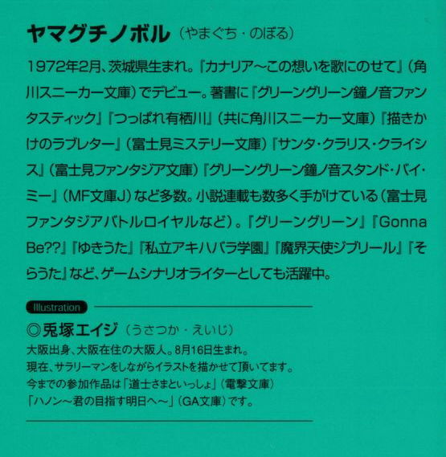
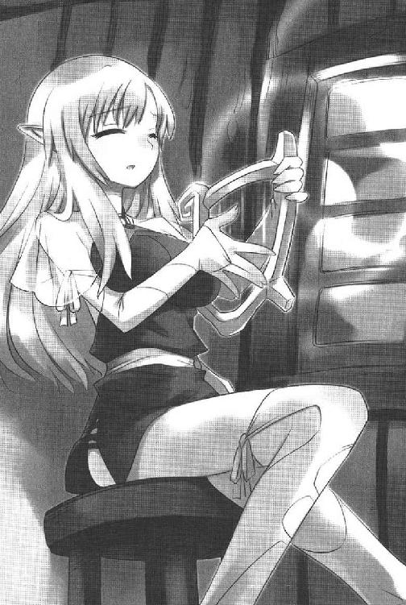

| [ヤマグチノボル] ゼロの使い魔08 | |
| ヤマグチノボル | |
| (2015) | |
|
ゼロの使い魔８〈望郷の小夜曲〉
ヤマグチノボル
|

第一章 それぞれの終戦
「どうだい？ これが杖付剛毛精霊勲章さ」
ギーシュは得意げに鼻をうごめかして、クラスメイトに白い毛の縁飾りがついた勲章を見せびらかしていた。ほぉ～～～、っとクラスメイトの間からため息が漏れる。
「剛毛じゃなくて、白毛じゃないのか？」
誰かにそう突っ込まれ、ギーシュは顔を赤らめた。
「ああ！ そうとも言うな！ 白毛勲章！」
ギーシュは教室の隅っこを、ちらっと見た。そこにはモンモランシーがいる。クラスメイトたちはギーシュの周りに集まっているのに、肝心のモンモランシーときたら、机に肘をついて、つまらなそうに窓の外など眺めている。こっちに来て、自分の話を聞いて欲しいのに......、とギーシュはちょっとせつなくなった。
「すごいな......、ギーシュ、お前が指揮した中隊が、シティオブサウスゴータへの一番槍を果たしたんだろ？」
「まあね」
と鼻高々にギーシュは、頷いた。皆して口々に、偉大な戦果をあげたクラスメイトを褒めそやす。
「いやぁ、ギーシュ。正直俺たち、お前のことを単なる口だけ野郎だと思っていたけど、認識を改めなくちゃいけないようだな！」
「すごいわ！ ギーシュ！ 見直しちゃったわ！」
ギーシュはこれでもか、と言わんばかりにのけぞった。それから足を組み、得意げに指を立てる。
「ぼくと、その勇敢な部隊がオーク鬼の一部隊をやっけたときの話をしてあげよう」
おお～～～っと、どよめきが起こる。
またもギーシュはモンモランシーの方を見た。すると彼女は、せつなげにため息などついた。なんでため息なんかつくんだモンモランシー......、とギーシュはますます哀しくなった。そんな彼女の気をひくために、ギーシュはことさら大きな声をあげる。
「崩れた壁にとりついたとき、中からオーク鬼が次から次へと出てきた！そのときぼくは、配下の鉄砲隊に向かって冷静に指揮を下した！第一小隊！前へ！構え！テーッ！」
テーッ！ と言うとき、ギーシュは薔薇の杖を振り下ろした。
「それでも敵は怯まない！ ここで魔法だ！ぼくはこう薔薇を振り上げて、魔法を唱えたね！アース・ハンド！」
地面から手が伸びて、対象者の足を掴む呪文だ。
しかし、教室の中なので土はない。何も起こらなかった。しばし、妙な沈黙が流れる。
「ドッカーン！ そこでワルキューレの登場だ！」
気を取り直すようにギーシュは再び杖を振る。舞い散る造花の薔薇の花びらが、七体のワルキューレに変わった。
「倒れたオーク鬼たちに、果敢に飛びかかるぼくの勇敢なゴーレムたち！」
ワルキューレは戦いの演舞を踊り始める。
そんなギーシュのゴーレムに、誰かが風の呪文を唱えた。
ぼんっ！ とワルキューレは吹っ飛ばされ、床に転がる。
「誰だ！」
嫌みったらしい笑みを浮かべた、ド・ロレーヌがギーシュを見つめている。かつて、成績のいいタバサを妬んで、決闘を吹っかけた少年であった。
「このぐらいの風の魔法で吹っ飛んでしまうきみのゴーレムが、よくオーク鬼の一撃に耐えられたな？」
「う......」
ギーシュは、冷や汗をたらした。調子にのってつい、話を大きくしてしまったが、こんな風に突っ込まれるとは思わなかった。
「いやその......、囮だよ囮！ ぼくのゴーレムを囮にして、敵をひきつけたところで一斉射撃！」
「おいおい、さっきから聞いてれば、活躍したのは銃兵みたいだな。お前の魔法は転ばせただけ？たいした活躍だな！ギーシュ！」
「は、配下の兵の手柄は指揮官の手柄じゃないか！」
「だったら、自分の魔法のことなんか言わなきゃいいじゃないか。その指揮ぶりで感心させてくれよ。しかしなあ、お前にまともな指揮なんかできたのか？おおかた、副官あたりに任せっぱなしだったんじゃないのか？」
図星で悔しかったが、ギーシュほ我慢した。ムキになったりするのほ、ギーシュの美学に反するのである。さて話を続けようと、余裕を気取り、足を組んだとき......、モンモランシーが立ち上がって、教室を出て行くのが見えた。
ギーシュは慌ててその背を追いかける。
「モンモランシー！」
石畳の廊下で、ギーシュは叫んだ。が、モンモランシーは振り返らない。すたすたと歩き去っていく。その肩と背に怒りの色を感じて、ギーシュはさらに追いかける。
「おいおい、待ってくれよ！ いったい全体どうしたっていうんだ？恋人よ！きみに聞いて欲しかったのに、まるっきり無視じゃないか！」
ギーシュはモンモランシーの肩に手を置いて、立ち止まらせた。
「ほら、これを見てくれよ。勲章だ！ 喜んでくれよ！きみの恋人は、立派な手柄をたてたんだぜ！どうだい、これできみも、ぼくのことを......」
「見直すわけなんかないじゃないの」
そこでやっと振り返って、モンモランシーは言い放った。
「ど、どうして？」
「勲章がどうしたっていうのよ？ わたしに何も相談しないで勝手に志願した、そっちの方が問題よ！」
予期せぬ攻撃に、ギーシュはたじろいだ。褒められこそすれ、こんな風に責められるなんて想像もしていなかったのだ。
「ちゃ、ちゃんと知らせたじゃないか！ 王軍に志願したって、手紙を書いたじゃないか！」
モンモランシーは、ギーシュを冷たい目でにらんだ。いつもとは違う質の怒りを感じ、ギーシュは黙ってしまった。
「知らせただけじゃないの！ そういうのは相談って言わないのよ！勲章より大事なことあるでしょ！」
しばらく考えたあと、
「たとえば？」
と真顔でギーシュが聞き返したので、モンモランシーは思いっきりその頬を張った。
「あいだぁ！ なんで叩くんだね！」
「わたしよ。わ・た・し」
「う、うん」
「あなたわたしの騎士なんでしょ？ 自分でそう言ったじゃない。だったら戦争がおっぱじまったら、そばで守るのが仕事でしょう？わかってるの？」
「は、はい」
ギーシュは直立して、頷いた。
「男の子がいない間、学園大変だったんだから！あなたたちが勲章だの手柄だのに夢中になってるときに、敵に襲われたんだからね！」
そうだな......、とギーシュも頷いた。帰ってくるなり、その話は聞いた。
「あなたたちがいないから、先生が命をかけて助けてくれたんだから。わたしがもっと、魔法が上手に使えてたら......」
モンモランシーは目をつむって、あのときのことを思い出した。魔法の矢で傷ついたコルベールを治そうとして、水の魔法を唱えたが......、力及ばず途中で精神力が切れ、気絶してしまった。
ギーシュもしんみりとして、うな垂れてしまった。
「わたし、もっとちゃんと勉強しようと思うの。代々水の精霊との交渉役を引き受けてきたモンモランシ家の一員のくせに......、助けることができなかった。わたしがもっと水の扱いに長けていたら......、先生を助けられたかもしれないのに」
身寄りのなかったコルベールの遺体は、なぜかキュルケが引き取った。そのキュルケは、今は帰省しているらしく、姿が見えない。同じ〝火〟の使い手として、ゲルマニアの地にに葬るつもりなのかもしれなかった。ついでに、あの青髪の小さな子も姿を消していた。
「それだけじゃないわ。大事な人を亡くした子だっているんだから。少しは気を使いなさいよ。浮かれてる場合じゃないんじゃないの？あんただって、仲良かったじゃないの」
ギーシュは思い出した。
迫り来るアルビオン軍に立ち向かったのは、ルイズの使い魔のあのサイトだということが、ロサイスから撤退するフネの上で噂になったのだった。
ルイズは取り乱し、何度もおろしてくれと将軍たちにかけあい、騒いだが、撤退中の艦隊が、使い魔のために引き返すはずもない。
その上、艦を指揮する艦長や、指揮官たちはその噂を一笑に付した。一人で止めに行く奴がいるなんて考えられない。また、たった一人で、七万を止められるわけがない、と。
アルビオン軍の歩みが遅れたのは、何か別の理由があるのだろう、と言って上層部はとりあわなかった。おそらく、その使い魔の少年は逃げ出したんだろうという者まで出る始末。
そして、周りの人間はすべてルイズにこう告げた。
もしもその話が本当だとして、七万の大軍に立ち向かって、生きているわけがない。残念だけど、諦めたほうがいい、と......。
そんな意見に納得したルイズではなかったが、それどころではなくなった。ほうほうの体でトリステインに帰った艦隊は、ガリアの参戦とアルビオン軍の降伏を知ったのだ。混乱は頂点に達し、もう、アルビオン軍を止めたと噂になった一少年のことなど、気にとめる者などいなくなってしまった。
結局、才人の件は限りなく戦死に近い〝行方不明〟ということでかたがついてしまった。
そんなこんなで、学院に帰ってきたルイズは激しく落ち込み、しゃべらなくなってしまったのである。まるでどこかに心を置いてきたように、寮の自分の部屋に閉じこもり、出てこない。
才人のそんな運命は、学院でも噂になっていた。なにせ学院での才人は〝なんだか伝説の使い魔とやららしい〟ということと、〝いろいろと手柄を立てている〟という二つのことで有名だったからだ。
モンモランシーもそんな噂を聞いて、部屋に閉じこもって出てこないルイズのことが心配になってしまったらしい。
「だから、せめて慰めてあげたいなって。あとで、ちょっと見舞いに行くつもり」
「そうだね。モンモランシー、きみは優しいんだな」
「別に優しくなんかないわよ。あのね、わたしだって戦ってたのよ。戦争してたのはあなたたちだけじゃないのよ。戦うっていっても、ほんとに戦ってたわけじゃないけど......」
「うん」
「わたしは〝水〟の使い手。わたしにはわたしの戦い方があって......、もっと強くなりたいって思っただけ」
窓に覗く空を見上げ、モンモランシーはつぶやいた。
「わたしの周りに悲しみがあるのは許せない。あるなら、癒さなくっちゃ気がすまない」
神聖アルビオン共和国と、トリステイン・ゲルマニア連合の間の戦は、降臨祭の終結とともに、終わりを告げた。
才人の犠牲によって、連合軍が無事撤退したあと、突如連合軍側にたって参戦してきたガリア艦隊は、クロムウェルをロサイスの司令部ごと吹き飛ばし、駐屯するアルビオン軍に降伏を促したのである。
圧倒的な兵力差と、一瞬で皇帝を吹き飛ばされた混乱とで、アルビオン軍は戦意を失ってしまった。その上、連合軍から離反したはずの軍が、夢から覚めたように我に返り、再びアルビオン軍に杖を向けてきた。そんな混乱のきわみの中で、戦わずしてアルビオン軍は降伏した。
ガリア軍はそのままロサイスに駐屯、臨時の調停のテーブルを設け戦争の後始末を開始した......。
こうして、足かけ八ヶ月にも及ぶ戦は、いきなり横槍を入れてきたガリア王国に主動されるかたちで終わった。
神聖アルビオン共和国の降伏から、二週間後......。
一年の始まりであるヤラの月の第三週、エオローの過に、正式に連合軍は解散となり、臨時の士官として志願した魔法学院の生徒たちも、次々に学院へと戻ってきた。
意気揚揚と帰ってきたものもいれば、何の戦果も得られずに、帰ってきたものもいる。激戦をくぐり抜けたものもいれば、何ら戦果に寄与することのない任務についたものもいた。
魔法学院の生徒たちは、一部を除いて後方の輜重部隊などに回されたので、犠牲もなければ戦果もないものがほとんどであった。
そんなわけで、戦果をあげた一部の生徒たちの威張りようときたら、そりゃもう天にも昇る勢いである。
ギーシュも、そんな調子で散々に自分の手柄を自慢していたのであったが......。
夕刻......。
モンモランシーを部屋に送ったギーシュは、ちょっとせつない気持ちになって散歩をしていた。あまり人の来ない、ヴェストリの広場を行ったり釆たりする。
そういえば......、才人と自分は出会った頃、ここで決闘をしたなあ、なんて思う。あのとき才人は、やられてもやられても立ち上がってきたのであった。
次に目に入ったのは、火の塔の隣にしつらえられた才人のお風呂と、ルイズから追い出されたときに、彼がしばらく寝泊まりをしていたボロテントであった。ギーシュは、ここで才人と飲み明かした日があったことを思い出した。
そんな風に、才人との思い出に浸っていると......。
なんだか目頭がじーん、と痺れてくる。ギーシュだって、そりゃ哀しいのである。哀しいから、あんなに教室で騒いでいたのかもしれない。
「サイト。ルイズ以外、誰も信じてないが......、ぼくはやっぱりきみが、七万のアルビオン軍を止めたんだと思うよ。きみはなにせ、ぼくのワルキューレに殴られても、殴られても立ち上がってきた男だからね......。きみならやっても、おかしくはないと思う」
ギーシュはごしごしと目の下をこすった。
「きみは平民だが、ぼくは友情など、抱いていたんだよ」
そんな風に一人、薄く涙を浮かべていると、テントの中ががさごそと動いた。
「サイト......？」
しかし、中から出てきたのは......。
「ヴェルダンデ！」
ギーシュの使い魔の巨大モグラであった。
「なんだ、きみはここにいたのか......」
ギーシュはしゃがみこみ、愛する使い魔を撫で始めた。
「きみもやっぱり、彼を懐かしんでいたのかい？」
モグラはフガフガと、ギーシュに鼻をこすりつけた。そのつぶらな瞳が、どことなく哀しげであった。
「そうか、きみも哀しいんだね......」
しばらくギーシュはそうやってヴェルダンデと抱き合っていたが......、おもむろに立ち上がった。
「サイト、ぼくは、きみを英雄だと思う。だからぼくなりにできることを考えた。ヴェルダンデ！土を山のように集めてくれ！」
ヴェルダンデは頷くと、猛烈な勢いで土を掘り返し始めた。ギーシュの前に、土の山ができていく。
「ぼくは土系統のメイジだ。だから、きみに土で敬意を表する。ここに、きみのでっかい像を作ろうと思う。きみのことを忘れないためにね」
ギーシュは土の山に、魔法をかけた。すると、土は粘土のように変化した。両手をそこに突っ込み、ギーシュは捏ね上げるようにして像を作り始めた。
「でっかいやつだサイト。五メイルはあろうかという、でっかい像をおったててやる。きみは魔法を使えなかったから......、ぼくはこの両手で像を作る。敬意だサイト。貴族のぼくが、敬意を表するんだ。喜んでくれよな！」
ギーシュもモンモランシーも、心を痛めていたが......。やっぱり一番悲しんでいたのは、ルイズであった。
自分の部屋で、ルイズは膝を抱えてベッドに座っていた。いつもの制服姿であるが、頭に妙な帽子をかぶっていた。
いつだか、才人にプレゼントした自作のセーターであった。どちらかというと前衛芸術のオブジェに近いそれは、無理やり袖を通しても顔が出ない。やはりかぶったほうがしっくりとくる。
そんなルイズの目の前には、唯一の才人の持ち物であるノートパソコンが置かれていた。電源が入ってないので、画面には何も映っていない。
ルイズは、黒いノートパソコンの画面をじっと見つめていた。才人が初めてやってきた日、自分に見せてくれた画面を思い出す。
綺麗だった。
そう思ったら、じんわりとまぶたの裏が熱くなる。
思えば才人は......、いっつも自分にそんな景色を見せてくれていたのだった。わけがわからないけど綺麓で、なんだかわくわくして、不思議な気分にさせる景色を。
自分たちと違う考え、容姿、行動......、その一つ一つが胸に蘇る。
ルイズは、胸に下がるペンダントを見つめた。ぽろりと、涙が目頭からこぼれる。
才人は......、いっつも自分を守ってくれていた。この首にかかるペンダントのように、いつもそばにいて、自分の盾となってくれた。
フーケのゴーレムにつぶされそうになったとき。
ワルドに殺されそうになったとき。
巨大戦艦に対峙したとき。
敵に騙されて我を忘れたアンリエッタに、水の竜巻の魔法をかけられたとき。
そして......、味方を逃がすために〝死ね〟と命令されたとき......。
才人は必ず、自分の前に立って剣を構えてくれた。
伝説の〝ガンダールヴ〟、その名のとおり、自分の盾になってくれた。
そんな才人に、自分は優しくしたことなどあっただろうか？
いつも意地を張って、わがままばかり押しつけていたような気がする。
「ばか」
涙が熱かった。
「わたしのことなんか放っておけばよかったのに。こんな恩知らずでわがままな、可愛くないわたしのことなんか、無視して逃げればよかったのよ」
ルイズは流れる涙を拭いもせずに、じっと想いをめぐらせた。
「あんなに、名誉のために死ぬのはバカらしいなんて言ってたくせに......、自分でやってちゃ世話ないじゃないの」
才人を責める言葉は、そのまま自分に返ってくる。自分の言葉が、己の心をえぐる槍となって、ルイズを激しく傷つけた。
「好きって言ったくせに......、わたしを一人にしないでよ」
黒い画面のままのノートパソコンを見つめ、ルイズはつぶやいた。
「わたしね、あんたがいないと、眠ることもできないのよ」
膝を抱いて、いつまでもルイズは泣きつづけた。
トリステインの首都、トリスタニアの王宮の執務室で、アンリエッタは気が抜けたような顔で、椅子に腰掛けていた。
アルビオンでの一部王軍の反乱、ド・ポワチエ将軍と、ゲルマニア軍司令官ハルデンベルグ侯爵の戦死、全軍の壊走......、そして撤退許可を求める報告。
連合軍参謀長のウィンプフェンよりそれが届いたとき、アンリエッタやマザリーニを含む王宮の面々は混乱した。敵が放った偽報ではないか？と疑うものもいた。
撤退か交戦継続か？ 紛糾する会議をまとめたのは枢機卿のマザリーニであった。
「ここは王宮であって戦場ではない」と、撤退を認めない大臣たちを押さえつけたのである。
しかし......、結果として撤退は意味のないものになってしまった。
突如現れたガリア艦隊が、アルビオン軍を降伏に追い込んだのである。それからほどなくして、ガリアは混乱を極めるトリステインに特使を派遣。今後のアルビオンの処遇について会議を行う旨を知らせてきた......。
読めぬガリアの動向にトリステイン王宮は揺れたが、戦の決着をつけてしまったガリアに逆らうべくもない。
それから二週間ほどが過ぎた今日、アンリエッタはロサイスで行われる予定のその会議に出席すべく、準備を整えているところであった。
アンリエッタは、机の上の、ガリア大使から送られてきた書簡を手にとった。
『ハルケギニアの秩序を乱す〝共和制〟の勃興を封じ込めるべく、ガリア王政府は、ハルケギニア各国とさらに密なる関係を築き上げる必要を感じ......』
と前文が続いている。
しかし、目から入った言葉が、頭の中で意味をなさない。
アンリエッタの心の中にあるのは、空洞だった。深い、冷たい、どこまでも落ちていくような暗い穴だった。覗き込んでも、まったく深さがわからない、虚ろな穴であった。
あんなに憎んでいたクロムウェルは死んだ。アルビオンの貴族派は壊滅した。
なのに、どうして気持ちは晴れないのだろう？
「どうして？」
誰に言うでもなく、つぶやく。
「ウェールズさまを殺した貴族派が許せなかった。その死を弄んで、わたしを騙したあいつらが許せなかった。......それで？」
それで何かが変わったのだろうか？
なにも変わらない。
アンリエッタは両手で顔を覆った。せきを切ったように、感情が溢れてきて、どうにもならなくなってしまったのであった。
扉がノックされたが......、アンリエッタは答えることができなかった。扉があけられ、枢機卿のマザリーニが入ってきたときも、アンリエッタは机に顔を埋めたままであった。
「お疲れのようですな」
とマザリーニはつぶやくように言った。
そこで初めて、アンリエッタはゆっくりと顔をあげて頷いた。
「はい。でも、大丈夫です」
「めでたいですな。何はともあれ、戦は終わりました。たとえ全軍が壊走し、予期せぬ援軍を得ての勝利とはいえ、勝利は勝利です。なんともはや、ガリアには何度礼を述べても足りないですな」
そうですね、と虚空を見つめ、アンリエッタは言った。
マザリーニはそんなアンリエッタを気にした風もなく、言葉を続ける。
「しかし、油断はなりませんぞ、陛下。あれだけ参戦を促したのにもかかわらず、腰をあげなかったガリアが突然参戦したのには、必ずやなんらかの理由があるはず」
「そうでしょうね」とアンリエッタは心ここにあらずといった体で、返事をした。
マザリーニはアンリエッタが肘をついている机に、どさっと紙の束を置いた。
「......書類？」
「はい。是非とも、陛下に目を通していただかねばならない書類です」
「あとでよろしいですか？ 今は、ちょっと......」
「いえ、今、目を通していただかなければ因ります」
「決裁なら、あなたの裁量にお任せします。枢機卿、あなたはよくしてくださいますわ。なんの心配も......」
「御目を通されよ」
アンリエッタは首を振った。
「申し訳ありません。正直に言うと、疲れているのです」
「御目を通されよ！」
強い語調で、マザリーニは繰り返した。鳥の骨と民に揶揄された、痩せた中年男の剣幕に押され、アンリエッタは上の一枚を手にとった。
上から下まで、名前がぎっしりと書かれている。
いったい、なんの名前だろう？
「......これは？」
冷たい声で、マザリーニは告げた。
「こたびの戦での、戦死者の名簿です」
アンリエッタは絶句した。
「貴族、平民、将軍士官、兵隊......、貴賎を問わず、わかる限りのすべての名前が記されております」
「おおお......」とアンリエッタは顔を覆った。
「彼らが何をよりどころとして、死んでいったか陛下はご存知か？」
アンリエッタは首を振った。
「......わかりませぬ」
「わかりませぬか？ いえ、わかっておいででしょう。彼らは、陛下と祖国の名のもとに、死んでいったのですぞ」
アンリエッタは、深く頭を垂れた。
マザリーニは、冷たい口調で言い放った。
「大臣どもの中には、〝戦も外交〟などとぬかして、将兵を駒のようにとらえ、数字の損得で戦の是非を問う輩もおります。はは、あながち間違いではありませぬ。ただ、お忘れ召されるな。その〝駒〟にも、家族がおり、生活があり、そして愛する者がいたことを。信ずるに足る何かを抱いていたことを」
マザリーニは名簿を叩いた。
「王たるもの、戦を決断せねばならないときもありましょう。将兵を死地においやることもありましょう。ただ、お忘れ召されるな。ここに書かれた名前の数だけ正と義があったことを。ここに書かれた名前の数だけ、守らねばならないものがあったことを」
アンリエッタは泣き出した。
子供のように泣いて、跪き、マザリーニの膝に顔を埋めた。
「わたくしは、何度地獄の業火で焼き尽くされればよいのですか？申し上げます。神の代弁者の枢機卿たる貴方の足元で、この罪深い女王は懺悔いたします。ああ、正直に申し上げます。こたびの戦、心にあったのは、復讐のみでした。この復讐がなされるならば、悪魔に魂を売り渡してもかまわぬと思いつめておりました。しかし、実際に魂を売り渡してみれば......、何もありませんでした。後悔さえもありませぬ。ただ、空洞があるのみです。深い、深い穴が広がるばかりです」
「............」
「わたくしは......、そんなことにも気づかない愚か者でした。愛に我をわすれ、魔法衛士隊の隊員たちを死に追いやり、友に恐ろしい魔法をぶつけても、気づきませんでした。必要があったかどうか疑わしい戦を続けても、気づきませんでした。大事な人たちの力を、己の復讐のために利用しょうとしても気づきませんでした。そして、復讐が終わって初めて......、気づいたのです。何も変わりはしないことに、気づいたのです」
赦しを、そして教えを請うような声で、アンリエッタは涙混じりにつぶやいた。
「教えてください。わたくしは......、どうすればよいのですか？せめて己の手で喉でもかききれば、この罪は消えるのですか？」
マザリーニは、そんなアンリエッタの身体を突き放した。怯えた子供の目で、アンリエッタはマザリーニを見上げた。
「陛下を裁けるのは、神のみです。陛下自身も、陛下をお裁きにはなれないのです。始祖の御名において神より与えられし王権とは、そうしたものなのですよ。背負いなさい。重くても、つらくても、放り出してはなりませぬ。この先、どれほど眠れぬ夜が続こうとも、決して忘れてはなりませぬ。彼らは、陛下と祖国の名において、死んでいったのだから。たとえ飾りの王であろうが、彼らはその飾りの名において、死んでいったのだから。死も、罪も、消えることはありませぬ。悲しみが癒されることはありませぬ。それはいつまでもじっとそこに座って、陛下を見つめております」
アンリエッタの心は石のように冷え、かたまり、あらゆる干渉を拒否したがった。
アンリエッタは、呆然と名簿を見つめ......、つぶやいた。
「王になんか......、なるんじゃなかった......」
「そう思わぬ王はおらぬのです」
マザリーニは深く一礼すると、執務室を出て行った。
あとに残されたアンリエッタは、しばらくじっとしていた。身じろぎもしなかった。
窓から夜の帳が訪れ、二つの月が執務室を照らし始めたとき......、アンリエッタはやっとのことで顔をあげた。
アンリエッタは窓の外の......、月の姉妹を見つめた。
涙は乾いて、頬にこびりついていた。
「そうね......、なにもないんだわ。もう、涙さえ出ないもの」
それからアンリエッタは小姓を呼び、財務卿を連れてくるよう頼んだ。おっとり刀で駆けつけた財務卿に、アンリエッタは告げた。
「ここと寝室と......、いえ、王宮中の王家の財産を、すべて処分してお金に換えてください」
「......は？」
「すべてです。よいですか？ 衣装も最低限で結構。家具も、すべてです。ベッドも、机も、鏡台も......」
混乱した頭で、財務卿は言った。
「ベッドも？ で、では陛下は、どこでおやすみになられるのですか？」
「藁の束でも持ってきてください。それで十分ですわ」
財務卿は絶句した。床で寝る女王など、聞いたこともない。
「売り払って得たお金は、戦死者の遺族への弔意にあててください。貴族、平民、差があってはなりません。等しく分配してください」
「で、でも......」
「国庫は苦しいのでしょう？ 存じておりますわ」
アンリエッタは、身につけた宝石をすべて外し始めた。
驚愕に目を見開いたままの財務卿に、一つ一つ手渡していく。左手の薬指に嵌めた、ウェールズの形見の〝風のルビー〟に気づき、一瞬目をつむったが、それも外して財務卿に手渡した。
「これも、売り払ってください」
「よいのですか？」
「はい。あとこれも......」
戦の間中、祈りを捧げた始祖像を指差す。何百年、何千年と王家を見守りつづけた始祖像であった。
「でも、しかし......」
「今、祖国に必要なのは、神への祈りではありません。お金です。違いますか？」
財務卿はぶるんぶるんと激しく首を振った。
退出しようとした彼をアンリエッタは呼び止めた。
「申し訳ありません。それだけは返してください」
「これはこれは！ お返しするもなにも！」
手を伸ばして、アンリエッタは財務卿の持った盆からそれを取り上げた。
王冠であった。二人とも心ここにあらずだったので、気づかなかったのだ。
「せめてこれがなければ、誰もこんな愚かなわたくしを、王とは認めてくださらないでしょうから」
これ以上ない恐縮を見せて財務卿が退出したあと、アンリエッタは名簿を繰り始めた。
もちろん、覚えられる量ではない。
でも、己の心にしっかりと刻みつけていく。その名前の裏側にある生活に、想いを馳せる。赦しを請おうか、と考えたが、やめた。
名簿を読み終える頃には、空が白み始めていた。
アンリエッタは最後の一枚を手にとった。
末尾に書かれた名前を見つけ、彼女は息を呑んだ。
いつか聞いた珍しい響きの名前が、そこに書かれていた。
第二章 才人の朝
ジリジリジリジリ、と目覚ましが鳴って才人は目覚めた。
むくりと、ベッドから起き上がる。
そこは地球は日本、東京の自宅二階の六畳間......、自分の部屋であった。
一瞬、違和感を覚える。どうにも説明しにくい、違和感である。
自分の部屋なのに、なんだろうこの違和感は。
半分寝ぼけた頭のまま、ロボットネコの時計をとると午前八時三十分。そんな些細な違和感も吹っ飛び、「いけねえ！」と叫んでベッドから跳び起きる。
遅刻じゃないか！
階段を二段飛ばしで一階に下り、キッチンで洗い物をしていた母に文句を言った。
「母ちゃん、なんで起こしてくんないのよ！」
「自分で起きろっていっつも言ってるじゃないの」
その瞬間、才人の胸をセンチメンタルが襲う。
髪をひっつめている後ろ姿を見ていたら、不意に才人はじんわりとしてしまったのである。いつも見ているはずの母の背中なのに、どうしてそんな風に感じるんだろう。
でも、今はそれどころじゃない。学校に遅刻しそうなのだ。テレビが置いてある居間に飛び込み、脱ぎっぱなしの制服を着込み、再びキッチンに戻って「間に合わないから行くよ」と母に告げ、皿の上にあったトーストを丸めて、ハムスターのように口いっぱいにほおばりながら玄関を飛び出していく。
玄関を出ると、そこは住宅街。
ふと、才人は立ち止まる。
母がいっつも趣味が悪いとこぼしている、向かいの家の赤い塀。
たまに才人が実を失敬する、隣家の柿の木。電柱の脇には、ブロックの上に置かれたジュースの自動販売機。
いつもの風景。
見慣れたはずの光景なのに、どこか懐かしく、愛しく感じる。
これで三度目の違和感である。
その理由がわからずに、ぼけっと突っ立っていると......。
「サイトさん」と、呼びかけられた。
振り返ると、黒髪の少女が才人の学校の制服を着て立っていた。
「シエスタ！」
そう、シエスタである。
異世界ハルケギニアはトリステイン、魔法学院のメイドであるシエスタが、才人の学校の制服を着て立っているのである。
見慣れたブレザーを着込んでいるシエスタは、妙に新鮮で可愛らしかった。皆がそうしていたように、丈をつめて短くしたチェックのスカート。ブルーの上着に、白いブラウス。そして、清楚な紺色の靴下。
なんで東京にシエスタがいるんだろう？
どうして才人の通う学校の制服を着ているんだろう？
他にもっと不思議に思うことがあるような気がしたが、とりあえずの疑問が口をつく。
「なんでそんな格好してるんだよ！」
シエスタは、何を言ってるんだ？ といった顔になる。
「だって、わたしサイトさんと同じ学校通ってるんですよ。制服着てるの、あったりまえじゃないですか」
そうだったのか、と才人は頷いた。なるほど、そう言われてみればそうかもしれない。というか頭がぼんやりとしてて、うまく考えられない。
シエスタは駆け寄ってきて、才人の腕を掴んだ。
「ま、まま、ま、ま......」
顔を真っ赤にして、シエスタは口篭もる。
「どうしたの？」
「ま、待ってたんです......、いっしょに学校行きたいなって。それで......」
「そ、そっか......。じゃあいっしょに行こう」
まあ、可愛いからいっか、と才人は浮かんだ疑問を打ち消した。
「わぁい」と、微笑み、シエスタは先に立って歩き出す。そんな彼女を、春の風が襲った。
「きゃ」
強い春風が黒髪の少女のスカートを持ち上げる。その下から現れた、白い、滑らかな皮膚に、思わず才人は鼻を押さえてしまう。
「な、なんでシエスタってば......、パンツはいてないの？」
スカートの裾を押さえ、恥ずかしそうにシエスタが答える。
「だ、だって......、わたし......、貴族の方と違って、レースの下着なんか持ってませんし......」
「貴族なんか、この日本にはいないよ」
「そうでしたね」
変な会話だ、と才人は思った。違和感。
かみ合っているようで、なんかがかみ合っていない。
そんな風にぼーっとしていると......。
「遅刻遅刻！」
後ろからどんっ！ と突き飛ばされ、才人は地面に転がった。
才人を突き飛ばしたのは、桃色の髪の少女であった。パンをくわえたまま器用に唇を動かして、
「遅刻遅刻！ 遅刻しちゃう！」
と叫びながら引き返してきて、地面に転んだ才人を踏んづけていく。
「こ、この......」
と立ち上がろうとしたら、
「ああ、遅刻！ 遅刻だわ！」
と、今度は顔を蹴っ飛ばされた。才人はぐったりと地面に横たわる。
「ミス・ヴァリエール！」
シエスタが怒鳴る。
「もお～～～、遅刻！ 遅刻だってば遅刻！ 」
ミス・ヴァリエールと呼ばれた少女は、遅刻遅刻ちーこーく、と騒ぎながら、才人の上でダンスを操り始めた。地面に横たわったまま、才人は怒鳴った。
「遅刻が気になるんなら、人の上で踊るな！」
すると桃髪の小柄な少女は、腕を組んで才人を見下ろし、
「あんた誰のどこ見てデレデレしてんの」
ぷるぷると震える声で、そうつぶやいた。
少女はシエスタと同じデザインの、才人の学校の制服を着ている。ブラウスのボタンを外し、ネクタイを緩めたラフな着こなし。校則違反のぶかぶかのルーズソックス。でも、桃色の髪とその鳶色の瞳は、紛れもなくルイズであった。
「なんでお前、そんな格好してんだよ！」
しかしルイズはそんな才人の質問になど答えない。
「誰のどこ見てたの。おっしゃい」
「お前に関係ないだろ？」と才人が返すと、顔を踏みつけられた。
「関係あるわよ。あんたはね、わたしの使い魔なの。だから、いっつもわたしのことを見てなきゃダメなの。よそ見したらおしおきなの」
ルイズは、シエスタを忌々しげに見つめた。
「で、でで、でもって、胸が大きいメイドの方を見たら、拷問なんだからね。わかってんの？」
「ふっざけんな！」と怒鳴って立ち上がって、ルイズに掴みかかる。
「あ......」と小さなうめきを漏らし、ルイズはアスファルトの上に倒れた。才人はその上からのしかかり、顔を覗き込む。
「な、なにすんのよ......。ご、ごご、ご主人さまを襲うつもり？」
「そうだよ」
「貴族のわたしになにをするのよ！ 平民のくせに！」
「貴族がなあ、こんななあ、ルーズなんかはくかっつの！」
才人はルイズのはいたルーズソックスをさして怒鳴った。
「い、いいじゃない！ わたしが何はいたって勝手でしょ！使い魔のくせに！手をはなしなさい！」
「使い魔とか、ご主人さまとか、貴族とか、ここじゃ通用しないんだよ。なにせここは日本だからな」
ルイズは「はなしなさいよ」と叫んでじたばたと暴れた。暴れるルイズを押さえつけ、才人は燃えた瞳で覗き込んだ。
「お前......、ほんとはこうされたかったんだろ？」
そんなセリフが口から飛び出たが、まるで自分の言葉じゃないみたいだ。たとえて言うなら、自分が主役の映画を見ているような......、そんな気分であった。
「......え？」
「俺にこうやって押し倒されたかった。違うか？だから黒ネコ衣装なんか着たんだ。そうだよなこのやろう。どうなんだ。言ってみろ。ええおい、言ってみろ！」
いつかこんな言葉を口にしたことがあったなあ、と妙に冷えた部分で思いながら、才人は怒鳴った。
すると少女の頬がその髪のように桃色に染まっていく。誤魔化すように、そっぽを向いた。
「ば、ばっかじゃないの？ 誰が押し倒されたいって？ふ、ふざけてると、あんたのその無節操な大事なとこ蹴っちゃうんだから」
「蹴ってみろ」
と強い調子で言ったら、ルイズは唇を噛んだ。
「ど、どきなさいよぉ......」と弱々しい声でつぶやく。
「じゃあ、いただきます」と神妙な顔で頷き、起伏のない、ぺったらな平原を覆う上着のボタンを外そうとした。いつかこんなことしたなあ、と思いながら。すると、後ろに立ったシエスタに頭をフライパンで殴られた。
「いてえ！」
「ここは天下の往来ですよ。恥ずかしいからやめてください」
「なんでフライパンなんか......」
「お料理するのに持ちあるいているだけです」
「余計なことしないでよ！」と、ルイズがそんな悪びれないシエスタを怒鳴りつけた。シエスタは、ルイズに向き直る。
「助けてあげたのに、余計なことですって？ するとやはり〝どきなさい〟ってセリフは、嘘なんですね。本音じゃないんですね。やっぱりへンなことされたかったんですね」
「ち、違うもん！ メイドは黙って洗濯でもしてなさいよね！」
「じゃあ洗いますから、その洗濯板を貸してください」
「はあ？ 洗濯板なんか持ってないわよ！」
「あるじゃないですか。そこに立派なのが」
胸を指差され、ルイズは怪鳥のような雄叫びをあげた。
「ケ────────ッ！」
「たいらな胸で洗いましょう♪ しゃぼんをつけて、洗いましょう♪ごっしごしごしごっしごし♪」
歌いだしたシエスタに、ルイズがとびかかる。
「なによ！ 胸ばっかり大きくってあったまからっぽのメイド風情が！男に媚うることしか考えてないんでしょう！下着ぐらいはきなさいよ！」
「自分だって同じじゃないですか！ 思いっきり期待しながら添い寝してるくせに！ほとんど素っ裸に近い格好で！貴族がちゃんちゃらおかしいわ！サイトさんが襲ってくるのを今か今かと待ち構えながら目をらんらんと光らせてるんでしょう!?はしたないったらありゃしない！」
なによ！ つるぺた！ バカメイド！ とか言い合いながら、二人は派手にとっくみあいを開始した。いやもう、スカートを翻し、爪を立て、髪の毛を掴み、猛りくるうニワトリのように絡み合っている。
「や、やめろよ......」と才人はつぶやいたが、二人はまるで聞く耳を持たない。
そこに黒塗りのリムジンがやってきた。
助手席のドアがぼたん！ と開いて、顔を出したのは、白い手袋と黒のスーツに身を包んだマザリーニであった。マザリーニは後部座席のドアをあけると、恭しく一礼する。
中からは、白いワンピースに身を包んだアンリエッタが現れた。花の飾りがついたつばのない帽子をかぶっている。お姫さまというより、どこぞのお嬢さまといった出で立ちである。高そうなハンドバッグを小脇に抱えていた。
とととと、と才人に駆け寄ってくると、アンリエッタは手を差し出した。
「七万の大軍を、お止めになられたとか」
「はい」と才人はぼーっとなって答えた。
「まさに獅子奮迅の活躍でございますわね。ああ、あなたはトリステインの救世主。何もできぬ無力な女王ですが、忠誠には報いるところがなければなりません。さあ、この手に接吻をくださいまし」
その手をとって、才人が口付けると、次にアンリエッタは大胆にも腕を才人の首に回してきた。
「ひ、姫さま？」
「アンと呼んでくださいまし。さあ、次はこの唇に、お情けをくださいまし」
おろおろしていると、アンリエッタは才人の頭をがばっと抱きしめ、唇を重ねてきた。
やばい、と才人が思った瞬間、怒鳴り声が飛んでくる。
「あんた姫さまになにしてんのよッ！」
「高貴な方ばっかり！ つくづく高めがお好きなんですね！村娘なんか相手にできないっていうんですかッ！」
ルイズとシエスタの矛先が、自分に向けられたことを知った才人は、アンリエッタの腕を振り払って逃げ出した。
「お待ちになって！ この前の安宿での続きを！」
アンリエッタが叫んだ。
「安宿の続きってなによ！ どういうことよ！」
「なんかしたんですわ！ きっと妙な服でも着せたんですわ！」
とシエスタとルイズが叫びながら追いかけてくる。
ひぃひぃ走りながら逃げていると、角からドロロロロロロ、とアメリカンバイクが現れた。タンデムで跨っているのはスカロンとジェシカ。おそろいのワイルドな革衣装に身を包んでいる。
才人は二人のバイクに、ぼいん、と跳ね飛ばされた。
ジェシカが、ひょいっとバイクから飛び降りて、地面に転がった才人を見下ろした。
「ダメじゃない。こんなとこで油売ってちゃ。早くお店手伝ってよ」
「お、お前な......」
「あら？ 元気ないじゃない。じゃあ元気が出ること、しよっか？」
といたずらっぽい視線を才人に投げかけ、革の上着の隙間に覗く、豊かな胸の谷間に才人の手を導こうとした。
今はそれどころじゃない。
「ちょ、ちょっと待った！」
「何を待つの？」とジェシカは、男心をくすぐる色気を振りまきながら、艶かしい目つきで才人を見つめてきた。
「あんた、女の子の扱い、知らないんでしょ？だから散々な目に遭っちゃうのよ」
そのまま、才人がジェシカの瞳に吸い込まれそうになったとき......。
「また黒髪なのね！」
「わたしの従妹に！ なんてこと！」
才人はジェシカを置いて走り出す。大通りに出て、人波を掻き分けながら逃げていると、どんっ！と誰かにぶつかってしまった。
「す、すいません」
ぶつかってしまったのは、長い桃髪の女性であった。薄い紫のカーディガンを羽織り、何匹もの犬がつながれたヒモを握っている。
わん。わんわん。わふわふ。わんわん。
犬たちはわしわしと、才人に擦り寄ってきた。
「犬！ 犬がたくさん！ 犬がッ！ うわ！ わわ！」
「あらあら、この子たち、あなたのことが大好きみたいね」
振り向いた女性に見覚えがあった。ルイズの実家で見た顔だ。
桃色の長い髪に優しい大人の女性の雰囲気。
手を顎にそえて、コロコロと笑う。果たして桃髪のその女性はルイズの姉、カトレアであった。カトレアが連れた犬たちは才人の身体を鼻で散々にまさぐりはじめた。
「あ！ こら！ やめろ！ やめろってば！」
わふわふ、わんわん、わふわふ、わんわん。
「なによ！ 今度は犬ってわけ！ 犬同士お似合いじゃないの！っていうかちいねえさま！なによ！あんたってばやっぱりちいねえさまがいいのね！」
追いすがってきたルイズが怒鳴る。
「とうとう犬にまで！ 許せませんわ！」
とシエスタが怒鳴る。
二人とも、ものすごい形相である。あんな二人に捕まっては、命がやばい。でも、犬たちにのしかかられて身動きが取れない。
「犬まみれにしてあげるわッ！」
そう叫んだルイズが飛びかかってきた瞬間......、才人はぶわっと空中に持ち上がった。
「と、飛んでる？」
見上げると、才人は風竜に掴まれていた。風竜の首の上に、青い髪の少女が座っている。タバサとその使い魔の風竜、シルフィードであった。ひょいっと、シルフィードは背の上に才人を持ち上げる。
なぜかタバサはフライトアテンダントの格好をしている。子供のようなタバサが、そんな格好をしていると、何かの悪い冗談にしか見えない。
そんなタバサは振り向きもせずに、じっと本のページを見つめている。
「な、なんだお前か......。とにかく助かったよ。ありがとう」
ほっとして才人はお礼を言った。
が、タバサはいつものように、返事ひとつよこさない。
しばらく才人も黙っていたが......、そのうちに気まずくなってきた。何か話題を探そうと思い、タバサが読んでいる本に目が留まる。
「気になってたけど......、お前、いっつも何を読んでるんだ？」
タバサは答えない。
しかたなく才人はタバサの本を覗き込んだ。そこに書かれたタイトルを見て、あきれた声をあげる。
「はぁ？ 『恋愛の方程式～男の子に好かれるためには』？お前、こんなの読んでるのかよ！あはははは！お前もちゃんとこういうことに興味あるんだな！」
タバサは無言でページをめくった。怒っているのか、恥ずかしがっているのか、何もその瞳からは読み取れない。
「そういうのはな、いくら本を読んだってダメなんだよ。まずは、ちゃんと会話の一つぐらい、かわせるようになってからだよ。自分の気持ちを、伝えるってことが大事なんだ。うん」と、才人はもっともらしく頷きながらつぶやく。
「とにかくお前みたいに、黙りこくってちゃ、話にならないよ」
才人はタバサの頭をぐりぐりと撫でた。されるがままに、タバサは頭を振る。
「そうだ。じゃあまずは俺を柏手に、しゃべる練習してみろ」
タバサは無言で才人の顔を見つめた。待てど暮らせど、タバサの口はぴくりとも劾かない。
「おい？ なんだよ。それじゃ恋なんかできないぞー。ほら。ほらほら。お前、呪文以外の言葉を知らないんじゃないのか？ほら、なんか言ってみろ」
からかい半分に、タバサの頭を左右に振った。
するとタバサは、ぴょこんと立ち上がった。
「わかった」
「え？」
タバサはまったく表情を変えずに、マシンガンのように言葉を吐き出し始めた。
「恋ができない？ 大きなお世話。どっちつかずにメイドと胸なし魔法使いの間でふらふらしているあなたなんかに言われたくありません。あなたときたら、ちょっと胸の大きめなお姫様や街娘やお姉さんを見かけたら、すぐに鼻の下をでろーりでろりと伸ばしちゃってさあ大変。いけないいけない、そんなことはダメですきみの想いを受け止めることはできない俺は異世界から来た人間だから......、と言いつつ、身体が嘘ついてんのよ」
「な、お前......」と才人は顔を真っ赤にさせた。
「そりゃあ二人とも怒るわ。追いかけられるわ。散々お仕置きだってされちゃうわ」
「子供のくせに生意気言うんじゃねえよ！」
と、才人はタバサの身長を見て言った。小さなルイズよりも、頭一つぶんも低い、タバサの身の丈であった。タバサは表情を変えずに言葉を続ける。
「誰が子供？ 子供はあなたじゃない。あなたみたいな気が利かない男が二股なんて、十
年早い」
「ぎゃ」
才人は風竜の上にうずくまった。タバサに思いっきり股間を蹴り上げられたのである。タバサは才人の顔の上に、でんっ！と足を置いた。
「わたしのペットにする」
「ざっけんな！」
「何言ってるの。嬉しいんでしょ。こういうの好きなんでしょ。わたしみたいな小さな女の子に支配されたいんでしょ。顔に書いてある」
「こ、この......」と、才人は跳ね起きると、タバサの肩を掴んだ。
見つめ合う。
するとタバサは、頬を染めて顔を背けた。
そんな仕草に弱い才人は、一瞬、どきっとしてしまう。
「いきなりそんな顔すんじゃねえよ！」
次にタバサが繰り出した攻撃は、才人の予想を超えていた。
「や......」
「や？」
「やさしくして......」
や、やさしくしてって、おま。おま、おまえ......、と才人は酸欠の金魚のように口をぱくぱくとさせた。
そして次の攻撃は、才人の本丸を一撃で陥落させた。
「キ、キキ......」
「きき？」
「キスのしかた、教えて......」
意味わかんねえ。
さっぱりわかんねえ。
でも、かわええ。
いつもは無表情なだけに、この攻撃は才人にとって不意打ちであった。ただの不意打ちではない。いわゆる嬉しい不意打ちというやつだった。驚きと歓喜と興奮が、コンマ数秒の間に才人を包み、どうにかなりそうにさせた。いや、どうにかなってしまった。
よく見るとタバサは、白い雪のような綺麗な肌をしている。どこまでも蒼い瞳は、まるでサファイアのようだ。その蒼い湖は、幼い中に妙な厳しさをたたえていて、才人をどきどきさせた。そしてルイズに負けず劣らずの、高貴で上品な顔立ち......。幼い幼いと思っ
ていたから気づかなかったが、こいつって綺麗なんだな......。
そこまで想像して、こんな子供になに感じてるんだ俺は、と思いなおし首を振る。
「ば、ばっかおめえ、パパに怒られるぞ。つうかお前にキスなんかしたら、俺普通に捕まるから！」
怯まずタバサは唇を突き出してきた。
「お兄ちゃん......」
反則であった。風竜の上、才人が激しく葛藤で身もだえしていると、後ろから爆音が轟いた。振り向くと、ゼロ戦が飛んでいた。
「な！」
コックピットの中に、ルイズとシエスタの顔が見えた。
「なんで操縦できんだよ！」と怒鳴ると、
「ひいおじいちゃんに教わったんです！」とシエスタが叫んだ。
なんでこんなに大きなエンジンの爆音の中、声が聞こえるんだろう、と疑問に思う間もなく、ルイズの怒り声が聞こえてくる。
「今度はわたしより小さい子にまで！ あんたってば大きいのと小さいのどっちが好きなのよ！っていうかどっちでもいいのね！さいってい！」
ドン！ ドン！ ドド！ とゼロ戦の両翼が震えた。
二十ミリ機関砲弾は弾切れのはずじゃ？
と思ったら、飛んでくるのはワインの壜であった。
「味わって飲め！」と酔ったシエスタの声が飛ぶ。
酔っ払って飛行機運転すんなよなあ、と才人はせつない気持ちになった。
「いや、飛行機は操縦か」
とつぶやいたら、顎に壜がぶち当たる。痛い。
才人は焦った声で叫んだ。
「タバサ、飛ばせ！ 風竜の加速ならゼロ戦から逃げられる！」
「タバサ？ あたしはキュルケよ？ ダーリン」
いつのまにか、タバサはキュルケに変わっていた。しかも貝殻で要所を覆うのみの、グラビアから抜け出てきたような格好である。
「いいから早く逃げてくれ！ このままじゃ殺される！早く飛んでくれ！」
「飛べないわよ！」
「風竜だろうが！」
「あたしの火トカゲちゃんだもの」
いつしか才人が跨っているのは、キュルケのサラマンダーのフレイムになっていた。
「なんでだよ！」
サラマンダーは一気に落下を開始した。才人は慌ててデルフリンガーを掴もうとした。こうなったらガンダールヴの力で、追いすがるゼロ戦に飛び乗ってやる！と思ったが......。
「うわ！ 身体が軽くならねえ！」
左手を見ると、ルーンが消えていた。
「わ！ うわ！ わわ！」
ぐんぐんと地面に近づいてくる。
「落ちる！ 落ちる！ ん？ なんだあれ！」
何かが見える。
光だ。
「......光ってる。金色？」
激突する瞬間、才人はまばゆい、金色に光る何かに包まれた。
「落ちたッ！」
と、目を覚ました才人は絶叫した。
ぜぇぜぇ、と荒い息をついて、心底ほっとした声でつぶやいた。
「夢かぁ......」
ぼんやりした頭で、先ほどのドタバタドラマを反芻する。
シエスタとルイズに追いかけられたり、アンリエツタやジェシカや犬やタバサに迫られたり、のとんでもない内容のドタバタ騒動。
まあ夢でもなければ、ルイズやシエスタが地球は日本の才人の学校の制服を着ていたり、タバサがフライトアテンダントの格好をして迫ってきたり、なんてことがあるわけもないのだが。しっかし、俺ってばあんな夢を見るなんて......。
「そんなにモテ願望が強いのかな、俺って......」と、ちょっと恥ずかしくなって、身もだえした。しばし身もだえしたあと、今の俺、誰にも見られてないだろうな？と心配になって辺りを見回した。
「う」
しっかりと観客がいた。
才人の目に入ってきたのは、自分を見つめる子供たちの顔である。
大小男女取り混ぜて、いろんな顔があった。金色の髪、赤毛の子......、ブルネット、髪の色もさまざま。目を覚ますなりモジモジしたり、顔を赤らめたり、ほっとため息をついたり、挙動が不審な才人を心配そうな顔でじっと見つめている。どの子も薄汚れた服を着ていたが、目はいきいきと輝いていた。
一人の金髪の男の子が、才人の上に跨って、じっと顔を覗き込んでいる。
「えっと......、今の俺、見てた？」と尋ねたら、男の子の顔が恐怖に歪んだ。
「変な人だ！ 怪しい人だ！」と叫んで、逃げ出していく。
「お、おい......、誤解だ誤解！」
「変人だ！ 近づいちゃダメな種類の人だ！」
そのあとに残りも続く。
「ちょ、ちょっと待って！ 俺は別に変な人じゃ！」
しかし、そんな才人の言い訳の言葉も届かず、子供たちは一目散に部屋を飛び出していってしまった。
「なんなんだよ......、あいつら。ちょっと夢見て恥ずかしくなってクネってただけじゃんよ......。しっかし、ここどこだ？」
才人は自分のいる部屋を見回した。
こぢんまりとした部屋だった。ベッドの脇に窓が一つ、反対側にドアがあった。部屋の真ん中には丸い小さなテーブルが置かれ、木の椅子が二脚添えられている。
才人が寝ているベッドは粗末だが、清潔なものだった。白いシーツに、柔らかい毛布がかけられている。
「どっかの宿屋なのかな......。でも、なんでそんなとこに俺ってばいるのよ......、ってそれどころじゃねえだろ。俺、大怪我食らって......」
才人は焦って、自分の身体を見つめた。包帯が幾重にも身体を覆っている。そのときになってやっと、瀕死の淵へと追い込まれた激戦をはっきりと思い出した。
そう。
自分は......、ルイズたちを逃がすために、単騎七万の軍勢へと立ち向かっていったのだ。思い出すだけで、身震いするような激戦だった。
七万の軍勢の先鋒に突っ込んだあとは、デルフリンガーのアドバイスに従って、指揮官メイジを狙いまくった。
相当な数のメイジをやっつけたはいいが、魔法を散々に食らって意識が遠のき始めた。ふらふらになりながら、騎士に囲まれた偉い将軍っぽいメイジを見つけ、突っ込んだ。
その先の記憶はないのだが......。
「......とにかく助かったみたいだな」
と、ほっとしたような、気が抜けたような声で才人はつぶやく。
安心すると同時に、疑問がふつふつと湧いてきた。
魔法の矢や火の玉をこれでもかというほどぶつけられたのに、それほど傷が深いようには見えない。ファイヤーボールが至近距離で爆発して、左腕が炭みたいになってしまったことを覚えている。それだけじゃない。体中からやべえ、と思うぐらいの血が流れた。ぱっくりと開いた腹の傷。折れた骨が内臓にさきった感触。つまりは瀕死の傷だった。
それなのに、今こうして自分の身体を見ると......。
あんなにひどかった左腕の火傷は消え、ピンク色の皮膚が包帯の隙間に覗いている。身体中の傷も、とりあえずはふさがっているようだ。
才人は首をかしげた。
いったい、自分の身体に何があったんだろう？
「まあ、魔法使いがわんさかいる世界だから、何が起こっても不思議はねえか......」と、持ち前の楽天ぶりを発揮して、才人は独りごちた。
次の瞬間、知りたいことは『助かった』、それだけじゃないことに気づく。ほっと安心したら、いろいろと思い出したのである。
そうだ、自分の身体のこともそうだが、大事なことが他にもあったじゃねえか。
俺ってば、七万の大軍に突っ込んだはいいが......。
きっちり、敵軍を混乱させることはできたんだろうか？
味方が撤退するための時間は稼げたんだろうか？
ルイズや皆は、無事に逃げ出すことができたんだろうか？
「ううむ......、どうなんだろ？ 気になるね。ああ、デルフに聞くか」
才人はきょろきょろと視線を動かして、デルフリンガーを探した。
しかし、部屋のどこにもあのインテリジェンスソードの姿は見当たらない。捜して、あれからどうなったのか尋ねないと、と考え、才人は立ち上がろうとしたが......。
「いだッ！」
断末魔のカエルのような声が、自分の喉から漏れた。
ひきつるような激痛が、わき腹と足と腕と足首と首を襲ったのである。ほぼ全身を覆い尽くすような痛みに、才人は目を白黒させた。命は助かったが、ひどい怪我には変わりないのであろう。
目を覚ましてから今まで夢の中のように感じていたあの激戦が、急激にリアルな輪郭を持って、才人を揺さぶる。ガタガタと才人は震えだした。抑えようとしても、止まらない。
一歩間違えば、死んでいた、自分は間違いなく、九死に一生を得たのである。
そのまま震えがおさまるまで、ベッドに横たわっていたい。
「でも......、寝てられねえな」
確かめなければならない。
命をかけた自分の行動が、きちんと報われたかどうか知りたかった。
だから何度も起き上がろうとした。
いだ！ あいだだ！ と叫び、どうやったら痛みに襲われずに立ち上がることができるのだろうと、いろいろと試していたら......。
「まだ動いちゃダメよ」
子供が逃げていったドアの隙間から......、清水がさらさらと流れるような、涼しげな美声が響いた。
はっ、としてそちらの方を向くと、ドアをあけて、流れる星の川のような金髪の娘が現れた。
第三章 金色の妖精
現れた少女の姿を見て、まず才人の脳裏をよぎったものは......。
金色の光だった。
先ほどの夢で、最後に見た金色の光だ。
あの輝きが、現実のものとなって才人の目を焼いた。
慌てて目をこらす。よく見ると、実際に光っているわけではない。ただ、その少女の持つ印象が強すぎて、ありもしない光を感じてしまうのであった。
それぐらい、目の前に現れた少女は美しかったのである。いや、美しい、という言兼が陳腐に思えるほどに、神々しい美貌を纏っていた。身体が動いたら、跪いて拝んでいたかもしれない。
とりあえず「はだ、わだ、ほわだ」と、声にならないうめきをあげて、才人は口をぱくぱくさせた。
「どうしたの？」
きょとんと首をかしげ、少女が間い返す。
「いや、あの、別に、その」
少女はちょっと、気後れしたようにもじもじしたあと、意を決したように探呼吸して、才人に近づいてきた。粗末で丈の短い、草色のワンピースに身を包んでいたが、美しさを損ねるどころか、逆に清楚さを演出していた。短い裾から細く美しい足が伸び、そんな足を可憐に彩る、白いサンダルをはいている。
そんな素朴な格好が、眩しすぎる美しさを和らげ、親しみやすい雰囲気を与えていた。
才人のそばにやってくると、少女は無理に笑いを浮かべる。あなたを安心させるために頑張ってつくりました、というような笑顔だ。でも、美しさに支障はきたさない。むしろ、人のよさがにじみ出た。
「よかった。二週間近くも眠ってたから......、目覚めないかと思って心配してたの」
「そんなに寝てたのか......」
二週間近くも寝てたことも驚きだが、少女の美しさはさらに上の驚愕であった。
はぁ、光を纏うように感じたのは、額の真ん中で左右にわけられた長い髪のせいだ。波打つ金色の海のようなそのブロンドの髪は窓から漏れる陽光を反射して、首をかしげただけで、しゃららと崩れ、頬の上を泳いだ。
作りこまれたＣＧのような、完璧な輪郭とシルエットを持つ顔を見ていると、美しい、と思うと同時に不安になった。こんな綺麗な人間は、何かの間違いにしか思えない。
そして......、金色の髪の隙間から、見たことのない、ツンと尖った耳が覗いている。
随分と珍しい耳のかたちだな、と思いながら身体を動かそうとした刹那、先ほどのものとは比べものにならない激痛がわき腹に走った。今まで感じたことのない強い痛みだ。
そんな痛みで、急激に〝生〟を実感した。自分は絶対死ぬ、と思っていただけに、その生の実感は、才人を思いっきり揺さぶった。
しおれた花が水を吸うように、才人の中に安堵が滑り込んできた。それは安心の激流だった。命が助かった、という、感情の激流であった。
「そっか......、生きてんだ、俺......」
じんわりと目頭が熱くなる。生きている、そう思うと、いまだひきつったように痛む体の傷さえもいとおしい。
「あは。痛いってことは、生きてるってことだもんな」
目頭に涙を浮かべ、才人はつぶやいた。
そんな様子を見て、
「あ、あの......、包帯、きつくない？」
澄んだ大粒の翠眼をぱちくりとさせ、少女は才人に手を伸ばす。
生を実感したら、目の前の少女の美しさが、今度は現実の輪郭を伴って才人の心を震えさせた。
ああ、こんな綺麗な人に触ったらバチが当たる。
咄嵯にそんなアホなことを感じてしまった才人は、びくっ！と後ろにのけぞった。
すると、少女は、はっ！ と目を見開いた。
髪の隙間から覗いた自分の耳に気づき、両手で隠した。みるみるうちに、その頬が桃色に染まっていく。
「ご、ごめんなさい」
「え？」
「でも、安心して。危害をくわえたり、しないから」
才人はきょとんとした。どうやら、才人が後ろにのけぞったことで怯えていると誤解したらしい。とんでもない誤解である。才人は、あまりの美しさに気後れしただけで、怯えたわけじゃない。
「違う違う！ その、別に怯えたわけじゃないんだ。ただ、きみがあんまりその、き、き、きき」
「きき？」
「綺麗だから、その......」
そんな自分のセリフに、才人は顔を赤くした。女の子に『綺麗だ』なんて言うことに、単純に憤れてないのである。
彼女は驚いた顔になった。
「綺麗？」
「う、うん」
「この耳を見ても、そう思うの？」
そう言って、耳を隠す手をどけた。
「うん」
怪訝な顔で、才人は頷く。確かに尖ってて、珍しいかたちの耳である。でも、このハルケギニアには、オーク鬼やらドラゴンやら、生き物とはとても思えない水の精霊やら、奇妙な生き物がたくさんなのである。いまさら尖った耳程度で、驚いたりはしない。ま、そういう人もいるんだろう、ぐらいにしか思えない。
「......ほんとうに、驚いていないの？ 恐くないの？」
疑わしそうな顔で、少女は才人を見つめた。
「ほんとのほんとに驚いてないし、恐くもないよ。なんで恐くない？なんて聞くの？なんつうか、他に恐いのたくさんいるだろ。ドラゴンとか、トロル鬼とかさ」
少女はほっとしたような顔になった。
「エルフを恐がらない人なんて、珍しいわ」
「エルフ？」
聞いたことがある名前だ。記憶の底をさぐって、思い出す。えっと確か、時々話題にのぼる、〝東方〟に住む種族の名前であった。噂によると凶暴で、聖地がどうのこうので人間と仲が悪いらしい。
どんな恐ろしい連中なんだと思っていたが、目の前の少女はそんな評判とはほど遠い。
「そう、エルフ。わたしは〝混じりもの〟だけど......」
自嘲気味に少女がつぶやく。すると、青磁のような額に、憂いの影が浮かんだ。
しかしまあ、うっとりするような憂い顔だ。
しばし、見とれてしまったあと......、才人は思い直す。
おい才人、美少女観賞を楽しんでいる場合じゃない。
気になることがたくさんあるじゃねえか。
どうやって、俺は助かったんだろう？
戦争はどうなったんだろう？
ルイズは？
シエスタは？
皆は？
でも、まずは目先のことだ。あとでおいおい聞けばいい。
「きみが助けてくれたのか？」
才人は身体に巻かれた包帯を指差して言った。
「ええ」少女は頷いた。
「そっか......。ありがとう。ほんとにありがとう」
何度も、才人はお礼を述べた。いくら礼を言っても足りないぐらいである。
少女ははにかんだような笑みを浮かべた。
なんだか、才人と会話をかわすのが照れくさいようだ。気後れするぐらいの美貌の持ち
主なのに、随分と初心らしい。
そんな彼女の仕草に、つい頬が緩んでしまいそうになるが、才人はこらえた。今は、でれっとしてる場合じゃないのである。聞かねばならないことがたくさんあるのである。
でも......、と何かがひっかかった。
ちょっと、おかしくねえか？
彼女が俺を助けた？
おいおい、俺は七万の大群に突っ込んだんだぜ？
見たところ、少女は普通の村娘のような格好だ。どうやって大軍の中から、彼女は自分を助けることができたんだろう？
だんだんと、才人の中に猜疑心が芽生えはじめた。
すると、彼女の美しさが、何か含みを持ったものに感じられてきた。
もしかしたら、このエルフ女、敵なんじゃねえの？
俺を安心させて、なんらかの情報でも引き出そうとしてるんじゃ......。
そう思うと、目の前の美しい少女が敵のワナに見えてきた。映画やマンガでは、スパイは綺麗な女と、相場が決まってる。
その上、こっちの世界に来てルイズに出会い、才人は一つの真理に到達していた。
〝可愛いからって、中身もそうとは限らない〟
そういう真理である。身体を張って得た実例に満ちた、揺るぎない真理であった。
そんな真理があいまって、彼女に対する疑問が膨れあがる。
「むむむ......」
「どうしたの？」
才人は、えー、こほん、と咳をすると、冷静な声で尋ねた。
「助けてくれたことについては、ほんとのほんとに感謝する、でも、一つ聞いてもいいかな」
「どうぞ」
「どこで俺のことを助けてくれたんだ？」
「森に倒れてたから、ここに運び込んだの」
森に倒れてた？
俺は、大軍の中で倒れたんだぞ？
なんで森なんだよ。
才人は目を細めて、少女を疑いの眼差しで見つめた。
そんな才人に、気まずい雰囲気を感じたのか......、
「じゃ、じゃあ、食事を持ってくるわね」
少女はとりなすようにそう言って立ち去ろうとする。その腕を、才人は掴んだ。
「俺の剣をどこにやった？」
「ああ、あなたのそばにあった剣？ あのね、あの剣ね、なんだか知らないけどね、騒ぐのよ。あなたを起こすといけないと思って、向こうの部屋に置いてあるけど......」
ぴくん、と才人の眉が跳ねた。昔見た、探偵ドラマの中のセリフを思い出す。美しい薔薇には、刺があるのである。美人はだいたい犯人なのである。くそ、言いくるめられるものか。
「デルフが騒ぐのには、なにか理由があるはずだ」
「理由があるはずだ、なんて言われても......」
困ったような声で、少女はそう言った。それから、自分の腕を握る才人の腕を見て、少女は恥ずかしそうに唇を噛んだ。
「あ、あの......、お願い、その、手......」
少女は、才人の手を振りほどこうともがいた。しかし、才人は離さない。痛みに顔をしかめつつ、華奢な少女の腕を引き寄せる。すると、ますます少女の頬が赤みを増していった。
「あの......、離して......、お願い」
「ずばり言いましょう」
しかし才人ときたら、すでに犯人を追い詰める名探偵気分全開である。随分と困った性格であった。死ぬような目に遭っても、こういうせつない部分は直らないらしい。
「きみはアルビオン軍だね。言ってごらん、わたし、ア・ル・ビ・オ・ン」
「ち、違うわ。そりゃアルビオン人だけど、軍とはなんの関係もないわ」
怯えた顔で、少女は首を振る。しかし、探偵気分の才人は、すっかり彼女がアルビオン軍の手のものだと疑ってしまっていた。
「あなたは、〝俺が森の中で倒れてた〟そう言いましたね？ところがですな、俺は、敵軍のど真ん中で意識がなくなったんですな！これが」
「そ、そんなのわたし知らない......」
「吐きなさい」
「あ......」
少女は、才人に腕を引っ張られバランスを崩した。そのまま、才人の太ももの上に倒れこむ。
「吐け！ って、え？」
瞬間、才人の顔が蒼白になった。
何かが、才人の太ももの上で、ぐにょ、と潰れたのである。
探偵気分と少女に対する疑問が吹き飛び、別の疑問が心の中で膨れ上がっていく。
おい才人、尋ねるぜ。
今、太ももの上で潰れた物体はなんだ？
......胸？
位置的には胸である。
しかし......、とてもじゃないが、胸とは思えない。こんなサイズの胸は、あってはならないはずである。そう、あってはならないのである。
普通だったら胸がある部分に、何かを入れている人なのだろうか？と、才人は煮えつつ想像した。大きなふかふかのパンとか。ぬいぐるみとか。ええと、丸めた座布団とか。
んなわけない。
となるとやはり、これは胸だ。自然界の法則を無視した、いけない胸だ。
彼女の横顔が、ちらっと目に入る。真っ赤になっている。羞恥と緊張で、もうしゃべることもできないようだ。腕を才人に握られているので、どうにも立ち上がることができない。それでも健気に、少女は立ち上がろうともがいた。
才人は苦しくなって、喉を押さえた。
そ、そんなことされたら。俺は。ああ、俺は......。
太ももの上の柔らかい、ずっしりとした物体がうねうねとかたちを変える。
才人は口をあけて、そんな少女を見つめる。心臓の弁が突き破れ、勢い余った血液が鼻から噴き出そうな気がした。鼓動のビートが激しいドラムを叩き出し、才人の中で熱狂のライブを開始した。
細い金色の髪の隙間から覗く尖った耳を見つめながら......、才人の頭の中で、感想の三文字がスパークする。
で け え。
そう、これは言うならば......。
胸 革 命だ。
それはまさに......、胸のサイズの革命であった。
身体の線に比しての、この大きさは完全に反則である。このエルフ少女、身体は細い。こうして倒れた身体を上から見るとよくわかる。足首も細い。腕も細い。首も、腰も、全部が細い。だが......、胸だけが常軌を逸している。胸が身体に、叛旗を翻している。
つうか胸のサイズに関する法律があったなら、無期懲役は間違いない。いや、死刑かもしれない。少なくとも、ルイズが裁判官だったら死刑である。
ああ、ゆったりした服を着ていたのでわからなかった。あああ、華奢な腕なので、身体全体もそうだろうと無意識のうちにあたりをつけていた。ああ、あああ、自分、胸のサイズなど、正直ナメていました。
「あ、や......、は、ん」
となんだか艶かしい声をあげながら、少女はもがいた。この野郎、身体は細いのに、なんで胸だけおかしいのだ。きっと胸に栄養が集まったんだろうな、どういう原理が働いているんだろうな。いつか理科で習った、メンデル先生自分に教えてください......。優性遺伝の法則の見地から、この奇跡を説明してください......。
と、煮えきった頭で考えていると。
「お姉ちゃんが大変だ！」
「テファ姉ちゃんになにしてるんだ！」
「お姉ちゃんに変なことするな！」
先ほど、才人のそばにいた子供たちが、どっと部屋になだれ込んできた。どうやら、扉の隙間から、じっと部屋の様子をうかがっていたらしい。
「ティファニアお姉ちゃんから手を離せ！」
ティファニアというのが、この美しいエルフ娘の名前のようだ。子供たちは、彼女の腕を握り締めている才人を、ぽかぽかと殴り始めた。
「え！ いや！ その！ ちが！ 違うんだ子供たち！」
才人は我に返って言い訳をしようと努めたが......、子供たちの勢いは激しかった。ガキども、さっきは人見知りをするように怯えていたくせに。
巨乳という一言では言い表せないポテンシャルを秘めた、この華奢なエルフ少女は、子供たちの宝物であるようだ。
「ちょっとした誤解なんだ！ この人、胸がおかしいからその！俺、驚いちゃつて！だから違うんだ！驚いただけで、襲うとかそんなことはこれっぽっちも！」
「違わない！ どう見たって変なことしようとしてる！」
もっともであった。
「わるもの！ 退治してやる！」
「待った！ 悪かった！ その！ ぎゃ」
「これでも食らいなさい！」と、才人は小さな金髪の女の子に、したたかに頭をフライパンで殴られた。そういえば夢でもフライパンで殴られたな、とどうでもいい感想を抱きながら、才人は再び無意識の世界へと旅立っていった。
痛む頭をさすりながら、才人は再び目を覚ました。
ティファニアが扉をあけて入ってきた。改めて見ると、やっぱり美しい。キラキラと光って金と白に色を変える髪を見て、ああ素晴らしい、トレビアン、なんて思う。
彼女は恐縮しながら、
「さっきは、こ、子供たちがごめんなさい......。言い聞かせておいたから......、あのその、ヘンなことはされてないよって」
ティファニアは重そうにデルフリンガーを抱えていた。うんしょ、よっこらしょ、と顔に似合わない掛け声をかけながら、ベッドに立てかける。
「デルフ！」
「いよぉ相棒......。やっと目が覚めたか。よかったよかった」
デルフリンガーは、才人に気を失ってからのことを説明してくれた。
将軍をやっつける寸前で倒れたこと。
デルフリンガーが、『吸い込んだ魔法の分だけガンダールヴを動かすことができる』能力で、森の中まで逃げたこと。
「でもっておりゃあ、途方にくれてたのよ。ぶっちゃけ相棒、死んでたんだよ。心臓も止まってたし。まいったなあ、せっかく仲良くなれたのに、死んじまいやがった、ああオイラどうしようデルフどうしよう伝説困ったなあって」
「よく助かったな......」
と才人は、改めて己の身体をまじまじと見つめた。
「相手してよ」
「黙れ。そんな能力があったくせに黙ってんじゃねえよ」
「忘れてたんだもん......、おりゃあ、忘れっぽいのよ。でも相棒が死んじまって哀しかったぜ。やっぱり相棒は相棒だもんよ。いや、伝説じゃなくなっちまったって、相棒は相棒......」
歯切れの悪そうな調子でそう言ったが、もう、才人はそんなデルフリンガーの繰言を聞いていない。
痛む身体を誤魔化して、ティファニアに思いっきり頭を下げた。
「ほんとにごめんっ！ 俺......、助けてもらったくせに、敵のワナだなんて疑って......」
「え？ いいのよ。そんな、あの、気にしないで」
照れたような顔で、ティファニアがつぶやく。
「でも、あれだけの怪我がよく治ったな......」
一息つくと、持ち前の好奇心が頭を持ち上げてくる。才人は、気になっていたことを尋ねた。
「よかったら、教えてくれないか？ ほとんど死んでた状態の俺を、いったいどんな魔法を使って治したんだ？」
言おうか言うまいか、ティファニアは迷うそぶりを見せたあと......、指輪を見せた。
くすんだ銀の台座のみの、古ぼけた指輪であった。
以前は石がはまっていたのだろうか、銀の台座から爪が四本出ているのが見える。
「この指輪で治したの？」
こくり、とティファニアは硬い顔で頷いた。
「すげえ指輪だな！ あんな大怪我を治しちまうなんて！これがあったら、怪我や病気で死ぬ人なんかいなくなるな！」
ティファニアは首を振った。
「それはもう、無理」
「なんで？」と才人が不思議そうな顔になると、デルフリンガーが言った。
「〝先住の魔法〟だ。エルフの宝、そんなとこかい？ハーフエルフの娘さんよ」
ティファニアは、驚いた顔になった。
「おやおやなんで知ってるんだ？ って顔だねえ。何せ随分長く生きてるもんでね、ちょっとばっかり物知りなのさ」
「そう......、なら話してもわかるわね。この指輪は、剣さんの言うとおり、〝先住の魔法〟の水の力が込められた、いや込められていた指輪。名前はわからないけど......、死んだ母から貰った形見の品よ」
「母親が、エルフだったのかい？」
ティファニアは頷いた。
「なんだ、なんやら込み入った事情がありそうだね。まあ、詳しくはきかねえが......、でも、台座しかないってこたぁ、込められた〝魔力〟を使い果たしちまったみてえだね」
「そのとおりよ。水の力が込められた石がここにはまってたんだけど、とうとう魔力を使い果たして溶けちゃった。だから台座しかないの。とにかく、これで打ち止めってわけ。もう、死ぬような怪我はしないでね。治せないから」
才人は、心底すまない気分になってしまった。なんだかよくわからないが、とにかく母親の形見の大事な指輪を使って、自分のことを治してくれたのだ。
「ティファニアさん......、だっけ？」
「ティファニアでいいわ。呼びにくかったら、テファでかまわないわ」
美の化身かと見まごうような笑みで、ティファニアが言った。ぶっちゃけ、呼びにくかった。
「じゃあテファ。ほんとのほんとに、その......、俺、なんてお礼を言っていいか......。そんなに大事な指輪なのに、俺なんかを治すために......」
「え？ いいのいいの！ 道具はね、使うためにあるのよ！」
ティファニアは慌てた口調で言った。
「そっか......」
才人はがばっ！ と顔をあげた。
「俺、お礼できるようなもの、何にも持ってないけど、ちょっとした〝力〟があるんだ！」
「相棒」
困った声で、デルフリンガーがつぶやく。無視して、才人は続けた。
「詳しくは話せないけど、なんでも武器を操れるんだ！だから、なんか困ってることがあったら言ってくれ！たとえば、猛獣が村を襲うとか、怪物に夜道狙われてるとか......」
才人はベッドの上から、ティファニアの手を握った。
「い、今のところは......」
と苦笑を浮かべて、ティファニアがつぶやく。
「まあ見てろって！ こうやって武器をね！ 掴むとね！左手のルーンが光ったりしちゃうわけなんだな！これが！」
才人は、手を伸ばしてベッドに立てかけられたデルフリンガーを掴んだ。
「あ、相棒......」
何故かデルフリンガーは困った声。
「ほら！ こうやって剣を握ると、左手のルーンが......、って、あれ？」
才人はきょとんとした。デルフリンガーを握ったのに、何も光らない。いつもなら、左手のルーンが輝きだし、羽でも生えたみたいに身体が軽くなるのに......、軽くならない。
「ど、どうしたんだ？」
慌てて左手を見つめ、才人はあんぐりと口をあけた。
「ルルル......」
「いやな？ 相棒。だから言っただろうが。伝説じゃなくなっちまっても、相棒は相棒だって。そうゆう関係なんつうの？ともだち？だからあんまり気を落とすなよ。ちゃんと相手はしてやるから。ナメるけど......」
とりなすような、デルフリンガーの声。
「ルーンがねえッ！」
才人は絶叫した。
そう。
そこに書かれた、ガンダールヴの印が、あとかたもなく消えていた。
第四章 神官の訪問
才人が目覚めた日から、一週間後......。
一匹の風竜が、トリステイン魔法学院の中庭に降り立った。
中庭で談笑していた生徒たちが、一斉に振り返る。
その背に跨っていた少年を見て、女生徒の間からため息が漏れた。
「見て！ なんて綺麗な髪かしら！」
「こっちを見たわ！」
その少年の目に気づき、女生徒たちは一瞬、怯えたような顔になる。左右の目の色が違う。
「〝月目〟だわ」
一人の少女がつぶやく。
左右色が違う瞳は、このトリステインでは二つの月になぞらえ、〝月目〟と呼ばれる。迷信深い地方では不吉なものとして、忌み嫌うものもいる。
しかし......、竜に乗ってやってきた少年は、うっとりと見つめてしまうほどに美しい。
「やだ......、どこの国の貴族かしら？ まるで妖精だわ！」
ロマリアの神官、ジュリオ・チェザーレであった。
女生徒たちはきゃあきゃあと騒ぐ。ジュリオはそんな騒ぎを意に介したそぶりも見せず、風竜の上から颯爽と地面に降り立とうとして......。
こけた。
地面に頭からのめり込む。
女生徒たちは、唖然として顔を見合わせ、然る後にジュリオに駆け寄った。
「大丈夫......、ですか？」
ジュリオは地面に横たわったまま、にっこりと笑った。なんともはや魅力的な笑みで、こけたみっともなさと、その笑顔のギャップにやられ、女生徒たちはさらに参ってしまった。
「お顔に土が......。こ、これをお使いください......」と一人の少女が、そんなジュリオにハンカチを手渡そうとすると、他の少女たちも顔色を変えた。
「こ、こちらをお使いくださいまし！」
「このハンカチにはいい香りがついておりますの！」
「お気持ちだけで結構」
「まあ！ だってその麗しいお顔立ちに土の化粧は似合いませんわ！」
「いいさ。ちょっとぐらい」
「でも......」
「こないだの戦争が終わってからこっち、顔を洗ってないんだよ。だから見た目以上に、汚いのさ」
ジュリオは手を振った。
「三週間近くも？ まさか！」
「顔を洗うのが嫌いなんだよ」
笑い声が巻き起こる。
「レディのハンカチを汚してしまうわけにはいかないから、遠慮蒙ります」
ぴょこん、と立ち上がって一礼。
「いやーん！ 身も軽くていらっしゃるのね！」
女生徒の間から、歓声が沸いた。
そんな女生徒の様子を、苦々しげに男子生徒たちが見つめている。一人の男子生徒が挑戦的な笑みを浮かべて、ジュリオに近づく。
女生徒の一人が、
「ペリッソンさま！」
と叫んだ。トリステイン魔法学院きっての色男、三年生のペリッソンであった。彼は古代の彫刻のような完成された美貌を持っていたが、愛嬌に欠ける人物であった。嫉妬深い彼は、突然現れた人気者が、どうにも腹に据えかねたのである。
ジュリオを腕を組んでにらみつけたペリッソンは、胸元にさげた聖具に気づいた。
ふん、と小ばかにした笑みを浮かべる。
「お坊さん、お布施をねだりにきたのかね？」
臆した風もなく、ジュリオは返す。
「友達に会いにきたんですよ」
「ここは貴族の学び舎だぜ。辻説法なら余所でやってくれないか」
「あなたに指図される覚えはないですよ」
ペリッソンの額に、青い筋が浮いた。彼はジュリオが杖を持っていないことを見て取ると、すらっと、長柄の杖を引き抜いた。騎士の真似事をしたい年頃なのか、柄のついた軍拵えの、真新しい杖であった。
「さっきの口ぶりだと、きみもアルビオン戦役に参加したようだね。お坊さん」
「ああ」
「ナヴァール連隊の連絡士官をおおせつかった。きみは？」
「雑用だよ」
と、ジュリオは手を振りながら言った。
「竜の世話ばかりしていたような気がするな。あとはおまけみたいなもんかな。うん」
「神官風情には似合いの仕事だな」
ペしぺしと杖の先で、ペリッソンはジュリオの頭を叩く。
「ぼくの頭を叩くということは、神と始祖ブリミルに対し、侮辱をくわえるということですよ。士官さん」
「神に対して侮辱をくわえているわけではない。貴族の真似事をしようとする神官風情に、なに、貴族の作法を教えているだけさ。侮辱というなら、はらって見せたまえ」
「あんたのどこが貴族だい？ なに、外面は貴族かもしれないが、中身はただの嫉妬屋じゃないか」
ペリッソンの顔が赤くなった。集まった女生徒たちが、怯えて後じさる。
「魔法も使えぬくせに！」
そう叫んで呪文を唱えようとしたとき......。
ジュリオの後ろにお座りしていた風竜が、がばっと跳ね起きて、ペリッソンに飛びかかった。一瞬の出来事で、ペリッソンはなんの抵抗もできずに大きな風竜に組み伏せられる。
「こ、こら！ 卑怯だぞ！竜なんか使いやがって！ぐがッ！」
ペリッソンは、大きな風竜に背中を踏みつけられ、悶絶する。
「魔法が使えないんだ。竜を扱うぐらい、許してくれよ」
そんな騒ぎを繰り広げていると、小走りで小太りのシュヴルーズ先生が駆け寄ってきた。
「なんなのですか！ なんなのですか！ やっと戦争が終わったと思ったら、今度は中庭でおっぱじまってしまったというの！冗談じゃないですわよ！」
シュヴルーズは、突っ立っているジュリオに気づき、目を丸くした。
「あらあら、外国人じゃありませんか！ 誰の許可を得て、入ってきたのですか？おまけにこんな竜など持ち込んで！」
一気にまくし立てるシュヴルーズの手をとると、ジュリオは優雅に一礼した。
「......え？」
手をとったままシュヴルーズの顔を覗き込む。ハンサムなその顔に、シュヴルーズは年甲斐もなく顔を赤らめた。
「申し訳ありません。ただ、友人に会いにきただけなのですが......」
「あ、あら、そうなの？ どなた？」
「はい。ミス・ヴァリエールです。美しいあなたに、彼女のご機嫌をお伺いする許可を頂きたいのですが」
「美しい？ わたしが？」
「はい。わが祖国ロマリアには、聖女が描かれた古代のイコンがたくさん存在します。あなたが現れたとき、そのイコンから抜け出た聖女と見違えてしまいました」
「まあ！ 聖女！ そんな！」
シュヴルーズは、はしゃいだ声で叫んだ。
「学院内に立ち入ってもよろしいでしょうか？」
「神官さまに、聖女と言われては断れませんわね！あ、これをお持ちになってくださいな！」
シュヴルーズは夢見るような顔でさらさらと面会の許可を紙に書き留め、ジュリオに手渡す。
「ありがとうございます。あ、できれば竜の世話をお頼みしたいのですが」
「は、はいっ！ お任せください！」
シュヴルーズは直立した。敬礼せんばかりの勢いであった。
「アズーロ！ じゃあ行ってくるよ」
きゅい、と一声鳴いて、風竜のアズーロは主人に頷いてみせる。
去っていくジュリオの背中をうっとりと見つめるシュヴルーズを、女子生徒たちが冷たい目でにらむ。
「な、何を見てるんですか！」
「いえ......。先生も女性だったんですねって。そういう」
「きょ、教師をからかうもんじゃありませんよ！あとあなた！いつまでも地面で寝てるんじゃありません！神官さまの竜の足の下から、早くどきなさい！」
風竜に踏まれてうめいているペリッソンを、顔を真っ赤にしたシュヴルーズは怒鳴りつけた。
トントントン、とドアがノックされて、ルイズはぼんやりと目をあけた。
「誰？」
と問いかける。
しばしの間があって、
「俺だよ。俺」
と返事があった。
その声を聞くと、ルイズは跳び上がった。しかし......、思い直して毛布を引っかぶる。幻聴に違いない。あまりにも求めるあまり、脳が勝手に声を作り出したのだ。
「あけてくれよ。俺だってば」
再び声が響いた。ルイズは毛布からゆっくりと顔を出し、扉を見つめる。
「本物？」
「偽者の俺がいるわけないだろ？いいから早くあけろっつの」
ルイズはそこで跳ね起きた。薄いネグリジェのままベッドから飛び出し、もどかしい手つきでドアをあける。
夢にまで見た顔が、そこに立っていた。
「サイト......」
へなへなと、ルイズは床に崩れ落ちた。
才人はにっこりと笑ってしゃがむと、そんなルイズの肩を抱いた。
「遅くなってごめんな」
「ば......」
「ば？」
「ばかぁ......」
ルイズの目から、涙がぽろぽろと溢れた。
「すっごく、すっごく心配してたんだから......。死んだんじゃないかって、ものすごく心配してたんだから......、えぐ、ひぐ、えっぐ」
ルイズは泣きじゃくった。才人は優しく、そんな自分を抱きしめてくれた。
「ごめんな......。ほんとにごめん。必死に逃げ出したまではよかったんだけど、帰りのフネを探すのに手間取っちゃってさ」
とても優しい声で、才人はそう言った。
「なんで、なんでわたしを置いて一人で行ったのよ。ばか。ばかばか」
ルイズはぽかぽかと才人の胸を殴りつけた。
困ったように才人は鼻をかくと、
「だって、お前を死なせるわけにはいかないだろ？」
「恩知らずのわたしのことなんかほうっておけばいいじゃないのよ......」
「そういうわけにはいかねえよ」
才人は言った。
「どうして？」
ルイズは尋ねた。
「好きだから」
まっすぐにそう言われ、ルイズは頬を染めた。
「ば、ばっかじゃないの。わたしはあんたのことなんて、好きでもなんでもないわ」
「声が震えてるよ」
「震えてないもん」
「俺のことが好きなんだろ？」
自信たっぷりにそう言われて、ルイズは俯いた。こういうストレートな言葉に、ルイズは弱いのであった。
「ば、ばか。なんであんたのことなんか、好きにならなくちゃならないのよ」
「顔がそう言ってるよ、ほら、もう真っ赤だ」
「言ってないもん。赤くないもん。好きなんかじゃないもん」
「俺に押し倒して欲しくて、こんな衣装を着てるんだろ？なんだこれ。恥ずかしいなあ」
気づくと、いつの間にか自分はこないだの黒ネコ衣装を身に纏っていた。
「ち、違うもん。ただ、使い魔の真似しただけだもん。黒ネコだったらわかりやすいって、あのボロ剣が言ったから、そうしただけだもん」
抱きすくめられて、ベッドの上に押し倒される。
「......あ」
何か文句を言おうと思っても、出てくるのは熱い吐息ばかりであった。
才人の顔が近づいてくる。抵抗しょうと思ったが、目をつむってしまった。
「あわ、あわ、あわ......」とわめくうちに、首筋にキスされてルイズはふわふわしてしまった。
「ふわ、ふわ、ふわ......」と騒ぐうちに、唇を塞がれる。
ルイズは才人をぎゅーっと抱きしめた。
なんでこんなにこいつってば自信たっぷりなのかしら。
わたしってば、こんな風に抱きしめられたかったのかしら。
違うわ。違うもん。
でも、身体がいうことをきかない。
包まれるように抱きすくめられ、死んじゃうぐらいに気持ちいい。
とにかくずっとこうしていたくって、ルイズは才人の胸に頬を埋める。
すると......。
「ほんとのネコだったら、こんなのつけてないだろ？」
さらっと軽い口調で、才人はルイズの黒ネコ衣装をはぎとった。胸を隠す部分である。
「や......、や！」
咄嗟に、ルイズは胸を隠した。
驚いた顔で、才人を見上げる。いつもなら問答無用で殴ったり蹴ったり怒鳴ったりするところだが、口をついたのは、甘えるような声だった。
「や、やだあ......」
そうつぶやき、視線を才人からずらす。
「見せて」
すると、あっけらかんと大胆に、才人はそんなことを言うのであった。
「ば、ばか......、そんな......、だめよ。だめ」
「どうして？ 昔は恥ずかしがらずに、平気で着替えてたじゃないか」
「だ、だって......、あの頃は使い魔だったから......」
「今だって使い魔だよ」
「そ、そうだけど、今は違うもん」
「どう違うの？」
う......、とルイズは口篭もる。
「と、とにかく、今はダメなの」
「なんで？」
「だって、その......」
「言ってごらん」
今の才人の言葉は、まるで呪文だった。ルイズは魔法をかけられたように、正直に思っていることを口にしてしまう。
「......ちゃいの」
「ちゃいの？」
「ち、ちっちゃいの。だからだめ」
ルイズは顔を真っ赤にして、それだけ言った。
「知ってるよ」
「......ほんとにちっちゃいの。っていうかね、ないの。だから、見たら、サイトわたしのこと嫌いになっちゃうもん」
「ならないよ」
「なるもん。知ってるもん。あんたってば、いっつも他の女の子の胸見てるもん。姫さまとか、メイドとか、ジェシカとか......、あんなのに比べたら、わたしのなんか」
「ルイズが見せてくれたら、もう見ないよ」
「ほんと？」
「うん」
熱っぽい目でそう言われ、ルイズの腕から力が抜けた。
慌てた声で、ルイズは言った。
「見るだけ。見るだけだからね？ へんなことしたら、しょ、承知しないんだから」
「しないよ」
才人はルイズの手を掴んで、ゆっくりと上に持ち上げる。ルイズは恥ずかしくて死にそうになって、目をつむった。
永遠に感じるような時間が過ぎた。
「......ど、どう？ 小さい？ そうでもない？平均値？」
ありえない感想を、ルイズは要求した。
しかし、返事はない。
「な、なんか言いなさいよ。もう」
せかすようにそう言っても、応えがない。
才人が何も感想を言ってくれないので、ルイズは不安になった。
ああ、やっぱり見せるんじゃなかった！
ほんとに平原なので、才人はあきれたに違いない。
「ルイズ」
「な、なによ......、ばか......、だからイヤだって言ったじゃない......」
「ルイズ」
再び呼びかけられ、ルイズは怒鳴った。
「うるさい！ ばか！ もう見ないで！」
ルイズはそこが夢の中ということに気づいてなかった。同じように夢で出会いを求める......、才人とルイズは似たもの同士なのかもしれない。
「どうせ小さいもんッ！ ばかにしてッ！ もう絶対見せないんだからツ！」
部屋に、ルイズの寝言が響く。
「俺が好きだから、いいんだよ」
夢の中でそう言われ、ルイズの身体から力が抜けた。
「ほんとに好き？」
「うん」
やさしく、それでいて自信に満ちた言葉......。
ルイズは思った。
わたしも言わなくちゃ。
大事な言葉、サイトに言わなくちゃ。
でも......、いざとなるとなかなか口にできない。
それでも勇気を振り絞り、その言葉を言おうとしたとき......。
ルイズは目を覚ましてしまった。
「......あれ」
目の前に才人はいない。格好もネグリジェのままだった。
「夢か......」とルイズは疲れた声でつぶやく。
夢の中でも、大事な言葉を口にすることができなかった。哀しくなって、両手で顔を覆う。すると......。
「ルイズ」
部屋の隅から名前を呼ばれて、はっとして振り向く。
金髪の美少年が、壁にもたれるようにして立っている。
「......ジュリオ？」
ロマリアの神官、ジュリオだった。目立つオッドアイで、ルイズを興味深そうに見つめていた。
ルイズは毛布を引き寄せた。
「どうしてあなたがここにいるの？」
「きみに会いにきたんだよ。随分と楽しい夢を見ていたみたいだね。もう見ないで！どうせ小さいもん！って。いったい、なにを見せていたんだい？」
耳までルイズは真っ赤になった。
「勝手に入っちゃ、ダメじゃない。ここは戦場の天幕じゃないのよ」
感情のこもっていない声で、ルイズはそう言った。
ジュリオは、先ほどシュヴルーズから貰った許可証をぴらぴらとさせた。
「ちゃんと一筆貰ってるんだぜ？」
「レディの部屋に無断で入るなんて、どういうこと？」
「ぼくたちは、強い絆で結ばれてるんだよ」
ジュリオは、白い手袋をした右手を、ルイズに差し出した。
ルイズはそんな手を無視して、
「冗談はやめて」
ジュリオは気にせずに、笑みを浮かべた。
「やっとのことで、竜騎士隊の任を解かれてね、今からロマリアに帰るんだよ。まったくトリステイン人は人使いが荒いね！報告書を作成するからって、外国人のぼくを、ずっと隊に縛りつけておくんだから！その間、報告書とにらめっこさ」
「それはごくろうさま」
「帰国する前に、きみに挨拶しておこうと思ってね」
「そう......。ありがとう」とルイズは虚ろな顔で礼を言った。
「元気がないね」
ルイズはきゅっと唇をかみ締めて、毛布に顔を埋めた。
「ぼくはきみの、命の恩人なんだぜ。もうちょっと、感謝が欲しいね」
「どういう意味？」
顔をあげて、ルイズはジュリオを見つめた。
「きみを、フネに乗せたのはぼくなんだよ」
ルイズはベッドから跳ね起きると、ジュリオに詰め寄った。
「なんでサイトを行かせたのよ！」
「ちゃんと言ったよ。確実に死ぬよ、ってね」
「止めなさいよ！」
「止められないよ」
ジュリオは、真顔になった。
「なに言ってるのよ！ あなたそれでも神官なの!?死ぬとわかってて、どうして止めないのよ！」
「彼は、彼の仕事をしようとしてたんだ。止められるわけないじゃないか」
「どうしてそれがサイトの仕事なのよ！」
「彼はガンダールヴだ。主人の盾となるのが、その仕事さ」
ルイズはまじまじとジュリオを見つめた。
「どうして知ってるんだ？ なんて開かないでくれよ。ミス・〝虚無〟。妙な呼び名だな、ちゃんと呼ぼう。偉大なる虚無の担い手」
「......どうして知ってるの？」
「僕はロマリアの神官だ。神学の研究が一番進んでる国から来たんだぜ。トリステインよりも、ガリアよりもね」
ルイズは力が抜け、床に膝をついた。ジュリオが虚無に詳しいことにも驚いたが、今は、そんなことより才人の生死が気になる。そんなルイズを理解してか、優しく諭すような声で、ジュリオは言った。
「ほんとはきみを、迎えにきたんだ。でも、それどころじゃないようだな」
「神学なんか、犬にでも食われるかいいわ」
「神学の講義をしたくて連れて行くわけじゃない。現実として、ロマリアはきみを欲しがってる」
「ほっといて」
「そういうわけにはいかないけど......、タイミングってのは大事だな。じゃあルイズ、きみは嘘と真実、どっちが好きなんだ？」
ちょっと考えたあと、ルイズはぽつりと、
「真実」
「よし。ぼくはメイジではないが、魔法のルールは知っている。サモン・サーヴァントを、ぼくに講義してくれないか？」
「使い魔を呼び出す呪文よ」
「条件は？」
そう尋ねられ、ルイズは、はっ！ とした顔になった。
「メイジにとって、使い魔は大事な存在だが......、代わりがきかないわけじゃない。別れは、同時に新たな出会いでもある。サモン・サーヴァントはそれを象徴してると思うよ」
「黙って」
「新たな出会いを祈ってる。じゃあまた」
ジュリオはそう言い残すと、颯爽と部屋を出て行った。
しばらくルイズはじっと考え込んでいたが......、そのうちに震えだした。
「死んでないよね」
祈るような声で、つぶやく。
「生きてるよね」
しばらく顔を伏せたあと......。
ルイズは、ゆっくりと顔を持ち上げる。
「勇気出さなきゃ」
行方不明なだけで、まだ死んだと決まったわけじゃない、と自分に言い聞かせる。
再びドアがノックされて、ルイズは跳び上がった。
「ジュリオ？ まだ用があるの？」
そう怒鳴って、扉をあける。しかし、そこに立っていたのは......。
「わたしよ。ルイズ」
困ったような顔のモンモランシーだった。彼女はルイズの顔を見ると、ため息をついた。
「随分と落ち込んでるのね。まあ、気持ちはわかるけど......。授業ぐらいでなさいよ。あなた、ずっと休みっぱなしじゃないの。戦争だって終わったんだから......」
後ろにいたギーシュも、心配そうに顔を出した。モンモランシーは、ルイズのそばにしゃがみこみ、優しい声で言った。
「その......、死んだって、決まったわけじゃないんだから」
しばらくルイズは膝をついていたが、むっくりと起き上がった。勇気を必死になって取り返すように、拳を握り締めた。
「......知ってるわ。生きてるもん」
「そ、そうだよ！ あのサイトが、そんな簡単に死ぬもんか！」
ギーシュもルイズを励ますような声で言った。それからモンモランシーとギーシュの二人は、顔を見合わせて、ねー、と頷きあった。
「そうよ。生きてるのよ」
すっくとルイズは立ち上がり、つぶやいた。決心したような、そんな顔だ。
「今から確かめるわ」
「へ？」
とギーシュとモンモランシーは、怪訝な顔になった。
「絶対生きてる。それを確かめる」
棒読みするような口調で、ルイズは言葉を続けた。
「ど、どうやって？」
ギーシュが尋ねた。モンモランシーが、はっ！と何かに気づいた顔になった。
「サモン・サーヴァント？」
「そうよ」
ルイズほ頷いた。
「使い魔を召喚する呪文......、サモン・サーヴァントを再び唱えるためには、自分の使い魔がこの世に存在していてはならない」
「そ、そうよね」
「だから......、サイトが生きてれば、呪文は完成しないはずだわ」
ギーシュが、焦った声で言った。
「でも、もし、完成したら......」
その先を言おうとしたギーシュの頭を、モンモランシーは押さえた。
「ルイズ......、もうちょっと心の準備ができてからでも......」
しかしルイズは首を振る。
「今、決心できなかったら、あとになったって無理よ」
杖を持つと、ルイズは目をつむって振り上げた。
ギーシュは震えだした。モンモランシーは目をつむった。
小さく、ルイズは呪文を唱え始めた。
緊張で手が震える。
恐怖で心が震える。
〝サモン・サーヴァント〟は〝アンロック〟のような、系統魔法ではない、コモン・マジックである。従ってルーンではなく、口語の呪文がルイズの口から流れた。
「我が名はルイズ・フランソワーズ・ル・ブラン・ド・ラ・ヴァリエール。五つの力を司るペンタゴン。我の運命に従いし、〝使い魔〟を召喚せよ」
目の前の空間に向かって、杖を振り下ろす。
一旦使い魔としてルイズと契約した才人が生きていれば......、そこに呼び寄せるためのゲートは開かない。
しばしの時間が流れた。
目をつむっていたモンモランシーは、なかなか目を開く勇気が出なかった。ギーシュも、ルイズも、なぜか口を開かないのがすごく恐い。
いったいどうなったんだろう？
「ねえギーシュ。どうだったの？」
小さな声で尋ねてみたが、返事はない。
「んっ！」
思いきって、モンモランシーは目を開いた。その口から、気の抜けたため息が漏れる。
そして......、くらくらと膝をつく。
ルイズの前には、白く光る鏡のようなかたちをしたゲートがあった。
魂を抜かれたような顔をして、ルイズは呆然とゲートを見つめていた。
「ああ、なんてことだ。残念な男をなくした。非常に残念な男をなくした。ぼくは......、きみのことが結構好きだったよ」
せつない声でギーシュが言った。
「ルイズ......」とモンモランシーがつぶやく。
見まごうはずもない、〝召喚〟のゲートだった。いまごろ、魔法に選ばれた獣か幻獣の前に、そのゲートは輝いているのだろう。そこをくぐるのは、彼らの意志次第である。
何かがくぐってやってくる前に......、
「扉よ、閉じて」
ルイズはゲートを閉じた。モンモランシーは、なんと声をかけていいのかわからず、ルイズを背中から抱きしめた。
「ルイズ......。ああ、ルイズ......」
ルイズは力なく床にへたり込む。
最後にしぼった勇気も粉々に砕け散り......、ルイズは絶望に飲み込まれた。
ちょうどその頃、アルビオンのサウスゴータの森の村......。
眠っていた才人は日を覚ました。
目の前が光った気がしたのである。
しかし......、目をあけると、そこには何もなかった。
「気のせいか......、それとも夢か？ しかし、最近よく光りモノの夢を見るな」と才人は独りごちた。
それから再び、左手を見つめる。
一晩寝れば、復活してるかと思ったけど......。
やはり、消えたままであった。
第五章 消えたガンダールヴ
目覚めてから、十日が過ぎた。
かけられたティファニアの指輪の先住魔法は強力で、瀕死の怪我だった才人は、眠って
いた二週間をあわせて、三週間でほぼ完全に回復したが......。
戻ってこないものがあった。
肘をつき、才人は寂しげにため息をつく。
「ハフゥ」
なんとも、聞くものをせつない気分にさせる、せつなーいため息であった。
才人はティファニアの家の裏に積まれた、薪の上に腰掛けていた。後ろには、丸太と漆喰で造られたティファニアの家がある。
目の前には陽光に照らされて、美しい木々が生い茂っていた。
ここはサウスゴータ地方のウエストウッド村というところらしい。シティオブサウスゴータと港町ロサイスを結ぶ街道から、ちょっと外れた森の中にある小さな村。
ティファニアの話では、才人がアルビオン軍を食い止めた丘から、あまり離れていない場所とのことだった。
なるほど、ほんとに世間から忘れ去られたようなちっぽけな村だ。こうやって眺め回してみても、森を切り開いてつくった空き地に、小さな藁葺きの家が十軒ばかり、寄り添うようにたっているのみである。
薪の山に立てかけたデルフリンガーが、のんびりした声で言った。
「いやぁ、アルビオン軍は、ロサイスの連合軍を取り逃がしたようだね。味方が無事撤退する時間は稼げたってワケだ。相棒、命を張って敵を食い止めた甲斐があるってもんじゃねえか」
そのことは、先日、村に物売りにきた商人から聞いたのである。
まるで自分が見てきたかのように、布や紐を売りにきた商人はアルビオン共和国軍の逆転負けを語っていった。彼は「これで暮らしも少しは楽になる」と、嬉しそうな顔であった。アルビオンの貴族派は、自国民にも好かれてはいなかったらしい。
「おまけに戦争も終わった。言うことないねえ」
突如参戦したガリアが、アルビオン軍を降伏に追い込んだことも、合わせて知った。
「逃げ出したって、勝ちは勝ちさ」
しかし、才人はどうにも浮かない顔。
「......そうだな」
ルイズたちも無事に逃げられたに違いない。それはとても喜ばしいのだが......。
ぼんやりと左手を見つめ、「綺麗なまんまだ」と、つぶやく。
そう、消えたルーンは復活しなかった。
どうやら、完全に契約は外れてしまったらしい。
「俺、ほんとにガンダールヴじゃなくなっちまったんだな」
「だねえ。いや、あれからどうして使い魔の契約が外れちまったのか、考えたんだけども......」
「どうしてなんだ？」
「一回心臓が止まっちまったからだろうなあ。そんな相棒を、使い魔のルーンは〝死んだ〟と判断したのさ。先住の魔法のことは、メイジの扱う魔法じゃ想定外だ。死にそうな犬からノミが逃げ出すみたいに、ルーンに、こりゃいけねえ、なんて思われちまったんだよ」
「そっか」
浮かない才人を慰めるような声で、デルフリンガーは言った。
「おいおい、すっきりしたんじゃねえのか？ これでもう、あの小うるさい貴族の娘っ子に、文句を言われることもない。死ぬような目に遭わされることもねえよ」
「そうだけど、そうなんだけどよ」
諦めきれない、苦い感情があった。才人は顔をあげ、デルフリンガーに尋ねた。
「......もう一度、ルイズと契約するってわけにはいかねえのか？」
「なんで？」
「いいから。聞いたことに答えてくれよ」
「障害は二つある」
「うん」
「まず、〝サモン・サーヴァント〟で召喚されるかどうかってとこだな。あの娘ッ子がそいつを唱えたとき、相棒の前にゲートが開くかどうかがわからねえ」
「............」
「実際のところ、どうしてそいつが使い魔として選ばれるのか、わかっちゃいねえんだ。四系統なら、使う系親を象徴するような動物や幻獣の前にゲートが開くが......。何せあの娘ッ子はほら、〝虚無〟だかんね。どんな理屈で使い魔を選んでいるのか、俺にもわからねえ。ただ......」
「ただ？」
「〝運命〟なんて言われたりしてるけどね」
「ふむ、俺とルイズが、〝運命〟とやらで結びついてるなら、再びゲートが開くってことか？」
「さあね。でも、ここで別れる運命だってあるからね。そうだったらそれまでさ」
「む......。じゃあ、次の障害は？」
「コントラクト・サーヴァント」
才人は、この世界に呼び出されたとき、ルイズとキスしたことを思い出した。思えば、あれからすべてが始まったのであった。
「ああ、あのキスするやつか」
「そうだね。〝召喚〟そして〝契約〟。この二つを乗り越えて、初めて使い魔になるんだ」
「キスすればいいだけの話だろ？」
「そりゃあ〝かたち〟だろうが。実際には、身体にルーンを刻む、かなりきつい行為なんだぜ？」
才人はあのとき、身体が焼けつくような痛みを感じたことを思い出した。
「......あのぐらい、なんでもねえよ」
「おすすめしねえがね」
とデルフリンガーは、言いにくそうにつぶやいた。
「なんでだ？」
「うーん、その、なんていうかだな、メイジは使い魔が死ねば、次の使い魔を召喚できるが......。使い魔はそうじゃねえ。使い魔にとって、〝契約〟は一生もんだしな。生きてる状態で〝契約が外れる〟ってことがまず、ありえねえから」
「むむ......」
「そんなわけで、メイジと二回目の契約をした使い魔の存在なんか聞いたことねえし、やっちまったら、そいつの身体に何が起こるかわからねえ......」
歯切れの悪い声で、デルフリンガーは言った。
「............」
「だからな、悪いことは言わねえ。せっかく拾った命、むざむざ危険にさらすことはねえよ。......それにな、契約が失敗したら、困るのは相棒だけじゃねえ。あの娘ッ子も、どうなるかわからねえ。おりゃあ、そんなの見たくねえよ。気が滅入るからね」
......そうだな。
自分が危険なだけじゃない。ルイズも危険にさらしてしまう可能性だってあるのだ。
それでも才人は諦めきれなかった。
なんだか、ぽっかりと心に穴があいてしまったような気がする。ルイズとの絆がなくなってしまった、そう感じたのである。それは身を裂かれるより、つらいことだった。
「だからよ、そんな浮かない顔するなよ。これで心置きなく、東に向かえるじゃねえか。つきあうよ」
「俺が、ガンダールヴじゃなくなっても、お前はいいのか？」
「いいさ。六千年も生きてきたんだ。俺にとっちゃあ、相棒との時間なんて一瞬みてえなもんさ」
才人はため息をついて、言った。
「でも、ルイズはそうじゃねえんだよな」
「まあね。あの娘ッ子には、〝大義〟があるからね」
屈託のない声で、デルフリンガーは言った。才人は自分に言い聞かせるように頷いた。
「ああ。あいつには、自分を認めさせる、っていう目的があるからな......。魔法も使えない、ただの人間に過ぎない俺がいたんじゃ、足手まといだよな......」
そんな風に落ち込んでいると、後ろから声が聞こえた。
「あの......」
握り向くと、困った顔のティファニアが立っていた。
「ん？」
「薪を......」
どうやら才人が腰掛けている薪を取りにきたらしい。尖った耳を隠すように、大きな帽子をかぶっている。
「あ、ごめん」
と才人は立ち上がる。ティファニアは、そんな才人に目を合わせないように俯いて、薪に手を伸ばす。警戒されてるんだ、と思った。思えば、自分は異世界人である。どこの馬の骨ともわからない自分がいつまでもいるんじゃ不安だろう。いくら命を助けてくれたとはいえ......、治ったら出て行かなくては迷惑だ。
「ごめん、随分と世話になっちゃったな。俺、そろそろ出て行くから。そんなに恐がらなくてもいいよ。そうだよな、戦争だって終わったばっかだし、俺みたいなヘンなやつが村にいたんじゃ困るよな」
ティファニアは目を見開いた。
「あ、違うの！ 違う！ そうじゃない！ わたし......、その、同い年くらいの男の子と、話したことなくって......。ちょっと緊張してるっていうか......。警戒してるとか、恐がってるとか、そういうのじゃないの。だから傷がちゃんと治るまで、ずっといていいの。わたしこそごめんなさい」
ティファニアは、もじもじと恥ずかしそうに頭を下げた。
彼女のそんな様子を見て、才人はちょっと明るい気持ちになれた。それから感動した。随分と人見知りする子なんだろう。それなのに、彼女は自分を助けてくれたのだ。
「そっか、きみは可愛いだけじゃなく、優しいんだね」
「か、可愛くないよ！」
「可愛いよ。それにほんとに優しいと思う」
と才人が言ったら、ティファニアは帽子を深くかぶってしまった。恥ずかしがっているらしい。
「優しいとか、そういうんじゃなくって......。ただ、母さんが言ってたから」
「お母さんが？」
才人は問い返す。懐かしい響きを含んだ言葉だった。
「そう。エルフの......、死んじゃったお母さん。あの指輪をくれて、わたしに言ったの。『困っている人を見つけたら必ず助けてあげなさい』って。母さんはその言葉のとおりの人だったの。自分を省みないで、愛する人のために尽くした人だった。だからわたしも......」
デルフリンガーが横から口を出す。
「なんだか、込み入った事情があるみてえだね」
ティファニアは俯いた。
「このウエストウッド村にしてもそうだね。見たところ、子供しかいねえじゃねえか」
「そういやそうだな」と才人も頷いた。ルーンが消えたことで頭がいっぱいだったので気が回らなかったが......。大人の姿を、まだ一度も見ていない。
「この村は、孤児院なのよ。親を亡くした子供たちを引き取って、みんなで暮らしてるの」
「きみが、面倒を見ているのか？」
「わたしは一応年長だから、ご飯をつくったりの世話はしてるけど......」
「金はどうしてるんだ？」とデルフリンガー。
「昔の知り合いの方が、お金を送ってくださるの。それで生活に必要なお金はまかなってるのよ」
ティファニアは言いにくそうに言った。
「ハーフエルフで、〝先住の魔法〟の力を秘めた指輪を持ってるお前さんが、そんな孤児だらけの村にいるのには、どんなわけがあるんだい？」
「デルフ」
才人が、デルフリンガーをたしなめた。
「さて、お前さんの秘密は、そんな境遇と指輪だけじゃねえね。なにか、他のものも隠してるんじゃねえのか？」
ティファニアは黙ってしまった。
「ごめんな、話したくないことは話さなくていいんだよテファ。デルフ、いい加減にしろよ。もう、なんなのお前、剣のくせに聞きたがりで......」
才人がそう言ったとき......、シュカッ！ と乾いた音がした。
見ると、一本の矢が、腰掛けた薪の一本に刺さっていた。
「危ねえなあ。猟師でもいるのか？」
シュカカ！ シュカッ！
矢は次々に飛んできて、才人たちの周りの地面に次々と突き刺さった。
「誰だッ！」
と怒鳴ると、森の中から傭兵とおぼしき格好の一団が現れた。
「おいお前ら。村長はいるか？ いるなら呼んでこい」
現れたのは十数人ほど。全員が弓矢や槍などで武装していた。
「な、なんの用ですか？」
ティファニアが、怯えた声でつぶやく。
「おや、随分と別嬪だな。こんな森の中に閉じ込めておくにはもったいねえや」
一人がそう言って、近づいてくる。小ずるそうな顔をした、額に切り傷がある男だった。どうやら彼がこの集団のボスらしかった。
「あなたたちはなんなんですか？ 傭兵？」
「〝元〟傭兵だよ。戦争が終わっちまったから、本業に戻るのさ」
「本業？」
「盗賊だよ」
と一人が言うと、何がおかしいのか残りが笑った。
「まったく、ついてねえや。楽な追撃戦だと思ってたら、いきなりのガリアの参戦で降伏だってよ。意味がわからねえや。とにかく報酬はパァ。だからせめて本業で稼がねえと、飯も食えねえってわけだよ」
「出てって。あなたがたにあげられるようなものは何もありません」
気丈に言い返すティファニアを見て、男たちは笑った。
「あるじゃねえか」
「え？」
「こんな貧乏そうな村に、金目のものがあるなんて思っちゃいねえよ。俺たちが扱ってるのは、お前みたいな別嬪な娘だよ」
「これだけのタマなら、金貨にして二千はいくんじゃねえのか？」
どうやらこの盗賊たちは人攫いを生業にしているらしい。
一人が近づいてきて、ティファニアに触れようとした瞬間......。
才人が立ちふさがった。
「やめろ」
「なんだ？ ガキ。命がおしかったらすっこんでろ。売り物になりそうなやつ以外、興味はねえ」
「テファに触るな」
「俺たちゃ、真面目な商売人だよ。商品に傷はつけねえ。安心しろよ」
多少の味見はするがね、と、盗賊たちは下品に笑いあう。
才人はデルフリンガーに手を伸ばした。デルフリンガーが、困った声で囁いた。
「......相棒、やめとけ。今の相棒じゃ、勝ち目はねえよ」
「なあ小僧。俺たちはもう人殺しはいやなんだよ。できることなら、平和に稼ぎてえのさ」
槍を構えて、一人の盗賊が言った。才人は、ぐっ......、と拳を握り締めた。今の自分はガンダールヴの力が使えない、ただの高校生だ。
でも......。
才人はデルフリンガーを掴んだ。
「命の恩人を見捨てるわけにはいかねえだろがよ」
「相棒......」
「なあ坊や。知ってるか？」槍を握った男が、言った。
「な、なんだよ」
「俺たちは、トリステインとゲルマニアの連合軍をやっつけるために、ロサイスに向かってたんだ。でも、たった一人に止められた。後方にいたんで、詳しくは知らねえが......。ま、お前さんも、勇気だけはそいつとかわらねえ。褒めてやるよ」
「それは俺だよ」
剣を振った才人は、震える声で言った。男たちは笑い出した。
「おいおい！ 剣を握っただけで震えてるお前がアルビオン軍を止めたっていうのか!?」
「嘘をつくならもうちょっとマシな嘘をつけっての！七万だぜ！七万！」
「うるせえ！」
才人はデルフリンガーを振り上げて、笑った男に飛びかかった。相手は真顔になると、才人の剣を槍で受けた。
「うっ！」
なんなくデルフリンガーは弾き返される。男は巧みに槍をさばくと、才人の足を払う。呆気なく、才人は地面に転がった。
その顔に槍を突きつけ、男は冷酷な声で言った。
「なあ小僧」
「く......」
「次生まれてくるときは、法螺の吹き具合を考えな」
観念して、才人が目をつむった瞬間────────。
ナウシド・イサ・エイワーズ......
後ろから、声が聞こえた。
緩やかな、歌うような調べ。
いつも背中に聞いた、呪文の調べ。
ハガラズ・ユル・ベオグ......
......ルイズと同じ響き。
ニード・イス・アルジーズ......
振り向くと、ティファニアはいつしか取り出した小さな杖を握っていた。ペンシルのように小さく、細い杖だ。
「なんだ？ 姉ちゃん。貴族の真似事か？ったく、ハッタリもいい加減に......」
ベルカナ・マン・ラグー......
一人の男が近づいた瞬間......。
指揮者がタクトを振り下ろすような自信に満ちた態度で、ティファニアは杖を振り下ろす。
かげろうのように、空気がそよいだ。
男たちを包む空気が歪む。
「ふぇ......？」
霧が晴れるように、空気の歪みが元に戻ったとき......、男たちは呆けたように、宙を見つめていた。
「あれ？ 俺たち、何をしてたんだ？」
「ここどこ？ なんでこんなところにいるんだ？」
ティファニアは、落ち着き払った声で男たちに告げる。
「あなたたちは、森に偵察に来て、迷ったのよ」
「そ、そうか？」
「隊はあっち。森を抜けると街道に出るから、北にまっすぐ行って」
「あ、ありがとうよ......」
男たちはふらふらと、頼りなげな足取りで去っていく。
呆然として、才人はその背中を見つめる。
最後の一人が森に消えたあと、ティファニアのほうを向いた。
ティファニアは、恥ずかしそうな声で言った。
「......彼らの記憶を奪ったの。〝森に来た目的〟の記憶よ。街道に出る頃には、わたしたちのこともすっかり忘れてるはずだわ」
「魔法なのか？」
ティファニアは頷いた。
才人の中で、急速に何かが結びついた。
「じゃあ、竜騎士たちを助けて、その記憶を奪ったのも......」
「そう。あの人たちは知り合いだったのね」
才人は頷いた。
人の記憶を奪う魔法......。
風、水、火、土......。
どの系統にも、当てはまらないように思える。
ということは......。
でも、だってあれは、伝説じゃねえか！
震えながら、才人は尋ねた。
「......今のは、どんな魔法なんだ？」
ティファニアの代わりに、デルフリンガーが答えた。
「虚無だよ。〝虚無〟」
「虚無？」
ティファニアはきょとんとして、デルフリンガーを見つめた。
「......なんだ、正体も知らねえで使ってたのかい」
才人は口をあんぐりあけて、ティファニアを見つめた。この、ありえない胸を持つ少女は......、ありえない力をも秘めていたのであった。
「とにかく......、お前さんがどうしてその力を使えるようになったのか、聞かせてもらおうか」
その夜、才人たちはティファニアの生い立ちを聞くために居間に向かった。
ティファニアの家には、三つ部屋があった。才人が寝かされていた部屋、彼女の寝室、そしてこの居間。子供たちは三人ずつで一軒を与えられ、そこで暮らしているが、食事はティファニアの家で取っていた。夕飯をすませ、子供たちを家に帰したあと、ティファニアは納屋からワインを取り出してきて、テーブルにグラスと共に並べた。
暖炉には薪がくべられ、その上では鳥が炙られている。
「待たせてしまってごめんね。夜にならないと、話す気になれないものだから」
いいよ、と才人は言った。
ティファニアは、暖炉の中で象られる鳥を見つめながら、ゆっくりと語り始めた。
「わたしの母はね、アルビオン王の弟の......、この辺りは、サウスゴータっていう土地なんだけど、ここを含むさらに広い土地を治めていた大公さまの、お妾さんだったの。大公だった父は、王家の財宝の管理を任されるほどの偉い地位にいたみたい。母は財務監督官さまって呼んでたわ」
「お妾さん？」
才人が尋ねた。
「愛人ってこったよ。奥さんとは別の、女の人ってことさ」
「なるほど」
「なんでエルフが、その大公の妾なんかやってたんだ？」
「そのあたりのことは知らないわ。エルフの母が、どんな理由があって、この白の国にやってきて、父の愛人になったのか、わたしは知らない。母も決して話そうとはしなかったし......。でも、このハルケギニアで、エルフのことを快く思ってる人はいないから、何か複雑な事情があったことは間違いないと思う」
「エルフから聖地を取り返すって言ってるぐらいだからなあ」
「ええ。そんなわけで、母はほんとの意味で日陰者だったの。公の場はもちろん、めったに外に出ることさえできなかった。屋敷の中で、ずっと父の帰りを待つ、そんな暮らしを続けてた。今でも思い出すわ。ぼんやりと、ドアを見つめる母の背中......。母譲りの耳を持つわたしも、外に出してはもらえなかった」
才人はしんみりしてしまい、ワインを一口飲んだ。ティファニアが、『年頃の男の子としゃべったことがない』のは、そういう理由があったのだ。男の子はもちろん、女の子の友達もいなかったに違いない。
「でも、母とのそんな生活は、それほどつらくはなかった。たまに来る父もやさしかったし、母はわたしにいろんな話をしてくれたから。母はね、楽器や、本の読み方も教えてくれたのよ」
「そっか」
「そんな生活が終わる日がやってきた。四年前よ。父が血相を変えてわたしたちのところにやってきたの。そして、『ここは危ない』と言って、父の家来だった方の家に、わたしたちを連れて行った」
「どうして？」
「母の存在は、王家にも秘密だったらしいの。でも、ある日それがバレちゃったらしいのね。王族であり、財務監督官である父がエルフを愛人にしていた、なんて、これ以上ないスキャンダルだわ。それでも父は、母とわたしを追放することを拒んだのよ。厳格な王さまは父を投獄して、あらゆる手を使ってわたしたちの行方を調べた。そしてとうとう、わたしたちは見つかってしまったの」
才人は息を呑んだ。
「今でもよく覚えてる。降臨祭が始まる日だったわ。わたしたちが隠れた家に、大勢の騎士や兵隊がやってきた。父の家来だった貴族は、必死に抵抗してくれたけど......、王さまの軍隊には敵わない。すぐに廊下を、騎士たちがどかどかと歩く足音が聞こえてきた。母はわたしをクローゼットに隠すと、その前に立ちふさがった。わたしは、父から貰った杖を握って、ずっと震えてた。部屋に兵隊たちが入ってきたとき、母はこう言ったわ」
才人は目をつむった。
「『なんの抵抗もしません。わたしたちエルフは、争いを望みません』。でも、返事は魔法だった。恐ろしい呪文が次々母を襲う音が、聞こえてきた。追っ手たちは、次にわたしの隠れたクローゼットを引きあけた......」
ティファニアは、苦しそうな顔でワインを一口飲んだ。
「それで、捕まったのか？」
彼女は首を振った。
「ううん......」
「じゃあ誰かが助けてくれたのか？」
「いいえ。さっきの呪文。あれがわたしを助けてくれたの」
「どうして、あの魔法に目覚めたんだ？」
溢れそうな好奇心をおさえきれずに、才人は尋ねた。ティファニアは、目をつむると話し出した。
「わたしの家には、財務監督官である父が管理している財宝が、たくさん置いてあった。小さい頃のわたしは、それでよく遊んでたの。その中に、あの古ぼけたオルゴールがあった」
「オルゴール？」
「そう。父の話では王家に伝わる秘宝とか......。でもね、あけても鳴らなかったの。だけど、わたしはある日気づいたの。同じく秘宝と呼ばれていた指輪を嵌めて、そのオルゴールを開くと曲が聞こえることに。綺麗で、懐かしい感じがする曲だった。不思議なことに、その曲はわたし以外の他の誰にも聞こえなかったんだけど......。たとえ、その指輪を嵌めてもね」
才人は息を呑んだ。似たようなことを、思い出したのだった。
「その曲を聞いているとね、頭の中にね、歌と......、ルーンが浮かんだの。秘宝で遊んでたなんてバレたら怒られるから、誰にも言わなかったけど」
「それが、さっき唱えたルーン？」
「そうよ。クローゼットを兵隊たちにあけられたとき、頭に浮かんだのはそのルーンだった。気づいたら、父から貰った杖を振りながらその呪文を口ずさんでいた」
ティファニアが唱えた呪文の効果は、さっきと同じだった。その場にいた兵隊たちは、己が何をしにきたのかを忘れ、去っていったと、ティファニアは言った。
「そのルーンは、オルゴールを開いたときに聞こえた曲といっしょに、いつまでも頭の中に残ってた。それから何度も、あのルーンはわたしを救ってくれた......」
ティファニアは語り終えると、ゆっくりと杯のワインを飲み干した。それから、独り言のようにつぶやいた。
「そう、〝虚無〟っていうのね。不思議なカだと思ってたけど......」
「そのことは、あんまり人に言わないほうがいい」
「どうして？」
「〝虚無〟は伝説なんだ。その力を利用しょうとするヤツがいないとも限らない。危険だよ」
「伝説？ 大げさね！」
ティファニアは笑った。
「こんなできそこないのわたしが、伝説？ おかしくなっちゃうわ！」
「ほんとなんだよ」
才人が真顔でそう言ったら、ティファニアは頷いた。
「わかったわ。あなたがそうまで言うなら、誰にも言わない。というか話す人なんか元からいないし、バレたところで記憶を奪えばいいだけの話だし......」
どうやらずっと世間から外れた場所で育ってきたティファニアには、ことの重大さがよくわかっていないようだ。
才人もワインを飲んだ。
飲むうちに、まぶたが重くなる。
月明かりに照らされ、ティファニアは文字通り輝いている。
才人は先ほどの話を反芻した。
こんな妖精みたいに綺麗な女の子が、そんな哀しい過去を持ってるなんて。
目をつむった。酔いが手伝い、すぐに才人は浅い眠りの世界に落ちていく。
神の左手ガンダールヴ。勇猛果敢な神の盾。左に握った大剣と、右に掴んだ長槍で、導きし我を守りきる。
神の右手がヴィンダールヴ。心優しき神の笛。あらゆる獣を操りて、導きし我を運ぶは地海空。
神の頭脳はミョズニトニルン。知恵のかたまり神の本。あらゆる知識を溜め込みて、導きし我に助言を呈す。
そして最後にもう一人......。記すことさえはばかれる......。
四人の僕を従えて、我はこの地にやってきた......。
才人は、歌声で目を覚ました。
夜明けはまだらしく、窓の外に月が二つ、浮かんでいる。
「......ごめんなさい。起こしちゃった？」
暖炉の前に、ティファニアがハープを抱えて座っていた。
「もう一度、歌ってくれないか？」
ティファニアは再び歌い始めた。
心に染みるように、声が響く。月明かりに光る髪のように、美しい歌声だった。
「これが、ルーンといっしょに聞こえてきたって歌？」
ティファニアは頷いた。
それから再び、ハープで曲を弾き始めた。今度は歌わない。才人はその曲を聞きながら、椅子に立てかけたデルフリンガーに小声で尋ねた。
「......なあデルフ。お前、知ってたんだろ？」
「何をだい？」
「虚無の担い手が他にもいて......、ガンダールヴ以外の使い魔もいるかもしれねえって」
「ああ」
「言えよ」
「〝可能性〟はあった。でも、可能性だ。言う必要もねえだろ」
そんなとぼけたデルフリンガーに、才人はむっとした。
「教えろよ」
「何をだい？」
「ルイズやテファが〝虚無〟に目覚めたのは、偶然じゃない。何か理由があるんだろ」
「さあね。おりゃあ所詮、剣に過ぎねえ。深いことまではわからん。でも、知ってどうするね。相棒はもう、ガンダールヴじゃねえんだぜ」
「お前、俺に隠し事をしてるんじゃないだろうな」
するとデルフリンガーは、ちょっと真面目な声になった。
「相棒、一つだけ言っておく」
「なんだよ」
「俺はお前さんが好きだ。妙に、まっすぐだからな。だから、これだけは覚えておいてくれ。俺が何を言っても、しても、それは全部お前さんのためを思ってのことだよ。俺が、知る必要はねえと言ったら、ねえし......」
「ねえし？」
「知らねえと、言ったら、知らねえんだ」
才人は何か言いかけたが......、口をつぐんだ。
ティファニアは演奏を続けている。才人は目をつむった。
「......ったく。参ったな」
「今度はなんだね」
「この曲聞いてると、なんでか、地球を思い出しちまうよ」
「地球......。そいつは、相棒の故郷だっけか？」
「ああ」
「懐かしい気分になるのも無理はねえ。こいつは、ブリミルが故郷を想って奏でた曲さ。つまりだな、〝望郷〟ってやつがつまってんのさ」
「ブリミルの故郷って聖地？」
「そうだな。たぶん」
「たぶん？ 覚えてろよ。ちゃんと」
「バカ言うな。何千年前だと思ってやがるんだ。いちいち細かいことまで覚えてるかい」
才人はワインを杯についだ。
飲み干して、つぶやく。
「ブリミルって神さまなんだろ。皆、始祖ブリミルの御前にて......、とか言いながら、お祈りしてるもんな」
「ばかこけ。神さまじゃねえよ。ブリミルはただの人間だ。いや〝ただの〟じゃねえが......。まあなんだ、神の代弁者というか......、一番近い存在というか......。俺にもよくわかんね」
「とにかく偉い人か」
「そうだね」
「そんな偉いやつの故郷だから、エルフから取り返すとかなんとか、騒いでるのか」
「そうじゃねえのかね」
ティファニアはハープを奏でながら、涙を流していた。
彼女も自分のルーツである母の故郷を......、エルフが住まう土地を思い出してるんだろうか。
才人はそんなティファニアに親近感を覚えた。
彼女の故郷も、ここではない。
自分と同じ、異邦人。耳が尖っている分、その思いは強いのだろう。
ティファニアの涙は月明かりを受け、きらきらと輝いた。

才人の脳裏に、様々なことが渦巻く。
やっと終わった戦争。
消えてしまったガンダールヴの印。
出会った、新たな虚無の担い手。
そしてこ......、ルイズ。
ガンダールヴでなくなってしまった自分にはもうそばにいる資格がない、桃色の髪の少女。
もう、トリステインには帰れない。
ルイズに会うことはできない。
だって......、ルイズに必要なのはガンダールヴで......、この平賀才人じゃないからだ。
そんな想いが膨れて、いつしか才人は涙を流した。
故郷を想う調べの中に、望郷の調べの中にその涙が溶けていくように、才人は感じた。
第六章 諸国会議
終戦からほぼ一月たった第二の月......、ハガルの月の第一週、フレイヤの週、アルビオンの首都ロンディニウムに続々と各国から貴人たちが集まってきた。
ロンディニウム。
由緒あるハルケギニアの各都市と比べると、比較的新しい雰囲気を持った街である。中心部には、石造りの整然とした町並みが、一定の規則を持って続いていた。
百年ほど前に、ロンディニウムを襲う大火があり、オーク材と塗土で造られた建物が立ち並ぶ街は、ほぼ全焼した。時のアルビオン王の令により、ロンディニウムでは以後、建物の建築に木材を使うことが禁じられた。
アルビオン空軍が、ハルケギニアに轟いた空軍力を編成できたのは、このような理由で森林資源が保護されたことにもよる。豊富な木材で造られた強大な艦隊でもって、雲の上からハルケギニアを見下ろした白の国は、強国と恐れられた......。
しかし、それはいまや、過去のおとぎ話であった。
現在のアルビオンは、テーブルに載せられた一羽の鳥だった。翼をもがれ、爪を取られ、皿の上でバラバラにされるのを待つ、焼かれた鳥である。ハルケギニアの列国は、その肉を狙う、飢えた狼というべきか。
ロンディニウムのハヴィランド宮殿は、そんなパーティへの出席者で溢れていた。
ガリア、ゲルマニア、ロマリア......、各国の王や皇帝が自ら腰をあげ、大勢の臣下を給仕として、鳥肉の分け前をこれから争うのだ。
トリステイン王国女王アンリエッタも、〝諸国会議〟という名の、二週間にも及ぶそのパーティに出席する一人であった。
ホワイトホールの円卓に、アンリエッタは腰掛けていた。
隣には、枢機卿のマザリーニの姿が見えた。その隣には、かつてアンリエッタが嫁ぐはずだったゲルマニア皇帝、アルブレヒト三世の姿が見える。勢力争いの果てに、皇帝の座を勝ち取った野心の塊のような四十男は、自分のものになるはずだったアンリエッタを、先ほどから好色そうな目で眺め回していた。
アンリエッタが気丈ににらみつけると、にやりと笑みを浮かべた。
「ごきげんよう。アンリエッタ姫殿下」
「恐れながら、今では女王でございますわ。閣下」
アルブレヒト三世は鼻白んだ。
アンリエッタの前には、ロマリアからやってきた大使が恐縮した面持ちで、腰掛けている。わずかな義勇軍を参加させたのみのロマリアは、この会議での発言権がほとんどない。従って、大便のみが参加していた。
その隣には、アルビオン全権大使の任を担うことになった、ホーキンス将軍の顔があった。精悍な顔立ちの、壮年の男性であった。居並ぶ王たちの面前だというのに、少しも臆したところがない。堂々と胸を張り、敗軍の将の悲愴さは見受けられない。隣に座ったゲルマニア皇帝より、よほど好感が抱ける態度であった。
「しかし......、ヤツは遅いですな」
と、アルブレヒト三世がアンリエッタにつぶやいた。
「ジョゼフ王ですか？」
ガリア王ジョゼフは、いまだ参列してはいない。
「ええ。無能な色男。ガリアもその国の格に似合わぬ王を戴いたものですな。ご存知ですかな？あやつは優秀な弟を殺して、玉座を奪ったのです。恥知らず、とはあのような輩をさしていうのでしょうなあ」
その噂にひかれたのか......。
どかどかどか、と大きな足音が響き、ドアが、ばんッ！と開いた。
見ると、青い髪の美丈夫が立っている。
呼び出しの衛士が、慌てた口調で主役の登場を告げた。
「ガリア国王陛下！」
見れば見るほど、惚れ惚れするような容姿である。筋肉がたっぷりとついた上背は、さながら古代の剣闘士のよう。きりっと引き締まった顔に、蒼く色づいた髭がそよぐ。
ガリア王ジョゼフであった。
集まった面々を見つめ、ガリア王は満面の笑みを浮かべた。
「これはこれは！ おそろいではないか！ このようにハルケギニアの王たちが一堂に会するなど、絶えてないことではないか！めでたい日だ！めでたい日である！」
ジョゼフはアルブレヒト三世に気づき、その肩を叩いた。
「親愛なる皇帝閣下！ 戴冠式には出席できずに失礼した！ご親族ともども、健康かね？そうだ、きみがその冠を抱くために、城を与えてやった親族たちだよ！」
アルブレヒト三世は蒼白になった。城を与えてやった、とは痛烈な皮肉だ。ジョゼフは政敵を塔に幽閉したアルブレヒト三世を、からかっているのであった。
「彼らは、立派な鎖のついた頑丈な扉で守られているらしいな！その上あなたは食事にも気を使っている。パン一枚、水一杯、身体を温める暖炉の薪さえ、週に二本という話じゃないか！健康のためだね！贅沢は身体に悪いからな。優しい皇帝だな、あなたは！わたしも見習いたいものだ」
アルブレヒト三世は、うむ、おかげさまで、と、気後れした様子でつぶやく。ジョゼフはすぐに顔を背け、今度はアンリエッタの手をとった。
「おお！ アンリエッタ姫！ 大きくなられた！覚えておいでかな？最後に会ったのは、確かラグドリアンで催された園遊会であったな！あのときもなに、美しかったが、今ではハルケギニア中の花という花が、頭を垂れるであろうよ！このように美しい女王を抱いて、トリステインは安泰だ。うむ！安泰だ！」
ホーキンスとロマリアの大使には目もくれずに、ジョゼフ王は上座についた。それが当たり前だと言わんばかりの態度であった。
アルブレヒト三世が、身を乗り出し、何か言いたげな顔をしたが......、ジョゼフは手を振って制した。それから、自分の王宮でもあるかのような仕草で、指を鳴らす。
するとどやどやと召使や給仕やらが、料理の盛られた盆を持って、ホワイトホールになだれ込んできた。
アンリエッタや、アルブレヒト三世の前に、次々に大量の料理が並べられていく。アンリエッタたちは、呆気に取られて、目の前の料理を見つめた。惜しげもなく、ふんだんに豪華な食材が使われている。皿一枚の料理の値段で、庶民が一年は暮らせるであろう。
「ガリアから取り寄せた料理とワインだ！ みすぼらしいもので恐縮だ。お国のご馳走とは比べるべくもないが、精々楽しんでくれたまえ！」
給仕がジョゼフ王の掲げた杯に、ワインをついだ。
アンリエッタたちの前にも杯が置かれ、血のように赤いワインで満たされていく。
「ハルケギニアの指導者諸君！ ささやかだが、まずは祝いの宴をひらこうではないか！戦争は終わったのだ！平和と、我らの健康に乾杯！」
宴は三時間ほども続き......、ガリア王ジョゼフの突然の退席でお開きとなった。彼は飲んで食って騒ぐだけ騒いだあと、あくびを一つかまし、「眠い」と言って立ち上がり、挨拶もそこそこに退出したのである。
有益な会談は何一つ行われなかった。ガリア王は居並んだ王たちにただただ料理を勧め、二言目には乾杯！を繰り返した。
何がなにやらわからぬままに、アンリエッタたちも退出することになった。
「我らを懐柔して、本番は明日から、ということなのでしょうかな」
とゲルマニア皇帝はつぶやき、豪華な料理でくちくなった腹をゆすって、ホワイトホールを出て行った。アンリエッタは物憂げに肘をついていたが、立ち上がる。
そのとき......、正面にいたホーキンス将軍がアンリエッタの隣にやってきた。深く、頭を垂れる。
「恐れながら、陛下に奏上つかまつります」
そばに控えたマザリーニがたしなめようとしたが、アンリエッタは制した。
「まずはアルビオンの民への、寛大なるご処置を賜りとう存じます。彼らは長い戦によって疲弊しております。陛下、なにとぞ、杖でなくパンを。お美しい陛下のあまねく照らすご威光によって、白の国の民は正しく導かれることでありましょう。なにとぞ、寛大なるご処置を......。それがいただければ、我らはどうなろうともかまいませぬ」
「民に戦の是非を問えるわけがありません。ご安心ください」
深々とホーキンスは頭を下げた。その脇を通り過ぎようとしたアンリエッタを、なおも引き止める。
「まだ、なにか？」
「陛下......、陛下の軍は、たった一人の英雄によって救われたのです。ご存知ですか？」
アンリエッタは首を振った。
実のところ、才人がアルビオン軍を止めた、という〝噂〟はアンリエッタの元に届けられなかったのであった。軍上層部は、自分たちが、一人の剣士によって救われたのだということを、決して認めようとはしなかった。結果、アンリエッタの元へ、報告というかたちで届く前に、その噂は揉み潰されていた。
「存じません」
「そうですか。やはり、そうですか......。保身に走る将軍の気質というものは、国を変えても変わるところがありませんな」
「どういうことですか？」
ホーキンスはアンリエッタに語った。
連合軍を追撃するアルビオン軍は、一人の剣士によって止められたこと。
それにより、アルビオン軍は、ロサイスから逃げ出そうとしていた連合軍を取り逃がしてしまったこと......。
アンリエッタは、心の中にさざめくものを感じた。戦が終わってから、ついぞ震えなかった心が、震え始めた。
「剣士と......、申しましたね？」
「ええ、剣士。黒髪の、異国の風貌をした少年でした」
感に堪えない、といった面持ちで、ホーキンスは言った。
「かの勇者は暴れに暴れ、小官の鼻先に剣の切っ先を突きつけたところで、力尽きました。そのあと、弾かれたように動き出し、森へと消えましたが......、あの怪我では生きてはいないでしょう。しかし、彼の働きによって、陛下の軍は救われたのです。たった一人の剣士が......、数万の軍勢にも匹敵する戦果をあげたのです。英雄には、その働きに見合う名誉を与えねばなりません」
「わかりました。ありがとうございます」
アンリエッタは、震える声で礼を述べた。
黒髪の、異国の風貌をした剣士。
......それは、戦死者名簿に書かれていたルイズの使い魔の少年ではないか？
ヒラガサイト。
妙な響きの名前。
異世界から来た少年。
〝虚無〟の使い魔。
伝説のガンダールヴ......。
いつか、自分が心を乱して、ルイズたちに杖を向けたとき......。己が放った魔法を、彼が止めてくれたことを、アンリエッタは思い出した。
彼は再び、止めてくれたのだ。
一度ならず、二度までも......、彼は止めてくれたのだ。
ホーキンスは、遠い目をして言った。
「彼がいなければ......、小官と陛下は本日、席を入れ替えていたに相違ありませぬ。なにとぞ、勇者に視福を。陛下の御名において、祝福をお与えくださいますよう」
その夜......、ハヴィランド宮殿の客間の一室で、アンリエッタは物思いに耽っていた。外国からの賓客をもてなすために設けられた豪華な部屋である。
ドアがノックされた。大きく三回。小さく二回。その叩き方を許したのは、ただの一人であった。
「お入りなさい」
扉をあけて、アニエスが現れた。帯剣していなければ、ただの平民にしか見えない、簡素な衣装に身を包んでいる。
「何か、わかりましたか？」
アンリエッタが問うと、アニエスは首を振った。
「いえ......、なんらの手がかりも得られませんでした」
「そうですか」と、アンリエッタは頷いた。
アニエスはアンリエッタたちに先行して、このアルビオンへやってきていたのである。シティオブサウスゴータでの、突然のトリステイン軍の反乱......、彼らはロサイスで、夢から覚めたように我に返り、一度は味方についたアルビオン軍へ攻撃を再開した。
兵も、士官も一様に、一時的な反乱について『そうしなければいけない気がした』と答えたのみであった。なんらかの魔法が原因であろうが、まったく理由がわからなかった。数万の将兵が経験したその奇妙な事件は突然の勝利にかすんだが、それでも放ってはおけない類の事件であることに変わりはない。アニエスは、アンリエッタに命じられ、それをずっと調査していたのである。
「シティオブサウスゴータの水が原因と思い、同行したメイジに調べさせましたが、いくら調べても、何の変哲もないただの水でした。〝先住魔法〟の可能性を指摘した貴族もおりますが......、証拠がありませぬ。お手上げです」
「そうですか......。不思議な事件でしたが、真相究明は諦めたほうがよさそうね。キリがないわ」
アニエスは頭を垂れた。
「陛下のご期待に添えず、申し開きの言葉もございませぬ」
「頭をあげてちょうだいアニエス。わたくしの隊長どの。あなたの責任ではありませんよ。この世には不思議なことや、解明されていない出来事は山のようにあります。先住の魔法、聖地、亜人やエルフたち、東の土地、海の向こう、そして〝虚無〟。それら一つ一つにいちいち心を惑わせていたら、大変だわ」
「そうですね」
疲れた声だった。最近のアニエスは、いつもこんな風だ。どこかに情熱を置き忘れてきたような、そんな顔をしている。
「隊長どの、あなたに新しい任務を与えたいのですが」
「喜んで」
アンリエッタは、昼間、ホワイトホールでホーキンス将軍から聞いたことを話した。
「ミス・ヴァリエールの使い魔の少年が？」
「そうです。彼は連合軍を......、祖国を救ってくれたのです。なんとしても、その生死を確かめねばなりません。アルビオン軍と彼が交戦した地点はサウスゴータ地方......、ロサイスの北東とのことです」
「かしこまりました」
アニエスはそう言って頭を下げると、再び部屋を出て行こうとした。
「お待ちください」
「何か？」
怪訝な顔をしたアニエスに、アンリエッタはテーブルの杯を勧めた。
「酒？」
アニエスは言われるままに杯を持ち上げたが、口はつけなかった。
「あなたに聞きたいことがあるのです。女王としてではなく、歳若い女として......、年長の女性であるあなたに質問があるのです」
「なんなりと」
「......復讐がもたらすものは、なんなのでしょうか？虚しさでしょうか？哀しみでし
ょうか？ 永久に続く、後悔なのでしょうか？」
「復讐ですか？」
アニエスは目をつむった。
「わたくしもそれを......、扱いかねているのです」
銃士隊の隊長が退出したあと......。
アンリエッタは、王軍を、祖国を、そして自分を救った少年の名前に想いを馳せた。
再び杯にワインを注ぐ。
中に揺らぐ液体を見つめながら、アンリエッタは指でゆっくりと唇をなぞった。
唇が、炎の魔法をかけられたように熱いことに気づき......、アンリエッタは軽く頬を染めた。
木の枝からロープで吊るした新を、才人はにらみつけた。
「きぃいいいいいいえええええええええッ！」
絶叫とともに、剣を振り下ろす。かつんッ！と音がして、薪が飛ぶ。
そして次に、立てた巻藁に向かって、剣を振り下ろす。巻藁は斜めに切られ、ずるっと、地面に滑り落ちた。周りでそんな様子をじっと見ていた子供たちから、拍手が沸いた。
才人は額の汗を拭った。
ここしばらくは、ずっと朝から身体を動かしているのである。リハビリも兼ねてのことであった。朝起きると、まず、森を走る。とことん走る。そのあとは、剣を握って日がな一日、やっとう（剣術）の稽古である。デルフリンガーがコーチ役だった。そして、物珍しげにそんな様子を見つめる子供たちが見物客だった。
「どうだ？」
と才人はデルフリンガーに尋ねた。
「まあまあだね。悪くはねえ。ま、あれだけ剣を振ってきたんだ。それなりに体力はついてるし、コツも身体が覚えてるんだろうよ」
「そっか。でも、傭兵相手じゃどうしようもなかったな......」
「あったりまえだ。向こうは本職だぜ？ ちょっとばっか剣が振れるガキに負けるかよ」
「はっきり言うなよ」
才人はデルフリンガーをにらんだ。
「おまけに相棒はビビってたじゃねえか。ビビった相手に負けるやつはいねえ」
「くそ......」
「悔しかったら、剣を振りな。今の相棒が〝ガンダールヴ〟に近づく方法はそれしかねえ」
「わかってるよ」
デルフリンガーを構え、才人は素振りを始めた。
二時間ほど振りつづけ......、
「つ、疲れた......」
才人は地面に転がる。
「情けねえ。もうへばったのか」
「......お前な、朝からやってんだぞ」
それでも、心地よい疲れだった。日本にいたときは、ここまで身体を動かすことなどなかった。木々の隙間の太陽が眩しくて、才人は日を細める。
「それにしても......」
と才人は自分の手を見つめた。
「どうした？」
「ここまで身体が動くとは思わなかった」
それは軽い驚きであった。
日本にいたときに比べ、体力がかなりついていた。昔ならへばってしまうような距離を走れるし、剣だって振れる。デルフリンガーは決して軽くない。大剣である。昔だったら、振り回したらいっしょになって回転していただろう。
「だからよ、お前さんはかなり苦労してきたじゃねえかっつのよ。はっきり言うけど、実戦の経験だけならすでにベテランだぜ。所詮素人ですからだの言って、あんまし自分を甘やかすなよ」
「甘やかしてねえよ」
「といっても、まだまだ実戦に耐えられるレベルじゃねえけどな。自惚れるなよ」
「どっちなんだよ」
「ああ、せめて剣の稽古ができるような相手がいりゃあなあ......」
とデルフリンガーはせつない声でつぶやく。
「ま、ねえもんねだっても姶まらねえだろ。できることをコツコツやろうぜ」
才人は立ち上がった。
「あ、あの......」
振り向くと、ティファニアが立って、恥ずかしそうにもじもじとしている。
「どうしたの？」
「......お、お昼ご飯にしない？」
周りにいた子供たちから、歓声が沸いた。
昼食の席は、ティファニアの家の庭に設けられるのが常だった。庭といっても、森との境界がないので、どこまでが庭なのかわからなかったが。
ティファニアは、テーブルの上に料理を並べ始めた。きのこのシチューと、パンだった。才人はそこではじめて、激しくおなかがすいていたことに気づく。
「いただきます！」
と大きな声で叫んで、がつがつと食べ始めた。ティファニアは、一瞬呆気に取られたが、それから微笑む。子供たちは面白がって才人の真似をして、ずるずると音を立ててシチューをすする。子供たちのそんな様子に気づき、才人は顔を赤らめた。それから、ゆっくりと食べ始める。
「おいしいよ。ありがとう」
ティファニアはにっこりと笑った。
あっという間にご飯を平らげた子供たちは、ティファニアにじゃれつき始める。
「テファねえちゃん！ 遊んで！」
「こらこら、まだ食べ終わってないんだから......」
「うっわ！ テファお姉ちゃん、ママみたいだぁ......」
十歳ぐらいの男の子が、ティファニアのばかでかい胸に顔を埋めてフガフガをおっぱじめたので、才人は思わずシチューを噴き出した。
「ジム！ こらこら、もう大きいんだから、いつまでもママ、ママって言ってちゃダメでしょ？」
「だって......、テファ姉ちゃん、ママみたいにおっきいから......」
ジムとか言う男の子の目に、才人は怪しいものを感じた。
「......おい、お前の目、ママを見る目じゃねえぞ。あと二、三年後にそんな目をして同じことやってみろ。捕まるぞ」
そう言ったら、ジムはきっ！ と才人をにらんだ。
「テファお姉ちゃんは、絶対渡さないからな！」
「はい？」
ジムは駆け出して行ってしまった。
「なんだあいつ......、誤解もいいとこだ」
ティファニアに同意を求めようと顔を向けると、彼女は膝の上で拳をぎゅっと振り締めているところだった。
「テファ？」
「ち、違うの！ さっきじっと見てたのは、なんだか楽しそうに剣の稽古してるから、見てると面白くって、それだけで、その......」
どうやら、才人が稽古をしているところをずっと見ていたらしい。それでジムはやきもちを焼いたんだろう。
才人は苦笑した。
「わかってるよ。歳の近い俺のやってることに、興味があるんだろ？」
ティファニアはこくりと頷いた。屋敷に閉じ込められて育ったティファニアは、同じぐらいの歳の子と、話したことがなかったのであった。
「......でも、不思議ね」
「なにが？」
「あなたはなんだか、そんなに恐くない。この前助けた竜騎士の男の子たちは、なんだか恐かったけど......」
「どうしてかな」
「そうね......、きっと、たぶん、あなたはわたしを恐がらないからだと思う。恐がられるとね、不安になっちゃう。逆に何かされるんじゃないかって......」
どうやらルネたちは、ティファニアを恐がったらしい。まあ、無理もない。ハルケギニアの貴族はエルフを恐れているようだし、戦争中だったし......。
でも、才人はハルケギニアの貴族ではないし、今は戦争中でもない。
「言ったじゃねえか。きみみたいに可愛い子を、恐がったりするわけないだろ？」
才人がそう言うと、もじもじと居心地が悪そうにティファニアは身をよじらす。
しかし......、拳を膝の上で握り締めるそんなポーズをとってもじもじされると、自然、胸が腕ではさまれ、やっぱりもじもじ動く。でかい果実が、自在にかたちを変えやがる。どうにも目のやり場に困る。
ティファニアは、才人が恥ずかしそうに目をそらせたのに気づくと、慌てて胸を押さえた。
軽く才人をにらんだが......、気づいたように真顔に戻る。
「でも......、ほんとに知らせなくていいの？」
才人も真顔で頷いた。今朝、ティファニアに言われたのだ。家族に、無事を知らせなくてもいいのか？と。いる場所は伏せておいて欲しいが、生きていることを知らせるのはかまわない、とティファニアは言ったのだが......。
「トリステインに残してきたご家族、心配してるんじゃないの？」
「いいんだ」
「手紙ぐらい出したほうが......」
「いいんだよ」と才人は寂しそうに繰り返す。
「残された家族は、あなたの安否が気になってるはずだわ」
「トリステインに家族はいないよ」
「じゃあ、どこにいるの？」
「手紙の届かない場所さ」
「......え？」
「なんでもない。忘れてくれ」
ティファニアは、それ以上何も言えなくなって、黙ってしまった。才人のシチュー皿がからっぽに近いことに気づき、ティファニアはそれを取り上げ、
「お、おかわり持ってくるわね」
と言い残し、家の中へ消えた。
才人は唇を軽く噛んだ。
やっぱり、本当のこと言ったほうがいいんだろうか？
ティファニアの他にも虚無の担い手がいて、自分はその使い魔だったこと。
そんな風に思い悩んでいると......。
目の前に誰かが腰掛ける気配がした。ティファニアはもう戻ってきたんだろうか。随分と早いな。もうちょっと心の準備をするための時間が欲しかったが、しかたがない。
才人は苦しそうな声で、
「トリステインに家族はいないけど......、大事な人はいるんだ。でも、もう......、俺にはその人の前に姿を現す資格がないんだ。俺はもう、その人の使い魔じゃなくなっちまったから。だから......」
そんな風に言いよどみながら説明していると、低い女の声がした。
「こんなところで、何をしている！」
ティファニアの声じゃない。
ぎょっとして、才人は顔をあげた。
銃士隊の隊長が、そこにいた。
「苦労するかと思ったが、あっさり見つかるとはな。気が抜けた」
ティファニアの家の居間で、才人はアニエスと向かい合っていた。
草色のチュニックに黒いマントを身につけたアニエスは椅子に腰掛け、才人をあきれたような顔で見つめている。
「街道から森に入って、村や集落をのきなみ当たるつもりだったのだ。見ろ、これだけの用意をしてきたのだぞ。広大な森を捜索するのだからと、二週間分の保存食料に......、露をしのぐ夜具。靴の替えまで持ってきた。それが、一番初めに立ち寄った集落の庭先で昼飯をとっていたのだ。まったく、拍子抜けだ」
ぱんぱんに膨らんだ大きなリュックを指差して、アニエスが言った。
「そっすか。姫さまが俺を捜すようにと言ったんですか」
事情を聞いた才人は恐縮して縮こまった。その隣に、困った顔のティファニアが、いつものようにもじもじしている。いきなりだったので、帽子をかぶる暇もなかったのだ。
アニエスはテーブルの上のお茶を飲むと、立ち上がった。
「じゃあ行くか。お嬢さん、連れが世話になったな。これは少ないが、礼だ」
金貨の入った袋を、アニエスはティファニアに放り、家の戸口へと向かう。
「どうした？」
立ち上がらない才人を見て、アニエスは怪訝な顔になった。
「あの......、姫さまには、俺が死んだと伝えてくれませんか？」
「何故だ？ 平民の身分で陛下に捜索願を出されるなど、ありえない名誉だぞ？」
才人は言った。
「姫さまは、ルイズに知らせると思います」
「そりゃそうだろう。貴様はミス・ヴァリエールの使い魔なんだから」
「もう、違うんです」
「なんだと？」
ルーンの消えた左手を、才人はアニエスに見せた。
「わたしはメイジではないからわからぬが......、確かここには、文字が刻まれていたな」
「一回、死に損なって、ルーンが消えてしまったんです。使い魔じゃない俺は、誰にとっても必要のない人間です。だから、死んだと伝えてください」
アニエスは才人をじっと見つめていたが......、ティファニアに視線を移した。アニエスに見つめられ、恥ずかしそうにティファニアは耳を隠す。去り際に、背中から自分の記憶を消すつもりだったのだが......、見抜かれたのだろうか？
「エルフか？」
「......ハーフです」
「そうか」とアニエスはつぶやくように言った。
自分をまったく恐がらないアニエスを見て、
「エルフが恐くないんですか？」とティファニアは恐る恐る尋ねた。
「敵意を抱かぬ相手を無闇に恐がる習慣は持ち合わせていない」
ため息をつくと、アニエスは再び椅子に腰をおろした。
「いいだろう。死んだと伝えておいてやる」
「ほんとですか？」
「ああ。その代わり......。わたしもしばらくここに滞在する」
「なんですと？」
才人とティファニアは、ぽかんと口をあけてアニエスを見つめた。
「期限を指定されたわけでもないしな。それに......」
どことなく疲れた口調で、アニエスは言った。
「少し、休みたいのだ。戦争が始まってからこっち、眠る暇もなかったからな」
その夜。
才人はベッドの上で、まんじりともせずに天井を見上げていた。そうしていると、廊下の床板がきしんだ。その後、とんとん、と扉が叩かれる。
「アニエスさん？」
居間で寝ているアニエスかと思ったら、違った。
「わたし」
とちょっとはにかんだティファニアの声が、扉の向こうから聞こえてくる。
「あいてるよ」
がちゃりと扉が開いて、ティファニアが現れた。薄い、一枚布で作られた夜着を身に纏い、ロウソクの載った燭台を右手に持っている。淡いロウソクの光に、ティファニアの金髪が滑らかに溶けていた。
「どうしたの？」
緊張した声で、才人は言った。
「ちょっとお話ししたいなって。いいかしら」
「いいよ」
寝巻きに着替えたティファニアを見るのは初めてだった。ゆったりとしたその寝巻きは、ティファニアの凹凸の激しい身体を、緩やかに包んでいる。幼い顔立ちなので、身体のラインが隠れると随分と子供っぽく見えた。
ティファニアはテーブルに燭台を置くと、椅子に腰掛ける。
そして、真面目な声で才人に尋ねた。
「ねえサイト。あなた、何者なの？ トリステインに家族はいない、でも、トリステインの女王が捜してる。それに『俺はもう使い魔じゃない』って言ってたわね。人が使い魔ってどういうこと？言いたくなかったら、いいんだけど......。でも、気になって」
才人は悩んだ。
そのことを説明すると、話が〝虚無〟に及ぶ。
ルイズという女の子がいて、ティファニアと同じ〝虚無〟の担い手だということ......。
そのことは、森でひっそりと暮らしているティファニアには、話さないほうがいいように思えた。いらぬ危険に巻き込んでしまうかもしれない。
才人が黙っていると、ティファニアは言葉を続けた。
「それにあなた、わたしがハープを弾いたとき、泣いてた」
「気づいてたの？」
「ええ。あの曲を聴くと、わたしも涙が出るの。母が生まれた土地のことが気にかかるのよ。そこに何があるのかわたしは知らないし......、行ったこともないんだけど、きっとそこはわたしの〝故郷〟なんだわ。あなたも故郷を思い出したんでしょう？」
才人は頷いた。〝虚無〟の説明はともかく、自分のことなら、話してもさしつかえないだろうと判断した。
「どこ？ よかったら、教えて」
「......地球の日本って国」
「なにそれ？」
ティファニアは、はあ？ と目を丸くした。
「なんていうかな、ここじゃない、別の世界。こことは違う世界。俺はそこから来た人間なんだ」
「意味がわからないわ」
「だろ？ だから言いたくなかったんだ」
「あなたはそこから来たっていうの？ どうやって？」
「その......、どういうわけか、使い魔として呼び出されちまったんだ。理由は俺にもわからない」
「そんなことってあるんだ......」
「あるんだろうな。現に俺がここにこうしているんだから」
「人が使い魔だなんて、聞いたことないわ」
「俺がなった使い魔には、どんな武器でも操れる能力があったんだ」
独り言のように、才人は言った。
「もう操れないの？」
「そう」
「だから、トリステインに帰らないの？ あなたの主人、でいいのかしら......」
「いいよ」
「その人に、会いたくないの？」
「違う、会えないんだ。俺はもう、役に立たない、必要のない人間だから......」
そんな才人の様子で気づいたのか、ティファニアは同情するような声で言った。
「その人のこと、好きだったのね」
そう言われた瞬間、才人の目から涙が溢れた。今まで抑えていた感情が溢れ、才人はぼろぼろと泣いた。ティファニアは咄嗟に立ち上がり、才人の頭をかき抱いた。
「ごめん。ごめんね。泣かない、泣かないで」
しばらく泣いたあと、才人はティファニアに謝った。
「泣いてごめん」
「いいの。わたしもたまに泣くし......」
ティファニアは、才人が泣き止んでも、その胸に抱いていてくれた。大きなティファニアの胸は柔らかく、才人の心を落ち着かせてくれた。
「......そっか。だからわたし、あなたに親近感を抱いたのね」
「俺に？」
「そう。あなたも帰れない故郷を持ってる。わたしもそうだもの。あなたがわたしのハープを聞いて泣いてたとき、なんとなくそう感じたの。やっぱりそうだった」
ティファニアは、自分の着ている夜着を見つめた。
「珍しい衣装でしょう？」
「そうだね」
ルイズたちが着ている服とは、まったく違うデザインの衣装だった。
「エルフの服なの。母から貰ったのよ。エルフは砂漠に暮らしてるから......、こういう衣装を着るの。昼は太陽から肌を......、夜は冷気から体温を守ってくれる。暖かいから、寝巻きにしてるの」
懐かしむような声で、ティファニアは言った。
「夜になると、母を思い出す。母はとっても綺麗で、優しかった。この服を着て寝ると、母に抱かれているように感じるわ」
「うん」
「東の土地......。母の故郷......、行ってみたい。でも行けない」
「どうして？」
「エルフは人間を嫌ってる。〝混じりもの〟のわたしを見たら、何をするかわからないもの」
哀しい声で、ティファニアは言った。
「そして、人間はエルフを恐がってる。わたしを恐がらないのは、何も知らない子供だけ。昼は人間。夜は妖精。わたしってば、どっちでもない。できそこない」
「できそこないなんかじゃないよ」
顔をあげ、才人は言った。
「どうして？」
「きみはこんなに綺麗じゃないか。初めて見たとき、妖精だと思った。ほんとにそう思っ
たんだ。もっと自信を持てよ」
ティファニアは顔を赤らめた。
「............」
「ご、ごめん......。別に変な意味で言ったんじゃないんだ......」
「何度も言わないで。照れるから」
「うん」
「綺麗なんて言われたの、初めてよ。あなたってほんとに変な人。わたしのこと恐がらないし、綺麗って言うし」
「だって綺麗だし......」
才人が憮然として言うと、ティファニアは才人をそっと押しやった。
「テファ？」
「......もう、だから何度も言わないで」
「なな、なんで怒るんだよ？ 綺麗なものを綺麗って言ってなにが悪いんだよ」
「今度綺麗って言ったら、口きかない。わたし、黙っちゃうんだから」
ティファニアはそう言い残し、立ち上がって行ってしまった。
あとに残された才人は、わけもわからず、頭をかいた。
翌朝......。
「起きろ」
ん？ と頭をかいて起きると、外はまだ薄暗い。
「まだ夜じゃんかよ......」とつぶやいて、毛布にもぐりこむ。すると、その毛布をひっぺがされた。
「なにすんだよ！」
と怒鳴ると、鼻先に剣を突きつけられた。
「起きろ。三度は言わんぞ」
暗がりに、アニエスの顔が見えた。よく見ると、突きつけている剣はデルフリンガーであった。
「よかったなあ、相棒！」
「あん？」
「この銃士隊の隊長が、今日からお前さんに稽古をつけてくれるってよ！握られてるとわかるんだけどよ、いやぁ、なかなかの腕前だぜ！」
アニエスは、にやっと笑った。
「どうせ退屈だしな。暇つぶしに、貴様を鍛えてやる。喜べ」
「そ、そりゃどうも......」
と頭をかくと、思いっきり頬を張られた。
「な、なにすんすか！」
ぐいっと耳を掴まれ、引き寄せられた。顔を近づけ、アニエスが言った。
「いいか？ 貴様の返事は今日から『はい』のみだ。わかったか？」
ルイズとは違う種類の迫力に呑まれ、才人は思わず頷いた。銃士隊隊長の真顔は、若く綺麗な女性が持つ優しさを微塵も感じさせない。
「は、はい......」
「声が小さい」
「はいッ！」
「一分やる。服を着て庭へ」
慌てて服を着て庭に向かうと、アニエスが腕を組んで立っていた。才人がその前に立つと、低い声で告げる。
「十秒、遅刻だ」
「そんな、十秒ぐらい......」
すかさず頬を張られ、泣きそうな声で才人は怒鳴った。
「はい！ 遅刻です！」
「では腕立て、百回」
あっさりした声でそう言われ、才人は腕立てを開始した。
それから地獄のような基礎訓練が続いた。森の中を延々と走らされたあとは、木を利用した筋力トレーニング。自分がやっていたトレーニングが遊びに思えるような猛特訓である。
昼になり、さすがに才人がぶっ倒れると、水をかけられた。
「どうした犬。へばったか」
犬と呼ばれて、才人はかちんときた。
「犬は勘弁してください。サイトつて名前がちゃんとあるんだ」
「名前で呼んで欲しかったら、人並みになってみろ」
そして、木でできた剣を放られる。
「次は剣だ」
よろよろと才人が立ち上がると、振り向きざまに腹に突きを叩き込まれる。
「ま、まだ構えてないのに......、なにすんすか......」
と悶絶してつぶやくと、アニエスは笑みを浮かべた。
「実戦で〝構えてから〟なんてあると思うか？街の道場ならみっちり半年ばかり、基礎体力でもつけさせ、それから型の稽古に入るところだが......」
アニエスは半身になり、すっと剣を突き出した。流れるような動きであった。
「こちとら無粋な軍人だ。型も術もすっ飛ばす。貴様に〝剣〟を教えてやる」
一時間後、才人は再びぶっ倒れた。気絶したのである。アニエスは再びバケツの水をぶっかける。
日を覚ました才人は、ぼんやりとアニエスを見つめた。
この一時間というもの......、才人はボコボコにやられたのである。才人の剣は、アニエスにかすりもしなかった。振ればかわされ、ついで身体のどこかに剣を叩き込まれた。
「どうして貴様の攻撃がわたしに当たらぬのか、わかるか？」
「わかりません」
「太刀筋が、まったく同じだからだ。それしか知らんのか？」
才人は頷いた。ガンダールヴのスピードで剣を振り下ろせば、よけられる敵など存在し
なかったからだ。
「奇襲ならそれでいい。しかし、多少剣を知っている敵には、それでは絶対に当たらんぞ」
「はい」
「いいか、自分の攻撃を当てるには、敵の隙をつけ。目をこらして、隙を見つけだせ」
「隙がなければ......、どうすればいいんですか？」
「作り出せ」
夕方まで、才人はアニエス相手に剣を振るったが、かすりもしなかった。
ぐったりと地面に横たわり、才人はうわごとのようにつぶやいた。
「どうして......、どうしてかすりもしないんだ......」
アニエスは、あきれた声で言った。
「おいおい。こっちは剣一本で貴族の名を得た剣士だぞ。多少実戦を経験したぐらいの素人に負けるか」
「......少しはいけるようになったと思ったんだけどな。やっぱダメか。付け焼き刃だもんなぁ」
そんな風につぶやく才人に、アニエスは言った。
「自嘲する暇があるのなら、剣をとれ。犬には、己を卑下する権利すらない」
第七章 ルイズの決心
冷えた夜が続いていた。
永久に続くように、いつまでも夜は過ぎていく。朝方になるとうとうとしはじめ、眠ることができる。昼頃目を覚まし、また眠る。そんな浅い眠りを一日に何度も繰り返していると、まるで頭が、重い霧に包まれているように感じる。
サモン・サーヴァントを唱えて、才人の死を知ってから......、二週間ほどが過ぎていた。その間、ルイズは部屋から一歩も出なかった。ときおり、ベッドから出て、ドアの前に置かれた料理を食べるのみ。誰が置いているのか、もうそれすらも気にならない。
夢の中でだけ、ルイズは才人に会うことができた。だからルイズは、一日中、眠ろうとした。眠れないときは、ワインを飲んだ。そんなルイズにとって、朝や夜の時間の区別はとっくに意味を失っていた。部屋のカーテンは閉めきられ、いつも薄暗い。
そんな生活を続けていると、次第に、夜と昼の区別もつかなくなっていく。
夢と現実の境目もあやふやになっていく。
でも、それこそがルイズが望んだ世界だった。
いつまでもずっと、才人に会うことのできる夢の世界耽溺していたかった。
誰かが扉を叩いても、そんなルイズはもう、返事をしなかった。誰かが呼ぶ声が聞こえても聞こえぬよう、耳に綿の塊を詰めた。厳重に鍵をかけ、部屋の中に誰も入ってこられないようにした。そしていつも才人にそうしていたように、枕を抱きしめ......、頬をのせて目をつむる。
夢の中の才人はいつも優しく......、ルイズを抱きしめてくれる。
そして何度も好きと繰り返す。
それは無意識のうちの、ルイズの理想の才人だった。
心の底でこうあって欲しいと願う、愛する使い魔の仕草だった。
......その日の夕方も、ルイズは才人の夢を見ていた。
いつだか赴いた、ラグドリアンの湖畔が舞台である。
「水が綺麗ね」
「そうだね」
手をつないで、湖畔を二人は歩く。
ルイズは、才人と初めてデートをしたときの、黒のワンピースにベレー帽姿だった。美しい水面にその姿が映る。
「いつかここで、いっしょに水の精霊を見たね」
「うん」
言葉が出てこない。
伝えたい言葉があるのに、何も言えない。
言ったら、この世界が壊れてしまうような気がしたのだった。
温かい、偽りの世界をうつした鏡が割れて、どこまでも深い闇に飲み込まれてしまうように、感じたのであった。
「ルイズ、ほら、こっちに来てごらん。光が反射して、水がとても綺麗だ」
「わぁ、ほんとに綺麗！」
「でも、きみのほうが綺麗だけどね。ルイズ」
「ば、ばかなこと言わないで！」
「ほんとだよ。きみは、誰よりも綺麗だと思う。だから、いっしょにいたいんだ。ずっといっしょに」
「じゃあ、どこにも行かないでね」
「ああ、どこにも行かないよ」
ルイズは、どこかで知っていた。ここが、夢の中だということを。できの悪い芝居のように、自分と才人は、ぎこちない演技を繰り返す。ほんとの自分は、それを見守る観客に過ぎない。
「あなたに言いたいことがあるの」
「何を？」
いざ言おうとするとルイズは照れくさくなって、水の中へと入っていった。
「だめだよルイズ。水が冷たいんだから。身体が冷えちゃうよ」
水の中なら言えるかもしれない。というかここには、水の精霊がいるではないか。誓約の精霊。その前でなされた誓約は、違えられることがないという......。
夢の中のルイズは、そこで才人に伝えたかった。
「......泳ぎたいの。いっしょに泳がない？」
「わかった。冷えたら、俺が温めてやればいいだけの話だからな」
そう。
ここは夢だ。
ほんとの才人は、こんなに優しくない。
でも......、それでもよかった。現実の才人には、もう二度と会えないのだから......。
ぱちゃぱちゃ、と才人が水に入ってきた。
自分のそばに来てくれるのかと思ったら、違った。
ぐんぐんと、才人は沖へと歩いていく。
「サイト......、どこに行くの？」
才人は笑顔のまま、手を振った。
「だめよ！ そっちに行ったら溺れちゃうわ！」
ゆっくりと......、才人の身体が水の中へと消えていく。ルイズは追いかけた。
「待って！ 行かないで！ お願い！」
しかしルイズの叫びは届かない。才人は水の中に完全に入ってしまった。
ルイズは水を跳ね飛ばして、そばに駆け寄る。
眠ったように横たわり、水の底に沈んでいく才人の姿を見て、ルイズは半狂乱になった。
「待って！ やだ！ そっちに行っちゃだめ！だめなんだから！」
才人の姿はどんどんと小さくなっていく。
「待って！ お願い！」
「待って！」
ルイズはがばっと跳ね起きる。部屋の中は真っ暗だった。どうやら夜らしい。夜の目覚めは、絶望につながっている。朝でもあまり変わらないが、夜の目覚めは、疲労がさらに強い。
もう、ルイズは夢かとつぶやくこともない。夢も現実も変わらない。どちらも胸を抉られるように痛く、ルイズを責める。
あの日、才人を行かせてしまったルイズを、いつまでも責めたてる。
「どこにいるの？ サイト」
わかってる。
「そこは......、冷たい場所なの？ ラグドリアンの水の底のような......、冷たくて日が差さないところなの？」
今のままでは行けない場所に才人は立っていて......、自分の声は決して届かない。それを知っていながらも、そう言わずにはいられない。
「会いたいよ」
ルイズは目をつむった。
そして......、何かが外れた声でつぶやいた。
「そっちに行ってもいい？」
もう、涙も出ない。ただ、どんよりと身を包む、どうしようもない疲労感だけが身体をおおっている。
「もうわたし、耐えられそうにないの。夢の中でもお別れするなんて、耐えられないの。だから、あなたのいるところに行ってもいい？」
ルイズは知っている。
そこに行く方法は、たった一つ......。
でもそれは、すべてを裏切る行為であった。
祖国に対する義務も、〝虚無〟の担い手としての使命も......、夢も希望も信念も、愛する人たちも......、そして、死を賭して自分を守ってくれた才人をも......、裏切る行為であった。
ルイズはそれをちゃんと理解していた。でも、他にもう考えられない。
いつも自分を救ってくれた、ほんとは優しい使い魔に会える方法は、それしかない。
「どうしても言いたい言葉があるの。夢の中でも言えなかったから......、会いに行ってもいい？どうしても言いたいの。あなたに伝えたいの。......だから、許してくれるよね」
ルイズはむくりとベッドから身を起こし、素足のままドアへと向かった。
深夜だった。
ルイズはあまり人の来ない、火の塔を選んだ。どこをどうやって上ったのかわからない。気づくと、屋上に立っていた。円形の塔の屋上は、階下に通じる階段に続く穴以外、何もない。それほど高くない石塀が、屋上の円周をぐるりと囲んでいる。
ふらふらと、心ここにあらずといった足取りでルイズは石塀に近づき、胸ほどの高さのそこによじ登った。
その上に立って、地面を見下ろす。真っ暗で、下は見えない。その闇の向こうに、才人がいるように感じた。
「同じ場所に行けば......、会えるよね」
そうつぶやいて、虚空へ一歩を踏み出そうとした。
しかし......、踏み出せない。足がいうことをきかないのだ。意志とは裏腹に、生きようとしている自分の身体に、ルイズは苛立ちを覚えた。
「サイトは......、あの真っ暗な場所にいるのに......、明かりに未練があるっていうの？」
きゅっと唇を噛んだそのとき......、後ろから声が響いた。
「ミス・ヴァリエール！ やめてくださいッ！」
振り返ると、シエスタが立っていた。
どうやらシエスタは、ここまでルイズをつけてきたらしい。料理を持ってきてくれたのも、たぶん彼女なんだろう。
そんな彼女の顔をまともに見られない。思わず顔をそらす。
「なにをしようとしてるんですかッ！」
「ほ、ほっといて」
「そんなことしたって、サイトさんは戻ってきませんよッ！」
「しかたないじゃない......、もう、会えないんだから。サモン・サーヴァントを唱えたら、ゲートが開いたのよ。こうしなくちゃ、会えないじゃない」
「サモン・サーヴァントがなんですかッ！」
シエスタはルイズを捕まえようとして、走ってきた。
しかし、途中で長いスカートに足がもつれて......、転んだ。
「あ」
そのままシエスタは前に倒れ......、ルイズを突き飛ばした。
ふわっと身体が宙に浮き、ルイズは思わず目をつむった。
脳裏に、言葉が瞬く。
サイト、これで会えるよ......。
そっちに行ったら、わたしのこと温めてね。
きっとそこは、寒いんだろうから......。
あったまったら、わたし、あんたに言ったげる。
ずっと、ずっと言えなかった言葉......、言ったげるね。
「言うわ。言うの。言ってやるの......」
ぶつぶつとそんな言葉をつぶやきながら、地面に叩きつけられる瞬間を、今か今かと待ち構えていたが......。
そのときはやってこなかった。
「......ん？」
ルイズは恐る恐る目を開いた。
すると......、目の前に、月に照らされた本塔が見えた。しかし、天地がさかさまになっている。さらに見下ろすと、シエスタがルイズの足首を掴んでいるのであった。
「シエスタ？」
「あ、あううう......」
見ると、安心できる状況ではない。なんとシエスタは足を石塀にひっかけて、かろうじてぶらさがっている状態なのである。
「は、放して」
「は、はは、放しません」
「あんたまで落っこちるわよ！ いいから放しなさいよ！」
「はな、しま、せんッ！」
力強く、シエスタは言った。
「ミス・ヴァリエールが死んだら、サイトさんが悲しみます。あの人......、わたしが渡した眠り薬......、あなたを逃がすために使ったんですよ？それ使って逃げろって言ったのに！だからわたし、放しません。サイトさんはあなたのことを、どうしても死なせなくなかったんです！だからわたしも死なせません。絶対ッ！」
「ほ、ほっといてよ......」
弱々しく言ったルイズを、なおもシエスタは怒鳴りつけた。
「勘違いしないでください！ ミス・ヴァリエールは正直どうでもいいです！でも、好きな人の涙は見たくないんです......、ぐぐぐ......」
「涙もなにも、もうサイトはそんなの流せないのよ！」
「どうしてですか？ 死んだって証拠でもあるんですか？」
「言ったじゃない！ サモン・サーヴァントで......」
「わたし、魔法なんかわかりませんもん！ サモン・サーヴァントがなんですか！そんなものより、好きな人のことを信じたらどうですかッ！」
好きな人を信じろ、そう言われたとき、ルイズの心の中に、何かが灯った。
ベッドの中で、いじいじと泣いていたときには、芽生えなかった感情だ。
シエスタは大きな声で繰り返す。
「好きなんでしょッ！ だったらどうして信じられないのッ！」
「だ、だって......」
涸れたとばかり思っていた涙腺が......、涙を溢れさせた。逆さ吊りなので、涙は額へと流れていく。
「わたしだって......、くじけそうです。でも、わたしたちが信じなかったら、誰が信じてあげるんですか？そうでしょう？」
「う、うう......」
「サイトさん、アルビオンで言ってました。わたしが、サイトさんの身に、何か悪いことが起こりそうだって言ったら......『安心してくれ。大丈夫。学院に帰ったら、またシチュー作ってくれ』って。わたし、神さまも、始祖ブリミルも、王さまも、何にも信じてないけど......、その言葉だけは信じますッ！」
そうだ。シエスタの言うとおりだ。
サイトは自分に言ったじゃなないか。
『ルイズは俺が守る』って。
そんな才人が、ルイズを守れない場所に勝手に一人で行くなんて、ありえない。
だって才人は、口にしたことは全部守ってきた。
大事なところで、いつも自分を助けてくれた。だから......。
ルイズはぐしぐしと、手で涙を拭った。
自分が恥ずかしくて、しかたがなくなった。
どうしてわたしは、こんなに弱いんだろう。
魔法も何もできないシエスタのほうが、わたしの何倍も強いじゃない。
いくら伝説の系統が扱えたって......、心が弱くては宝の持ち腐れに過ぎないじゃない。
泣き出したルイズを見て、シエスタはしんみりした声で言った。
「......あの、ミス・ヴァリエール。偉そうなこと言っちゃって、ごめんなさい」
「いいの。いいのよ。こっちこそごめんね......」
「ほんとに、その、あの、ごめんなさい。今のわたしの言葉、無駄になりそうです」
「無駄になんかしない。あなたは、大事なことをわたしに教えてくれたわ。忘れないわ。安心して」
「いやその」
「え？」
「足が限界です」
ずるっと滑って、必死に支えていたシエスタの足が塀のふちから離れた。
二人は長い絶叫をたなびかせ、地面へと直行した。
ヴェストリの広場......。
モンモランシーは傍らのギーシュに尋ねた。
「......こんな夜中に、見せたいものってなに？」
寝ようとしたら、見せたいものがある、と、いきなり呼び出されたのである。しかし......、やってきてみれば、何もないではないか。ヘンなこと考えてるんじゃないでしょうね、とモンモランシーはギーシュをにらんだ。
「いや、それがだね、やっとのことで完成したんだ。一番最初に、きみに見てもらいたくって......、誰もいないこんな時間に呼び出したんだ」
「完成？ いったい、何を作ったの？」
「これさ」
ギーシュはばさっと、何もないように見えた空間を引っ張った。
「なにこれ......、像？」
そこから現れたのは......、高さ五メイルはあろうかという、巨大な像であった。
周りの景色に合わせて模様を変える魔法の布がかけられていたので、何もないように見えたのである。その像を指差し、ギーシュほ満足そうに頷いた。
「サイトの像さ」
「へぇ......」
両手を腰にやり、胸を突き出している立派な像であった。細部まできちんと作りこまれている。
「何週間もかかったんだ。見つかると怒られるから、夜になってから作業をした。随分苦労して、コツコツとここまで仕上げたんだよ」
「あなた、器用なのね」
モンモランシーは感心した顔で、ギーシュを見つめた。
「今からこいつに〝錬金〟をかけて、柔らかい土から青銅に変える。そして......、いつまでもあの、ちょっと抜けてた英雄を称えようと思う」
「あとでルイズにも、見せてあげましょうよ。きっと、慰めになるわ」
「そうだね」
モンモランシーは軽く俯いて、珍しく頬を染めた。
「あのねギーシュ。わたし、あなたを誤解してたみたいだわ。ガサツでデリカシーのない人だと思ってたの」
「そ、そうかい？ まあ、そう思われてもしかたがないかもな......」
「でも、考えを改めるわ。あなたは優しくて、素晴らしい男性よ。ギーシュ」
ギーシュは照れくさくなって、鼻の下をこすった。
顔をあげると、モンモランシーははにかんだように、唇を指でいじっている。たまらずにギーシュは、そんなモンモランシーに唇を近づける。
「モ、モンモン......」
モンモランシーはされるがままに、ギーシュに身を寄せる。
二つの唇が重なり合おうとしたとき......、モンモランシーは目をつぶらず、逆に大きく開いた。
「お、女の子が落ちてくる」
ギーシュは唇をひんまげた。
「またかい？ きみはいつもキスをしようとすると、そう言ってぼくを騙すね！この前は裸のお姫さまが飛んでるとかなんとか！」
「今度はほんとよ！ ほら！ きゃ！」
モンモランシーは目をつむった。
背後から、ぐしゃ！ ぐしゃしゃ！ と激しい音が聞こえてきて、ギーシュは思わず振り向いた。
「ぼ、ぼくの芸術がぁあああああああああああああああ！」
ギーシュの力作は、悲惨なことになっていた。上から落ちてきた少女たちに潰されて、ただの土くれに戻っていたのである。
土の山の中には、ぐったりと二人の少女が横たわっていた。
ルイズとシエスタである。
「な、なんだきみたちはぁ！ ぼくの芸術に恨みがあるのかあ！落ちるなら場所を選びたまえ！場所を！」
「......芸術？」
呆然と、土塗れになったルイズが言った。
「サイトの像だよ！ あああ、数週間というもの、毎晩毎晩、少しずつ少しずつ、手作りで仕上げてきたのに......、やりなおしじゃないか！」
「......サイトの像？」
ルイズは横を向いた。そこに......、才人の顔があった。シエスタとルイズは、ちょうど像の左右の肩にぶつかり、のめりこむ感じで激突したので、像の頭の部分は無事だったのである。
そして柔らかい土は、落下する二人のクッションになってくれたのであった。
「......サイト。助けてくれたのね」
ルイズはつぶやいた。その手を、シエスタが握る。
「ほら！ サイトさんはこうやって像になっても助けてくれたじゃないですか！だから、生きてます！絶対です！」
ルイズは頷いた。
鳶色の美しい瞳が、輝きを取り戻していった。
がばっと、ルイズは立ち上がった。モンモランシーがそんなルイズに駆け寄った。
「ルイズ！ あんた、何してるのよ！ 大丈夫？怪我はない？」
「平気よ。怪我なんかしてられないわ」
「いや、怪我は自分で決めるもんじゃ......」
きっ！ とルイズはモンモランシーをにらみつける。
「わたしが決めるの。決まってるの。さあシエスタ。行くわよ」
「はいっ！」
と嬉しそうにシエスタも立ち上がる。
そんな級友とメイドのコンビに、モンモランシーはあきれた顔になった。空から落ちてきて、死にそうになったというのに......、なんでこんなに元気なのかしら？
「ど、どこに行くのよ！」
「サイトを捜しに行くの」
「え、でも......」
「生きてる」
と、自信たっぷりにルイズはつぶやいた。
「ルイズ？」
モンモランシーは心配そうに、級友の顔を見つめた。ショックのあまり、ルイズがおかしくなったと思ったのだ。
「安心して。別におかしくなったわけじゃないから」
「で、でも......、現実にゲートは開いて......」
「わたしね、ずっと甘えてきたの。あのバカ使い魔に......。それなのに、あのバカってば、わたしを守ってくれたわ」
「ルイズ、ルイズ、しっかりして。〝サモン・サーヴァント〟は絶対なの。契約した使い魔がこの世に存在する限り、ゲートは開かないの！」
「でね、思ったのよ。そんなあいつに、できることはなんなのかって」
「ルイズ！」モンモランシーは怒鳴った。
しかし、ルイズの顔色は変わらない。目に宿る力は揺らがない。
「信じることよ」
「......信じること？」
「そう。世界中の誰もが、『サイトは死んだ』って言ったって、この目で見るまではわたし信じない。たとえ魔法が〝死んだ〟って教えてくれたって、わたし信じない」
モンモランシーは妙なルイズの迫力に息を呑んだ。
「あいつ、わたしに言ったもの。〝何があってもわたしを守る〟って。わたし、その言葉を信じるわ。だからあいつは生きてる。絶対よ」
しっかりと前を見つめて、ルイズは言った。
「それにね、あいつはわたしの使い魔なの。わたしに無断で死ぬなんて許さないんだから」
ルイズが塔からぶら下がっていた頃......。
ウエストウッド村では、夜を徹しての激しい稽古が続いていた。
アニエスは思いつきのように稽古の時間を決めた。
夜、朝......、食事中。
いきなり木剣が放り投げられる。するとそこが、訓練の場となるのであった。
ティファニアの家の前庭......。
木剣を構えた才人の前に、アニエスが立っている。才人の息は荒いが、アニエスは息一つ乱していない。
才人は木剣を構えると、アニエスめがけて振り下ろした。しかし、かわされ、したたかに脱を打たれて剣を取り落とす。
「うぐお......」
と才人は腕を押さえて膝をついた。
「どうした？」
「う、腕が痛いです」
「当たり前だ。打たれれば痛い。切られればもっと痛い。木剣でよかったな」
才人は、木剣で地面を叩いた。
「あう......、どうして当たらないんだ」
「犬でも考えるか」
「だから人間ですってば」
「いいか」
アニエスは、木剣でこつこつと才人の頭を叩いて言った。
「......え？」
「よく考えてみろ。いつも先に剣を振ったのは貴様だ。わたしはそれに合わせて、剣を振っていただけだ。何回も見れば、相手の太刀筋は覚える。それに合わせるのは、多少の訓練でなんとでもなる。術など、突き詰めればそれだけのことに過ぎぬ」
「でも、俺の攻撃はアニエスさんにかすりもしません。術以前っすよ」
「間合いだ。わたしが見ているのは、貴様との距離だけだ。踏み込みの足の位置で、間合いは決まる。あとはその距離を保つように動けば、貴様の剣は当たらぬ」
「なるほど」
「わたしの太刀筋は見ていたな？」
才人は頷いた。
アニエスは、木剣を構えた。
「いいか。距離だ。間合いを肌で覚えろ」
そして......、振り下ろす。
才人は慌てて大げさにのけぞった。
「剣を見るな。足を見ろ」
言われたとおり......、才人はアニエスの足を見つめた。アニエスは最初、ゆっくりと剣を振ってくれた。
アニエスの足を見ながら、距離を身体で感じ取り、才人は身体を引いた。
「剣を剣で受けようとするな。相手の攻撃はかならずかわせ」
すっ、すっ、とそのうちにアニエスの振りが速くなる。
「攻撃に転じるときは、剣が振り下ろされた瞬間だ。その瞬間に身体を動かせば、相手が振り下ろしたときに、こちらの攻撃が届く。そのタイミングをはかれ」
才人はアニエスの足を見つつ、剣にも注意を向けた。
そして......、この瞬間なら当たるんじゃねえの？と思える瞬間がやってきた。
それを何度も見ているうちに、確信に思えるときがやってくる。
タイミングを見計らい......、半身をそらせた瞬間、攻撃に転じた。
「ぐっ！」
アニエスがうめきをあげる。
肩に、才人の剣が当たったのだった。
「あ、当たった！ 当たりました！」
大げさに騒ぐ才人に、にやっとアニエスは笑った。
「今のタイミングだ。フェイントをかける場合にしても、結局はすべてこの応用だ」
「はい」
「わかったら身体で覚えろ」
その日は夜通し、剣の稽古が続いた。
空が白み始め、朝になり......、やっと稽古から解放された才人は水汲み場で身体を洗っていた。
ポンプを動かし、板を鉄輪で張り合わせたバケツに水を汲み、頭からかぶる。熱い身体に、冷たい水が心地いい。
「いたっ！」
しかし......、傷口に水が染みる。
体中、いたるところ痣や擦り傷でいっぱいだった。アニエスは興がのってくると、容赦なく才人をボコるのであった。
「あの人、絶対Ｓだよな......。犬発言だし、なんつっても目がそうだもん......」と才人は困った顔でつぶやく。
しかし、その痛みが心地いい。
少しずつ、自分が強くなっていく証拠のように才人は感じた。
ガンダールヴとして与えられたものではない、本当の自分の力......。
それが日々成長していくように感じるのは、悪い気分じゃなかった。
身体を拭こうとしてタオルを忘れたことに気づき、上半身裸のまま、才人はおろおろした。季節はまだ冬に近い。身体は火照っているとはいえ、やはり冷えてくる。
「使って」
声に驚き、振り向くと、ティファニアがタオルを持って立っていた。上半身裸な才人を見るのが恥ずかしいのか、頬を染めて横を向いている。
「ありがとう」と才人はタオルを受け取り、身体を拭き始めた。
ティファニアはもじもじしている。何か言いたそうな表情だ。
「どうしたの？」と促すと、ティファニアは口を開いた。
「が、頑張ってるね」
「ああ。強くなりたいからね」
「聞いてもいい？」
「いいよ」
「その......、この前の怪我。アルビオン軍に立ち向かったんだってね......。行軍する大軍に、突っ込んでいったんでしょう？」
才人は頭をかきながら、答えた。
「誰が言ったの？」
「あの剣さん。デルフさん」
「あいつ、ほんとおしゃべりだな......」
「七万の軍勢に立ち向かうのって、どんな気持ち？」
「百以上は全部同じだよ。もう、多いのかどうかすらわからない。でっかい台風に飛び込んでいくような気分だったな」
「台風？」
「いや......、大嵐っていうか、そういう巨大な自然災害っていうか......」
「勇気があるのね」
才人は首を振った。
「違う。俺には力があったから......。ほら、この前言った力」
「なんでも武器を扱えるっていう？」
「そうだ。それがあったから、七万に突っ込めた。今の俺はそうじゃない」
まっさらな左手を見つめて、才人は言った。
「いくら力があったって......、それでも、普通はできることじゃない。好きな人を守るために、突っ込んでいったんだよね。この前言ってた、大事な人......」
「ああ」
「今も......、その好きな人を守るために身体を鍛えてるの？」
「違うよ。言っただろ。もう、俺にはその人を守れる資格がないって」
ティファニアは黙ってしまった。
「その人の敵は、大きいんだ。その目的は、大きいんだ。多少、剣が振れるようになったからってどうにかなるようなもんじゃないんだ」
「じゃあどうして、こんな厳しい稽古をしてるの？」
「帰るためさ」
「帰るため？」
「ああ。こないだ......、テファの演奏を聞いていたら、故郷のことを思い出して、懐かしくてしかたがなくなった。俺は、そこに帰ろうと思う。それが俺のやるべきことなんだ。
ルイズには、ルイズのやるべきことがあって......、俺にもある。俺は、俺がやるべきことのために、剣の腕を磨いているんだ。この世界、危険でいっぱいだからな。探すにしても、自分のことを自分で守れるようにならないと......」
何かが吹っ切れた声で、才人は言った。
「その人、ルイズっていうのね」
才人は少し照れて、横を向いて頷いた。
「うん」
「......どんな人？」
「桃色の髪してて......、背が小さくって......」
「素敵な人？」
もう、才人は答えない。服を身につけ始めた。
それからティファニアには、頬を染めて才人を見つめた。
「あなたって、偉いのね」
「偉くなんかねえよ。ただ、帰りたいって言ってるだけだよ」
「そのために頑張ってる。偉いわ。わたしね......」
ティファニアは、言葉を選ぶように、ゆっくりと言った。
「あなたみたいに人を好きになったこともなければ、何かを一生懸命に頑張ったこともなかった。ただ......、ぼんやりと、災いのない場所で、ひっそりと暮らしたいと思ってただけ。母さんの故郷に行きたいと思っても、思っただけで、何にもしなかった」
「いいんじゃないの。大変だったんだから」
「ううん。それはなんか、逃げてるって気がする」
ティファニアは才人の手を握った。
「ありがとうサイト。わたし、もっといろんなものが見てみたくなった。昔住んでたお屋敷と......、この村のことしか知らないから、まずは世界を見てみたい。世界って、いやなことばかりじゃない。楽しいことも、素敵なこともきっとあるんじゃないかって......。あなたを見てたら、そう思うようになったわ」
才人は顔を赤らめた。
「ねえ、お友だちになってくれる？ わたしのはじめての......、お友だち」
「いいよ」
「あなたが村を出るときには、記憶を消そうと思っていたけど......、消さない。お友だちにはずっと覚えておいて欲しいもの」
「そっか」
と才人はちょっと、顔を赤らめて言った。
そんな風に顔を近づけられると、胸の谷間がよく見えるのである。
才人の視線に気づき、ティファニアはさっと身をひいた。
「ごめん......」
「い、いいの。お友だちだからいいの」
気まずい沈黙が流れた。
「ご、ご飯ができてるわ。食べて」
才人は頷いた。歩き出す。家の中から、いい匂いが流れてきて、才人はそこで初めて自分が空腹だったことに気づいた。
第八章 虚無の担い手たち
二週間にも及ぶ諸国会議は、さほど揉めずに終了した。
結果、トリステインとゲルマニアはアルビオンから奪った広大な領土を、その版図に加えることになった。
残りの土地は、トリステインとゲルマニア、およびガリア三国が共同統治し、折を見て王権を復活させることで話はまとまった。そのため首都ロンディニウムを含む一帯が、共同統治領として三ヵ国で運営される。
そこの初代代王として、トリステインの老貴族マルシヤック公爵が推薦された。老齢の彼は、野心とはほど遠い温厚な人物であった。内政の手腕に優れた彼を置いて、荒れたアルビオンを再興しょうというのである。ゲルマニアとガリアからも、それぞれの利益を代表する副王が選出され、補佐役として置かれることになった。
そして、会議に参加した四ヵ国において、ハルケギニアの王権を守り、共和制の勃興を封じ込めるべく、四ヵ国の〝王権同盟〟が発表された。
同盟に参加した王国内において新教徒および共和主義者が叛旗を翻した場合、他の三つの国の軍事介入を仰ぐことのできる特殊な同盟であった。これにより、新たに反乱を企てようとするものたちは、四つの王軍を相手にせねばならないのであった。
この同盟の締結をもって、諸国会議は閉会となった。
明日は国に帰ろうという晩......。
ハヴィランド宮殿に用意された部屋で、アンリエッタは目の前の書類に、必死になって目を通していた。隣には枢機卿のマザリーニの姿が見える。
「陛下、そろそろ御休みになられては......。このところ、ほとんど寝ておられぬでしょう」
諸国会議が始まってからというもの、アンリエッタはほぼ不眠不休で会議に打ち込んだ。トリステインの国益のために、貪欲に発言した。アルブレヒト三世などは、終いにあきれて「嫁に貰わんで正解だわい」と、小声でつぶやくほど。
「国に帰っても、仕事は山積みです。できるだけ片付けておきたいのです」
「といってもですな、もう十二時をまわっておりますぞ」
「先に休んでください」
しかし、女王を差し置いて臣下が床につくわけにもいかない。
「そのような目録など、書記官に任せれば......」
「すべてに目を通しておきたいのです。そうでなければ、こうして雲の上までやってきた甲斐がありませんわ」
マザリーにはため息をついた。若さゆえか、アンリエッタには極端なところがあって、それがどうにも心配なのである。しかし......、マザリーニは目を細めてアンリエッタを見つめた。幼子の頃から見守りつづけた姫の危うさと、成長を、いつまでも見届けたかった。
やる気を出している生徒に、マザリーニは講義を行うべく、咳払いをした。
「陛下、重ねて申し上げるが、ガリアの動向には注意が必要ですぞ」
「ええ」
書類から顔を離さずに、アンリエッタは頷いた。
「こたびの戦を終わらせたのは......、正直申し上げてガリアです。しかしながら、彼らの要求は微々たるもの......。港一つを欲しがったのみです。まるで、『欲しいものはすでに手に入れた』と言わんばかりの態度ですな」
直轄統治領として、トリステインもゲルマニアも相当の土地を手に入れたというのに、ガリアは領土を欲しがらなかったのである。マザリーニはそんな無欲なガリアに警戒心を抱いているのであった。
「そうですね」
とアンリエッタは頷いた。
「ふぁあ」と、マザリーニは大きなあくびを一つ、かました。
「眠そうですわね。おやすみください」
「いえ......、陛下を差し置いて床につくわけには参りませぬ」
アンリエッタは微笑むと、書類を片付け始めた。
「おやすみになるのですか？」
「ええ。あなたの健康を害するわけにはいきませんから」
「わたくしの健康ばかりではありませぬ。寝るのも仕事のうちですぞ」
「はい」と素直にアンリエッタは頷く。
では......、と安心したようにマザリーニは追出していった。アンリエッタは少女の仕草でベッドに倒れこも。そして、放心したようにつぶやいた。
「疲れた......」
このまま泥のように眠ってしまいそうだ。でも、その前に確かめたいことがあった。このところ毎日、寝る前の習慣になっている行為である。
アンリエッタは枕もとの紐を引いた。
すぐに......、ドアの前に女官がやってくる。
「お呼びでございますか。陛下」
「アニエスは、戻りましたか？」
「銃士隊隊長、アニエスさまは、いまだお戻りになっておりません」
「わかりました。ありがとう」
女官が去っていく足音が聞こえたあと、アンリエッタはせつなげに目を細めた。まるで子供のように爪を噛む。首をかしげ、頬を枕に埋め、アンリエッタは目をつむった。
ちょうどその頃、ハヴィランド宮殿の別の客間では......。
部屋の主が燃え盛る暖炉を背に、片肘をソファの肘掛に置き、興味深そうに客を見つめていた。
「で、ロマリアの特命大使どのが、この〝ガリア無能王〟になんの用だね？」
ジョゼフは、含んだ笑みを浮かべながら、『教皇よりの親書』を携えてやってきたロマリアの特命大使を見下ろした。
金髪に目立つオッドアイ......、ジュリオであった。
床に片膝をついたまま、彼は答えた。
「無能王とは......、謙遜が過ぎると申すもの」
「謙遜などではない。事実国民も、役人も、議会も、貴族も、このわたしを〝無能〟と陰であざ笑っている。内政をさせれば国が傾き、外交をさせれば国を誤ると噂し合っている。おもちゃを与えておけばよいのだと、そのようにナメておる」
「陛下は戦争を終わらせました。偉大なる王として、歴史に名を残すでありましょう」
「世辞はよい。歴史などに興味はない」
ジョゼフは、テーブルに置かれたオルゴールを手にとった。古ぼけたボロボロのオルゴールである。茶色くくすみ、ニスは完全にはげていた。所々傷も見える。しかしジョゼフはそれを、愛しそうに撫でた。
「骨董品ですか？」
「ああ。アルビオン王家に伝わる、〝始祖のオルゴール〟と呼ばれる逸品だ」
「始祖の秘宝ですね」
ジョゼフの目が光った。
「そうだ」
「ロマリア、ガリア、トリステイン、そしてアルビオン......。各王家には、それぞれ始祖の秘宝と呼ばれるものが存在します」
「それがどうした？ ハルケギニアの民なら、誰もが知っていることだ」
「そして四系統と呼ばれる指輪......」
「これのことか？」
ジョゼフは指に静まった指輪をジュリオに見せた。
「さようでございます」
「で、それがどうした？ 余はそろそろ眠いのだ。何せ、連日の会議だったからな。欲の皮の突っ張った小娘と、分をわきまえぬ田舎者の相手で疲れているのだ。手短に願いたい」
「恐れながら、陛下のお好きでない、歴史の話でございます。それら秘宝は、始祖の意志と血が込められていると、ロマリアでは言われておりました。そして最近になって......、とある〝予言〟が発掘されたのです」
ジョゼフはジュリオを、試すように見つめた。美しい、という形容が、これほど陳腐に思える顔立ちもあるまい。何か別の言葉を新たに作るべき、と詩人に思わせるような顔立ち......。そしてその左右色の違う瞳には、強い光が宿っている。
こやつ......、ジュリオ・チェザーレとかいうふざけた名前の神官......、諸国会議に出してきた能無し大使とは、できが違う。ロマリアにとっては、こちらが本命の外交なのだろう。
「ふむ。どんな予言なのだ？」
「始祖の力は強大でありました。彼はその強大な己の力を四つに分け、秘宝と指輪にたくしました。また、それを担うべき者も、等しく〝四つ〟に分けたのです。その上で、始祖はこう告げました。『四の秘宝、四の指輪、四の使い魔、四の担い手......、四つの四が集いしとき、我の虚無は自覚めん』と」
「なんだそれは！ つまり、四人の〝虚無〟の担い手が存在すると！そういうわけか！」
ジョゼフは大声で笑った。
「バカも休み休み言うんだな！ 四人も担い手がいたら、大変ではないか！始祖の〝虚無〟を扱えるものが四人だと？これは傑作だ！」
「嘘ではありません。ロマリアは現実として、それらを集めております。担い手も二人、確認しております」
「はう、それは誰だ？」
「それは申せません。陛下の協力が仰げると確信したときのみ、お知らせすることといたしましょう」
「協力といっても、どうすればよいのだ？」
「なに、簡単です。虚無の担い手を見つけ出し次第、わが国に知らせて欲しいのです。ご安心ください。わが国には野心のかけらもありません。ただ、真の意味で始祖の御心に添いたい......、その一心のみでございます。本日締結された王権同盟......、あの同盟が、三つの王国、そして一つの皇国を正しく始祖の真意へと導く手助けになることを、祈っております」
「さて......」とジョゼフは青い美髯をゆらし、首を振った。
「虚無の担い手もなにも......、余は何も知らぬ。なにせ〝無能王〟だからな。臣下どもときたら、肝心なことは何一つ余に知らせてはくれんのだよ」
「虚無の担い手を見つけ出す方法がございます。これはと思った者に、四の指輪を嵌めさせ、そのオルゴールの蓋をおあけください。担い手であれば、その者の耳には、始祖の調べが聞こえることでしょう」
ジョゼフは頷いた。
「了解した。機会あらば試してみよう」
「では......」とジュリオは立ち上がった。
「待たれよ」
「何か？」
「どうせなら、ロマリアが知りし真実を、すべて語ってはいかんかね？」
「お疲れのようですから」
「なに、長い夜の暇つぶしには、もってこいの伽だ」
「申し訳ありません。先ほど申し上げたように、陛下の協力が仰げるときにのみ、開陳の許可を与えられております」
「お若いくせに、教皇陛下は食えんな」
「人一倍、信仰心が厚いお方なのです。したがって、他者の信仰にも相応の程度を要求するのです」
「そう言われると、なんだ、始祖と神への信仰に目覚めそうな気分だよ」
では......、とジュリオは微笑みを浮かべた。
「陛下の興味がひけるような話題を一つ」
「よかろう」
「この世のすべての物質は、小さな粒よりできております。砂よりも、水滴よりも小さな粒です。解明されし我らの最新の神学では、四系統は、それらに影響を与える呪文、と定義されております」
「ふむ」
「それらの粒は、さらなる小さき粒により構成されています。〝虚無〟はそのさらなる小さな粒に影響を与える、と言われているのです」
「それがどうした？」
「始祖の御心に添い、〝四の四〟を集め......、それらが完全に解放されし場合......、つまりは〝始祖の虚無〟が、完全に蘇った場合、虚無魔法は恐ろしき効果を得ることでしょう。〝さらに小さき粒〟への大なる影響は、おそらくはこの世の理をも捻じ曲げるでありましょう。事実、そのような呪文の存在が〝予言〟に書かれています」
「どんな呪文なのだ？」
ジュリオは一礼した。
「これ以上、陛下のお休みを邪魔するわけには参りません」
「神官のくせに、布教に熱心ではないようだな」
そのまま退出しようとしたジュリオを、ジョゼフは再び呼び止めた。
「待ちたまえ」
「始祖と神への真の信仰に目覚められましたか？」
「その信仰に関する質問だ。きみたちロマリアとあの忌々しいレコン・キスタ......、その思想にどのような違いがあるのだ？」
ジョゼフは意味探げな笑みを浮かべて、神官に問うた。
「レコン・キスタは、所詮烏合の衆でした。王さまになりたがった、子供の集まりに過ぎません。あいつらは、『聖地の回復』という題目を、己の結束に利用しただけです。誰も本気で、エルフたちから聖地を取り返そうとは、思っておりませんでした」
「............」
「我らロマリアは聖地を回復〝する〟。他に何も考えておりませぬ」
同類を見る目で、ジョゼフはロマリアの特命大使を見つめた。
「聖地を奪いしエルフの操る強力な〝先住魔法〟に対抗するには、〝始祖の虚無〟しかありませぬ。で、あるならば、我らはそれを使う......」
独り言のようにそうつぶやき、退出しようとするジュリオの背に向け、楽しそうな声でジョゼフは言った。
「狂ってる」
左右色の違う、〝月目〟を輝かせ、嬉しげにジュリオはこたえた。
「信仰とは、そうしたものです」
ジュリオが去っていたあと、ジョゼフはテーブルから人形を取り上げた。黒い髪の、細い女性のかたちをした人形である。しばらくそれを愛しそうに撫でまわしたあと、ジョゼフは口を近づけた。
「聞いていたか？ 余の可愛い女神。そうそうか！きちんと聞いていたか！ロマリアめ、我らが知りし真実を、余すことなく知っておったわ。何千年も始祖の尻尾を追いかけてきた連中だ。やはり知識の量では敵わぬな！」
ジョゼフは人形に耳を近づけた。
「そうとも！ 余のミューズ、お前の言うとおりだ！あやつらはなに、情報はあっても道具はない。はは、この対局、余の優位は動かぬわ。土のルビー、始祖の香炉、そして始祖のオルゴール......、余は三つ持っておる。ああ、トリステインも三つ......、しかしあいつらは情報を持たぬ。〝予言〟に関する情報を持っていたら、アンリエッタが、アルビオン王家の秘宝たる始祖のオルゴールを気にせぬはずはないからな。あの小娘ときたら、金と土地にしか興味がないようだ。はは、救えぬ愚かさよ！つまり、情報と道具、そろえつつあるのは余だ。他の誰でもない、余だ」
ジョゼフはそこで口をつぐんだ。
「なに？ そうか！ トリステインの担い手がこのアルビオンに？しかも単独だと？まるで調理を待つ鶏ではないか！さっそくかかれ。始祖の祈祷書、そして水のルビーを手に入れるのだ。ロマリアの狸どもが、どこまで掴んでいるかわからぬからな。急ぐのだぞ」
人形を通じて使い魔に命令を与えると、ジョゼフはソファに深々と座った。
今宵はよく眠れそうだ。
ジョゼフはテーブルの上に置かれた、始祖のオルゴールの蓋を開いた。
そして......、目をつむる。
しばらくそうしていると、寝室に通じる扉が開いた。しどけない寝巻き姿のモリエール夫人が現れた。
「陛下、お客さまはお帰りになられましたか？」
「ああ」
「こんな夜更けに無粋なかた！ わたくし、神官なんて大嫌い！あいつらときたら、始祖と神への信仰さえあれば、恋人たちの時間を邪魔してもかまわないと思っているのですわ！」
モリエール夫人はジョゼフの首に腕を回した。艶かしい手つきで、恋人の美髯を撫で上げる。
「ねえ陛下。よろしくて？」
「なんだね」
「いつも聞いてらっしゃるそのオルゴール......。壊れているのでしょう？まったく何も聞こえませんわ。細工師を呼んで直させましょうか？わたくし、いつも宝石を仕立てさせている、よい腕の細工師を知っておりますの。さあほら、このネックレスをごらんになってくださいまし。そのものときたら、実に器用で......」
モリエール夫人のおしゃべりを、うるさそうにジョゼフは手を振って制した。
「美しき調べの鑑賞の邪魔だ。黙っておれ」
「......でも、わたくしには」
「余には聞こえるのだ」
その指に......、鮮やかな茶に色づく、〝土〟のルビーが光っていた。
ルイズとシエスタがロサイスについたのは、二月の第三過、エオローの週は第四曜日、ラーグの曜日の夕方だった。
普段より、倍の時間がかかってしまったのだ。
アルビオン大陸とハルケギニアの間の船便は、行き交う人々で溢れかえっていた。ラ・ロシェールの船着場にはアルビオンへ向かう人々で長蛇の列ができていた。
女王陛下のお墨付きといえど、そんな風に混雑を極めた民間船には通用しない。
そんなわけで、ルイズたちがなんとか軍船の定期便に割り込み、ロサイスに到着する頃には、一週間が過ぎてしまっていた。
アルビオンへ到着したルイズたちは、再びあきれ返った。
港町ロサイスの混雑はラ・ロシェールの比ではなかったからだ。
戦乱で荒れたアルビオンに物売りにきた商人、一山当てようと目論む山師、政府の役人、戦争で会えなかった親戚を訪ねる人々......、など、ハルケギニア中からやってきた人間が溢れ、大変な混雑を呈していたのである。
「こりゃ大変だわ」
鉄塔のような船着場から下りてきたルイズはため息浪じりにつぶやいた。船着場から、工廠や司令部が並ぶ市街地までの道は、さながらハルケギニアの博覧会だった。
道端には物売りが溢れ、そこかしこに名前が書かれた木の看板を持った人々が立っている。
「なんでしょう、あの名前」
魔法学院のメイド服からエプロンをとってコートを羽織り、帽子をかぶった、いかにも慌ててとんできましたという格好のシエスタが、疑問を口にした。彼女は大きなズタ袋を背負っている。そこには旅に必要なものが、これでもかと詰め込まれているのであった。
「戦で行方不明になった人を捜しているのよ」
哀しい声で、ルイズが言った。いつもの魔法学院の制服だが、やはり大きな革のリュックを背負っている。
「見つかるかしら......、サイトさん」
手がかりは、ルイズに与えられた命令書の文面だけだった。たしかそこには、こう書かれていた。
『ロサイス北東から五十リーグ離れた丘で、敵を足止めせよ』
行方不明になった才人について、軍に問い合わせてみたが、なんらの手がかりも得られなかった。アンリエッタに会おうと思ったが、王宮にはいなかった。どうやら会議のためにこのアルビオンへ来ているらしい。
「ま、結局頼りになるのは自分たちだけってわけね」
「でも、この様子じゃ、馬も借りられませんわね」
人ごみを見てシエスタが言った。
「足で行くのよ。歩けない距離じゃないわ」
そう言って歩き出したが......、ルイズは地面にへたり込んだ。
「あう......」
重い荷物を抱えて、ここまでやってきたので、身体が悲鳴をあげているのであった。
「情けないわ」
「船の上では立ちっぱなしでしたし、しかたありませんわ。もう夜だし、今日はここで一泊して明日、向かいましょう」
「あなた、体力あるのね」
ルイズはシエスタの背負ったズタ袋を見て言った。ルイズが背負ったリュックの三倍はある大きさである。そんな荷物を背負って、けろっとしているのであった。
「そりゃ田舎育ちですから。このぐらい、なんてことありませんわ」
とシエスタは屈託なく言った。
もちろん、槽など借りられるわけもなかった。宿にあぶれた人たちが集まる空き地に向かい、そこに布を広げて眠ることになった。どこかで見たことのある空き地だと思ったら、ガリア艦隊が吹き飛ばした司令部の前庭であった。砲撃で崩れ落ちた赤レンガが痛々しい。
しかし、人間はたくましいもので、そんな恐ろしいことがあったのにもかかわらず、そこここに天幕を設け、寝泊まりしている。中には拾ってきたレンガを『終戦記念レンガ』と称して売っているものまでいた。
シエスタは袋の中から布を取り出すと、てきぱきとテントを作り始めた。棒を立てて、布を立てる。あっという間に二人が寝られるスペースができあがる。
あっけに取られて見ていると、次にレンガを集めてきて、即席のかまどを組み上げた。ズタ袋からごそごそと鍋を取り出し、そこでシチューを作り始めた。
できあがると、木のおわんによそってルイズに手渡す。
「どうぞ」
「あ、ありがとう」
差し出されたシチューを、怪訝な顔してルイズは見つめた。見たことのない色のシチューである。どんよりと、山菜やら、肉やらがよどみ、独特の香りが漂う。
心配そうな顔して、ルイズが中を覗き込んでいると......。
「大丈夫ですよ。わたしの村の郷土料理でヨシェナヴェっていうんです」
「ヨシェナヴェ？」
「ええ。ひいおじいちゃんが、作ってくれた料理なんです」
「へええ」
ルイズは恐る恐る、一口すすってみた。
「おいしい！」
「えへ。お口に合ってよかったです」
それからシエスタは、ぽろっとつぶやいた。
「わたしのひいおじいちゃん、サイトさんと同じ国から来たんですって」
ルイズは目を丸くした。
「そうだったの？」
「ええ。あの......、〝竜の羽衣〟に乗って、この世界にやってきたんです。今から六十年も前に......」
「そう」
ルイズはシエスタと才人のそんな意外なつながりに、ちょっと驚いた。
「知らなかったんですか？」
こくりと、ルイズは頷いた。
するとシエスタは、にんまりと笑った。
「なによその笑み」
「一個、勝ち。えへへへへ」
「勝ちってなによ！ ねえ！」
身を乗り出したルイズに、シエスタは妙な抑揚をつけて歌い始めた。
「ひいおじいちゃんと恋人、同じ国♪ 同じ国♪同じ国♪」
「誰が恋人なのよツ！ ねえ！」
ルイズが身を乗り出して怒鳴ると、シエスタは勝ち誇った声で言った。
「キスしましたもん」
「な、んなんですってぇ？」
「それもいっぱい」
ルイズはぐっと拳を握り、悔しさをかみ締めた。ここでキレたら、敵の思う壷である。思いっきり深呼吸をすると、首を振った。それからぱぁーんと自分の頬を叩く。
必死になって余裕を気取り、髪をかきあげ、腕を組んだ。
「わ、わたしだっていっぱいしたもん。というかね、されたの」
「へぇ。何回ぐらいですか？」
冷たい目で、シエスタが尋ねた。
「え、えっと...、まずは一回目。使い魔として契約するとき、キスしなくちゃならないの」
「契約じゃないですか。数には入らないわ」
シエスタになんなく否定され、ルイズの目が吊り上がる。
「じゃあ二回目！ 竜の上だったわ！ あいつったら、寝ているわたしに無理やりキスしたの！」
「無理やりですって！ サイトさんがそんなことするわけないわ！」
「無理やりよ！ だって、わたし寝てたんだもの！」
ルイズは得意になって、まくしたてた。
「あいつったらね、わたしが寝てるとすごいんだから！隣でね、いっつもご主人さまのこのわたしのことじろじろじろじろじーろじろ、眺め回してるの。ベッドでも、テーブルでも、教室でも、どこでもよ？それも犬の目で！涎をたらさんばかりの勢いで、見つめてるのよ？身のほど知らずにもほどがあるわ！ばっかじゃないのって思うから、わたしこうだもん！ぷいっ！こんな感じよ！」
ルイズは、ぷいっ！ と横を向くのを実演して見せた。
シエスタは、尾ひれをつけて言い散らかすルイズを冷ややかに見つめ、冷静に一撃をくわえる。
「どうして寝てらっしゃったのに、そんな細かく覚えてるんですか？」
ルイズは言葉につまった。
「〝無理やり〟じゃないじゃないですか。抵抗できるのに、されるがままになってたんじゃないですか？」
図星である。でも、そんなことを認めるルイズではない。横を向いて、気まずそうにつぶやく。
「し、痺れて動けなかったの」
「何で痺れたの？」
「は、蜂に刺されて......。いけない蜂ね」
「適当な嘘つかないでください！」
誤魔化しきれなくって、ルイズは次に行くことにした。
「三回目！」
しかし、三回目は確かルイズのほうからしたのであった。寝ている才人を見てたら、なんだかたまらなくなって、こっちからかましたのである。だからルイズは、飛ばすことにした。
「四回目！」
「ちょっと待って！ 三回目はどうしたんですか？」
「なし！」
「なしってなんですか！ ちゃんと説明してください！ずるいわ！」
四回目は確か、小舟の上であった。
あのとき何故キスしたのかいうと......、どこでも触っていい、なんてルイズが言ったらキスされたのであった。ルイズは悩んだ。細部まで説明したら、メイドにナメられる。したがってルイズは飛ばすことにした。
「五回目！」
言ってから記憶の底をさらったが......、五回目はなかった。誤魔化すために、ルイズはシエスタに指を突きつけた。
「そんなわけでございます！ わたしは五回もキスされたんだから！いやぁね、全然好きでもないのに！困っちゃうわ！」
目で殺す、と言わんばかりにルイズはシエスタをにらみつけた。
しかしシエスタもさるもの、発止とそのルイズの視線を受け止める。
「わたしなんか、七回ですわ」
「はい？」
「一晩で、ですけど」
「じゃあ一回よ！ それは一回！ 太陽が昇ってから、沈むまでが一回だかんねッ！」
シエスタは、そんなルイズを哀しげに見つめた。なぜか、その瞳に勝者の余裕が宿っている。
「冷静に開いてくださいね。魔法使っちゃ、いやですよ？」
「使わないから言いなさいよ」
「あのですね」
「うん」
「舌、入れました」
ルイズは耳まで真っ赤になった。怒りで身体が震える。
二人はしばらくにらみ合っていたが、同時にため息をついた。
しばらくして、ぼそりとシエスタがつぶやく。
「絶対、生きてますよね」
ルイズは俯いたが、すぐに顔をあげた。
「あんたが信じないでどうすんのよ」
「そうですよね」
そんな風にしんみりしていると......。
後ろから歓声が響いた。
「ん？」
振り返ると、人だかりができている。
「なにかしら」
近づいてみると、見物客たちの足元に、小さな人形がたくさん踊っていた。騎士、兵隊、亜人、グリフォン、そして竜......。どうやら演舞劇のようであった。
「アルヴィー？」
と小さくルイズはつぶやいた。
「アルヴィーってなんですか？」
ときょとんとして、シエスタが尋ねる。
「ガーゴイルの一種よ」
「ガーゴイル？」
「そう。ゴーレムなんかと違って、自立した意志で動く魔法人形。アルヴィーはその中でも、小さなものをいうの。ほら、学院の食堂の周りに小さな像がいくつも立っているでしょう？あれがアルヴィー。夜になると、かけられた魔法が発動して踊りだす......」
アルヴィーが踊る向こうに、大道芸人の姿が見えた。探くフードをかぶった綺麗な女性であった。フードからは、長い黒髪が覗いている。彼女は身じろぎもせずに、踊る人形たちをじっと見つめている。
踊りは、闘いを模しているようだった。
一人の剣士が、暴れて竜やメイジをやっつけるたびに、見物客から歓声が沸いた。平民受けがいいように、剣士が活躍する筋書きのようだ。
竜を倒したところで、剣士のアルヴィーは見物客に向かって一礼した。やられ役のメイジや竜も立ち上がり、同じように観客に一礼する。集まった人たちは、次々にコインを投げて去っていく。シエスタもポケットから一枚の銅貨を取り出し、投げた。
すると......、三体のアルヴィーが、シエスタとルイズの足元に駆けより、ちょこんと靴の上に座り込んだ。
「あら、あらららら。これじゃ歩けませんわ」
シエスタはそっと手を伸ばす。
「いたっ！」
シエスタは小さな悲鳴をあげた。いきなり動き出した剣士人形のかまえた剣に触れてしまったのである。指が切れて、血が流れる。
「アルヴィーなんかに手を出すからよ」
と、ルイズは足を振って、人形を地面に落とした。
「行きましょ」とルイズはシエスタを促し、テントへと戻っていった。
ルイズとシエスタの後ろ姿を見つめながら、フードの女性は笑みを浮かべた。
そっと、フードを持ちあげる。
額に古代のルーンが見えた。
アルヴィーを掴むと、その額がかすかに光る。
シェフィールドであった。
第九章 ミョズニトニルン
ルイズとシエスタは、才人が戦った丘に立って、緩やかに下る草原を見つめた。
朝日が山脈の向こうから昇ってきて、山々の隙間から光を撒き散らし、辺りに色をつけていく。
二人はほぼ一日がかりで、五十リーグを歩いてきたのだった。天幕を張って一晩寝たとはいえ、いまだ棒のように足は痺れていた。
しかし、目の前にはそんな疲労を癒すかのような光景が広がっている。
遠くに見える山脈と、淡い緑のコントラストがどこまでも爽やかであった。ほんの一ヶ月ほど前、ここが戦場だったことが信じられない。鉄と血と魔法の無残な饗宴と、目の前の爽やかな光景とがうまく結びつかない。
でも、才人はここで敵を食い止めたのだ。
「......サイトは、ここで七万を迎えうったのね」
自分の代わりとなって、盾を引き受けたのだ。
どんな心境だったのだろう。
横には広大な森が見えた。ルイズは魔法学院の図書館から拝借してきた、トリステイン地理院発行のアルビオン地図を広げた。
シエスタが横から覗き込む。
「これ、ほとんどアルビオン大陸全土の地回じゃないですか」
ルイズは誤魔化すように咳払いすると、地図を折りたたんだ。
「近くに村はないかしら」
シエスタはきょろきょろと辺りを見回した。森の一角を指差す。
「あそこに小道がありますわ」
夜には気づかなかった小道が、そこにあった。
「森に通じてるみたいね」
「行方不明ってことは、森に消えたんじゃないでしょうか」
小道は馬車が通れるほど広くはなかったが、どうやら人が行き来しているらしく、割としっかりと踏み固められていた。
「人の生活の香りがしますわ」
と、シエスタが言った。
その頃......。
ウエストウッド村の森の中では、アニエスと才人が木剣を構えてにらみ合っていた。
技も術もすっ飛ばす、と言ったアニエスであったが、あれから、才人にいくつか技を教えてくれた。剣を巻き込んで切りつける技や、フェイントのやり方であった。
そして今は......、アニエスの言う、〝試験〟であった。
今まで教えた技とコツを使って、何がなんでも自分から一本取ってみろ、と、才人は言われていた。
「そうしたら、お前のことを、名前で呼んでやる」
今まで犬呼ばわりされてきた才人は、発奮した。
「なにをしてもいいんですね？」
「実戦を模している。当たり前だ」
才人は息を吸い込むと、剣を下げた。
「......なんだ？ その構えは」
才人は切っ先で地面の土をすくうと、それをアニエスの顔めがけて放った。
「てやぁ！」
しかし......、アニエスは微動だにしない。
「う」
「砂ならともかく、都合よく土が目に入るわけがないだろう」
「そっすね」
才人は真顔になって、剣を構えた。
そのまましばし、にらみ合いが続いた。
「来ないのか？ では、こちらから行くぞ」
アニエスは遠慮のない振りを見舞ってきた。
速い......、が、思っていたほどじゃない。
才人はそれに合わせて動いていた。
始まったときに、心に決めていたのだ。
初太刀で動くと......。
アニエスは、まさか才人が最初から打って出るとは思うまい。教えられたとおり、かわして間合いをはかると思っているに違いない。
だから初太刀である。
バシィイイイッ！ と思いきり肩に木剣がぶち当たる音が響く。
直後、ガランツ！ と地面に木剣が落ちる音が響く。
才人は唖然として己の手を見つめた。
木剣がしっかりと握られている。
見ると......、アニエスは剣を取り落として、片膝をついていた。
「だ、大丈夫ですか！」
慌てて才人は駆け寄った。そんな才人をアニエスは制して、立ち上がる。
「大丈夫だ」
それからアニエスは、にっこりと笑った。
「まさか初太刀から合わせてくるとはな......」
「勝機はそれしかないと思ったんです」
実感がないまま、才人は言った。まさか、この銃士隊隊長から一本取れるなんて、と興奮していた。
「まあ、約束だ。お前を名前で呼んでやる。ファイト」
「サイトです」
と憮然として才人は言った。
木に寄りかかり......、才人とアニエスは休憩を取っていた。
ぽつりと、アニエスは切り出す。
「さて......、一応試験に合格したお前に、言っておかねばならないことがある」
才人は身を乗り出した。
「なんですか？」
「お前にいくつか教えた術や技には、一つだけ共通点がある」
「ふむ」
「すべて等しく、役に立たない」
「はい？」
「実戦ではな、剣が相手とは限らない。槍を相手にせねばならないときもあるし、銃かもしれぬ。もっと恐ろしいメイジかもしれぬ。いや、人間とは限らない。幻獣かもしれぬし、亜人かもしれぬ。ましてや一対一での状況など、ほぼありえぬ。一人の攻撃をかわす間に他にかかられたら？剣術など、役に立つものか」
「じゃあどうすれば......」
「わたしと一番初め手合わせたとき、貴様はどうした？」
「えっと......、振り下ろしました」
「あとは？」
「突いたりしてみました」
「そうだ。実戦での動きは、振り下ろすか突くか、ほぼそれだけだ。それでいいんだ。それだけを行え。ただ状況に気を使え」
「状況？」
「まずは奇襲だ。後ろから殴るんだ。失敗して対峙せねばならなくなった場合は、隙をつけ。なんとしてでも隙を見つけろ。なければ作り出せ」
「......作り出せなかったら？」
「捨て身でぶつかれ」
「まじっすか？」
「実戦ではな、負けると思ったら、負ける。結局のところ、技も術も、自信をつけるだけのものに過ぎんのだ。嘘でもいい、〝勝つ〟と思い込め。描いた思いが現実になる。それが勝利の本質だ」
「じゃあ、今のは......」
才人はアニエスの振りを思い出した。なんだか、スピードにキレがないように感じたのだ。つまり、アニエスは......。
「もちろん、お前に自信をつけさせるためだ。わざとに決まってるだろうが。勝利の感触を、肌で覚えねばな」
才人は顔を輝かせた。
「ありがとうございました！」
「わかったら、顔を洗ってこい」
言われてみれば、自分の顔は汗や土でひどいことになっている。
「はいっ！」
と才人は元気よく水汲み場へ駆けていった。
ふぅ、とため息をついて手を見たアニエスに、傍らの木に立てかけたデルフリンガーが言った。
「わざと？」
じろっとデルフリンガーをにらみ、アニエスは言った。
「......まあ、上達は早いほうだな。一年も鍛えれば、相当な使い手になるかもしれん」
「当たり前さ。実戦の経験だけなら、お前さん以上だよ。命のやり取りを、身体が覚えてるのさ。あとはそれを脳の隅っこから、取り出すだけだった」
アニエスはじっと黙って手を見ていたが、つまらなそうに首を振った。
「えっと......、八割は出したな。うん」
「八割？」
「いや、加減がくるって、九割は出てたかもしれん。かも、しれん」
「お前さんも、負けず嫌いは人一倍だねぇ」
才人が水汲み場で顔を洗っていると......、ティファニアが駆け寄ってきた。小さな女の子といっしょだった。
「どうしたの？」
と、尋ねると、息を切らしてティファニアが言った。
「サイトの言ってたルイズさんって、こう髪が桃色で、背の低い女の子なんでしょう？」
「う、うん......」
いきなり何を言うんだろう、と思いながら、才人は頷いた。
「その人、髪が長くつて、とっても可愛らしいけど、あのほんとに失礼ですけど胸がぺたんこな女の子？」
唖然として、才人は頷いた。
「そ、そうだけど......、どうしたの？」
「じゃあ、やっぱりそのルイズさんかも......」
「え？」
「エマが、森にきのこ採りに行ったら、その人と、髪の黒い女の人が歩いてたんだって」
「髪が黒い女の人？」
「桃髪の人は、シエスタって呼んでたって......」
「な、なんだって！」
才人は愕然とした。
「ルイズさんなのね！ わわ、まっすぐここに向かってるそうよ！どうしよう！」
ルイズが？
俺に会いに？
胸の中に、いろんな想いが渦巻いた。その想いはすぐに一つの欲求に結びついた。一気にガスを送り込まれた風船のように、その欲求が膨れ上がっていく。
会いたい。
とても会いたい。
ルイズ......。身を呈して守りつづけた、可愛いご主人さま。
会いたい。
涙が溢れそうになった。
あの、桃髪の貴族の娘は、自分を捜しにきてくれたのだ。
ルイズとシエスタは、ウエストウッド村についた。
シティオブサウスゴータに通じる街道から入った森の小道を、半日ばかりあてどなく歩いていたら、運よくきのこを採っている少女を見つけたのである。
五歳ぐらいのその女の子に、「この辺りで、男の子を見なかった？」と才人の人相を告げたら、驚いて走って逃げ出した。
話のできそうな大人に会えるかも、と思い二人はそのあとをつけた。すると......、このこぢんまりとした村に出たのであった。
森を切り開いた土地に、寄り添うようにして十軒ばかりの家が並ぶ小さな村......、というより集落だった。
「開拓村ですかね？ 造られてからそれほどたってないように見えますけど......」
とシエスタが感想を漏らす。
「誰かに聞いてみましょう」とルイズは言って、話せる大人を探し始めた。
すると......、ちょうどいい人物が現れた。
野菜をいっぱい入れた籠を持った少女が、一軒の家から出てきたのである。
大きな帽子から流れるような金髪が覗く、美しい少女であった。
「あの、ちょっと尋ねたいんだけど」
とルイズが話しかけると、驚いたように身をすくませた。
「平気よ。怪しいものじゃないわ」
シエスタがもどかしげに尋ねる。
「あの......、この辺りで男の子を見かけませんでした？わたしと同じ黒い髪の......、十七歳ぐらいの......」
すると金髪の少女は、悲しげに顔を伏せた。そして、こちらへ......、と言って、ルイズたちがやってきたのとは別の方向の森へ二人を案内した。
「わたしが見つけたときは......、もう手遅れだったんです」
ティファニアと名乗った金髪の少女は、ルイズとシエスタを一本の樫の木の元まで連れてきた。そこには大きな石が置かれ、森に咲く花々が飾られていた。
そしてその上に......、才人のパーカーがかけられていた。
シエスタは、呆然としてその前にへなへなとへたり込む。
「魔法や銃弾で、身体は傷だらけでした。ほら......、この服見てください。ボロボロでしょう？身体も同じでした。一生懸命、介抱したんですけど......。ダメでした。おそらく、水の魔法でも、治せなかったでしょう」
ひっくひっくとシエスタは泣き始めた。そして、お墓を抱きしめる。
「どうして......、どうして死んじゃったんですか......。絶対、逃げてくださいって言ったのに......」
そんなシエスタの様子を見て、ティファニアは苦しそうに言葉を続ける。
「そして......、最後に......、もし会いにくる人がいたら、伝えてくれって言われてた言葉があるんです」
「なんて言ってたの？」
ルイズが、どこかに心を置いてきたような声で言った。
「忘れてくれ、って」
「それだけ？」
ティファニアは頷いた。
それから、泣きじゃくるシエスタの肩を抱いた。
「ここは冷えますから......、せめて家にいらしてください。今晩一晩ぐらいなら、お泊めします」
シエスタはもう、何も考えられなくなっていたのか、されるがままに立ち上がる。
「あなたも......、いらしてください。寒くなりますから」
そう言ったが、ルイズは答えない。ただじっと......、才人のパーカーを見つめていた。
ティファニアは首を振ると、ルイズに言った。
「じゃあ、家で待ってますから......」
一人、残されたルイズは墓石の上から、才人のパーカーを取り上げた。
それにそっと、唇をつける。
目をつむり、優しい声で言った。
「サイト......、聞こえてる？ まずはあんたに、たくさんお礼を言おうと思うの。いい？」
返事が聞こえるわけもない。
「フーケのゴーレムにつぶされそうになったとき......、ワルドに殺されそうになったとき......、いつも助けてくれたよね。トリステインにアルビオン艦隊が攻めてきたときも、姫さまが暴走したときも......、終いには七万のアルビオン軍を止めなくちゃならなくなった
ときも......、あんたはいつもわたしの前に立ってくれた。あんたはわたしがどんなわがまま言っても、無茶を要求しても、最後には必ず守ってくれた。文句を言いながらも、わたしのことを助けてくれた」
そして......、とルイズは言葉を続けた。
「あんたはわたしのことを、好きって言ってくれた。どれだけわたしが嬉しかったかわかる？あんたぐらいよ、こんなわたしに、好きって言ってくれるの。可愛くない、女の子らしくないわたしに好きなんて言ってくれるの、あんただけなんだから」
ルイズは目をつむった。
「そんなあんたに、わたし、言いたい言葉があるの。意地張って、最後にも言えなかったけど......、大事な言葉」
胸に手を置いて、ルイズは思いをかみ締めた。
「でも、それはここでは言わないわ。会ってから、言うって決めたから。わたしね、それを言うまで、絶対に諦めない。皆があんたのことを死んだって言っても......、魔法が死んだって教えてくれても......、お墓を見ても信じない。一生かけて、わたしはあんたを待ちつづける。じゃないと、あんたがわたしにしてくれたことに、つりあわないもの。あんたが命をかけるなら、わたしもかける。バカと言われようが、あんたを待つわ。わたしはね、全身全霊をかけて、あんたの死を否定する」
ルイズは才人のパーカーを羽織った。
「わたしはメイジよ。口にした言葉が、現実のものになる力を持っている。だから言うわ。あんたが死んだってこと、認めない」
才人の墓石を見つめて、ルイズは言った。
「いつか会える。きっと会える。信じてる」
樫の木の裏にしゃがんで、才人はルイズが去っていく足音を背中に開いた。隣には、お墓を作るのを手伝ってくれたアニエスがいる。
「いいのか？」
アニエスは、膝に顔を埋めた才人の肩に手を回した。
才人はこくりと、頷いた。
「いいんです。ガンダールヴじゃない俺はルイズを守れないんです。だから......」
「そうか」とアニエスは言って......。
声を押し殺して泣く才人の頭を、そっと撫でつづけた。
その夜......、ルイズとシエスタは、ティファニアの家に泊まることになった。
ルイズは才人が寝ていた部屋、シエスタはティファニアの部屋であった。ティファニアは居間で寝るからと言って、早々に引っ込んだ。疲れた旅人たちにベッドを提供したのだ。
ルイズは才人が最後に寝ていたというベッドに横たわり、じっと天井を見つめた。
毛布をそっと鼻に寄せる。
才人の香りを探すようにして、香りをかいだ。
何かをしていなければ、きっと自分の心は壊れてしまう。もう、冷静に何かを考えられる状態ではなかった。ただ、後悔と自分を責める声と、才人の姿が何度も何度も、ルイズの脳裏をよぎった。苦しくて、哀しかった。せつなくて、どうにかなりそうだった。いつまで耐えねばならぬのか、見当もつかなかった。
そんな風にまんじりと眠れない夜を過ごしていると......。
ドアが、がちゃりと開いた。
「シエスタ？」
そう、シエスタである。
「どうしたの？ あなたも、眠れないの？」
シエスタは首を振った。よく見ると、ぶるぶる震えている。
「なによ......、なにがあったの？」
「サイトさんが......」
ルイズはベッドから跳ね起きた。
「サイトがどうしたの？ ねぇっ！」
「森に......」
「森ね！」
ルイズは始祖の祈祷書を掴んで飛び出した。やっぱり才人は生きてたのだ！細かいことを考えるのはあとだ。シエスタの口調だと、なんらかの危険に巻き込まれている可能性が高い。
「どっち？」
「こ、こっちです」
ルイズはシエスタを追って、走り出した。
木々の隙間から漏れる、二つの月の明かりだけが、頼りない道しるべだった。
ほぼ足元は闇に近い。
ルイズは何度も転んだ。だが、シエスタはさすがは田舎娘、森歩きは慣れているのか、どんどん先を行く。
「ま、待って......」
そのうちに、シエスタの姿は森の闇に呑まれてしまった。
「こっちです」
声だけが、闇の中から聞こえてくる。
必死になって、ルイズはその声を追いかけた。
そのうちに、月明かりがさす、開けた場所に出た。下生えが、銀色に光っている。よく見ると、発光性のキノコがそこここに生えていた。
シエスタが立って、何かを見上げている。
「ほら、サイトさんがそこに......」
「どこ？」
と目をこらしたが、どこにも才人の姿は見えない。
暗くてよくわからないのだろうか？
もどかしげに、コモン・マジックの〝ライト〟を唱えようとした、そのとき......。
肩から、革ひもで下げた始祖の祈祷書シエスタが掴んだ。
「ちょ！ 何すんのよ！」
しかし、シエスタは顔色を変えない。妙な笑みを浮かべたまま、始祖の祈祷書をぐいぐいと引っ張るのであった。
「あなた......、操られているの？」
目の輝きに違和感を感じ、ルイズは思いっきりシエスタを蹴飛ばした。こうなっては遠慮している場合じゃない。シエスタは地面に転がった。
すかさずルイズは、太もものベルトから杖を引き抜いた。
短く詠唱。
〝ディスペル・マジック〟だ。
詠唱時間が短いため、範囲は狭い。それでも、シエスタにかけられた魔法を〝ディスペル〟するには十分だった。
倒れたシエスタの身体全体が、発光した。
何らかの魔法で操られている......、と思ったが違ったようだ。
「......操られているわけじゃないみたいね」
シエスタはあとかたもなく消えうせた。いったいなんだったんだろう？
ルイズはシエスタが倒れた辺りに目をこらす。
すると......、一体の小さな人形が転がっているのが見えた。
その人形に見覚えがある。
先日、ロサイスで......、大道芸人が操っていた、騎士人形ではないか。
「アルヴィー......」
そう。
魔法の力で自立して動くガーゴイルの小型版であった。
どうしてこれがここに？
背後に下生えを踏む足音を聞いて、ルイズは振り返った。
「......誰？」
黒いローブをすっぽりとかぶった人影であった。その身体のラインから女性であるとうかがえる。ルイズはぼんやりと、ロサイスの大道芸人の格好を思い出す。
あいつだ。
「わたしたちのあとを、つけてきたのね？ あなたは誰なの？」
ルイズはいつでも呪文が詠唱できるように、杖を構えた。
「名乗りなさい」
「そうね......、どちらを名乗ろうかしら？」
「ふざけないで」
「あなたは知らないでしょうけど、シェフィールドと名乗っていたわ。本名じゃないけどね」
ルイズは呪文を唱えた。
「イサ・ウンジュー......」
すぐに魔法を解放する。エクスプロージョンが、黒ローブの女性を襲う。
しかし、黒ローブがはじけたあとには何も残らない。近づくと、そこでバラバラになっていたのは、やはり小さな人形であった。どうやらこのアルヴィーは、魔法が発動している間は、魔力で等身大に膨らむらしい。
「卑怯よ！ 出てきなさい！」
すると......。
暗闇から、何体もの黒ローブの女性が現れた。
アルヴィーが化けている姿なのか、本物の大道芸人なのか、区別はつかない。
一斉に、黒ローブの女性は口を開いた。
「はじめまして。ミス・ヴァリエール。偉大なる〝虚無の担い手〟」
自分が虚無の担い手ということを知っている、この女性は何者なんだろう。
「......ガーゴイル使い？」
「使えるのはガーゴイルだけじゃないわ」
ルイズは呪文を詠唱しようとした。
ディスペル・マジックで、一気にけりをつけようと思ったのだ。
「やめなさい。あなたの詠唱より、わたしの人形が、あなたを貫くほうがはやくってよ」
すっと......、黒ローブの女性の後ろから、何体もの騎士や戦士の格好をしたガーゴイルが現れた。
次から次へと、人形は増えた。剣や槍、そして斧矛......、いずれも恐ろしい得物を持っている。
そんな数十体ものガーゴイルを従え、シェフィールドと名乗った女性はつぶやく。
「わたしの能力を教えてあげましょうか？」
「......く」
「神の左手こと、あなたのガンダールヴは、あらゆる武器を扱える。そうよね？」
ルイズはただ、黙ってシェフィールドをにらみつけた。
どうしてそれを知っているんだろう？
そして、それを知っているこの女は何者なんだろう？
「わたしは〝神の頭脳〟ミョズニトニルン。あらゆるマジックア・アイテムを扱えるのよ」
ミョズニトニルン？
メイジでもないのにあらゆるマジック・アイテムを扱える？
ガーゴイルが動いているのは、その能力のおかげなのだろうか？
作り出したメイジが常に操りつづけなければならないゴーレムと違い、ガーゴイルは自立した擬似意志で動く。それだけに、相応の魔力を必要とする。
これだけの量のガーゴイルを、同時に作動させるなんて......、どんなに優れたメイジにだって無理だ。この女、いったい、どれほどの魔力を持っているの？
黒ローブの女性は、すっとローブをずらした。
その額に、文字が光っている。
古代語のルーンだ。その古代語を、ルイズはいつか見たことがあった。
才人の左手の甲に描かれたルーン......。
「この古代語のルーンを見たことがあるでしょう？」
ルイズの顔から血の気が引いた。
「あなた......」
「そう、わたしも〝虚無〟の使い魔なのよ」
第十章 剣士
その頃......。
才人はエマの家で、アニエスと眠れぬ夜を過ごしていた。
ルイズたちがティファニアの家に泊まることになったので、居場所がなくなってしまったのである。一つきりの部屋に、才人とアニエスはテーブルを挟んで座っていた。隣のベッドでは、すやすやとエマが寝息を立てている。
「守る資格が、ないか」
才人の話を聞き終わったアニエスが、つぶやくように言った。
「......ええ。俺はもう、ガンダールヴじゃないですから」
アニエスはしばらく考え込んでから、尋ねた。
「お前はガンダールヴだから、ミス・ヴァリエールを守っていたのか？」
「そうです。ガンダールヴだから、ルイズを守れたんです」
「違う」
「え？」
「わたしが聞いているのはそういう意味ではない。意志の問題だ。『ガンダールヴだから〝守れた〟』と『ガンダールヴだから〝守る〟』では意味が違う」
才人ははっとした。
「つまりだな、ミス・ヴァリエールを守っていたのは、ガンダールヴなのか？それともヒラガサイトなのか？どっちなんだと聞いている」
「それは......」
答えに迷う才人を見て、
「自分を卑下するのは簡単だ。『できぬ』とつぶやいて、諦めるのも一つの勇気に違いない。でもな......」
アニエスは続けた。
「命を捨ててもかまわない、と思える女が現れるのは、精々一生一度だぞ」
虚無の使い魔と名乗るシェフィールドを見つめて、ルイズは言った。
「......悪い冗談だわ。〝虚無の使い魔〟 が他にもいるなんて」
「信じるも自由。信じぬも自由。あなたの選択は二つよ。おとなしくその〝始祖の祈祷書〟を差し出すか......」
ルイズは苦い表情で言った。
「......抵抗して倒されたあとに、奪い取られるか？」
「鋭いじゃないの」
「ふざけないで！」
小馬鹿にしたようなセリフを吐き続ける黒ローブの一体を狙って、エクスプロージョンを放つ。
しかし、それもやはりガーゴイルの一体。
すぐに別の一体が、口を開く。
「この魔法人形は、ただのガーゴイルじゃない。〝スキルニル〟という、血を吸った人物に化けることができる古代のマジック・アイテム。その能力もいっしょにね......。古代の王たちは、この〝スキルニル〟を使って、戦争ごっこをしたの。そんな由緒ある高貴な遊びにつきあわせるのだから、感謝して欲しいわ」
ゆっくりとガーゴイルたちは近づいてくる。
「ただの剣士や戦士と侮ってはいけないわ。いずれもメイジの光の歴史の裏で、〝メイジ殺し〟と呼ばれるような使い手として恐れられた連中よ」
「くっ！」
ルイズは再びディスペル・マジックで、近づく一体を解除した。
しかし......、押し寄せる大群の前には些細な抵抗に過ぎない。
〝虚無〟の威力は、詠唱の時間に比例する。しかし......、長く詠唱を行うわけにもいかな
い。その間、メイジは無防備だ。あっという間に敵に捕まってしまう。
「言ったでしょう？ 〝戦争〟ごっこをしたのよ！何体あると思ってるの！そんなしょぼくれた魔法で一体ずつ〝解除〟したってきりがないわよ？ほら！」
剣士の姿をしたガーゴイルたちは一斉にかかってきた。
なすすべもなく、ルイズは逃げ出した。
「あっはっは！ おかしい！ 虚無の担い手もその程度？ガンダールヴがいなくっちゃ、呪文を詠唱することもできないのね！」
ルイズは森の中を逃げ惑う。後ろからは、ミョズニトニルンの魔法人形が追いかけてくる。どうやら嬲って楽しむつもりなのか、それともルイズの能力をはかるのが目的なのか、一気に間合いをつめずに、ルイズの足に合わせて追いかけてくる。
木の根元に足をひっかけ、ルイズは転んだ。
「痛い......」
深い闇の向こうから、ガーゴイルたちが森の下生えや土を踏む、湿った足音が響いてくる。
恐怖が全身を包む。
そんなとき......、脳裏に浮かんだのは、虚無魔法を唱えなきゃ、でもなく、神への祈りでもなかった。口をついて出たのは......。
「サイト」
この世にいないはずの、使い魔の名前だった。
泣き出しそうな声で、ルイズはつぶやいた。
「助けて。サイト助けて」
湿った足音が大きくなる。
心の中の冷静な部分が......、抑えていた理性が、才人の存在を否定する。
いくら自分が信じなくたって......、才人は死んだんだ。
諦めろ。
ルイズ、諦めろ。
お前の使い魔は、死んだんだ！
ぎりっとルイズは唇を噛んだ。
「なによぉ......」
そんなのわかってる。
ルイズは泣きそうな声で叫んだ。
「なによ！ なによなによ！」
死んだと囁く、自分の理性が許せない。
「どいつもこいつも死んだ死んだ死んだって......、わかったわ！死んでるわ！」
ルイズは立ち上がった。
呪文を唱え始める。
ルイズの口からこぼれる呪文は、古代のルーンではなかった。メイジなら、誰もが使えるコモン・マジック。
「我が名はルイズ・フランソワーズ・ル・ブラン・ド・ラ・ヴァリエール......」
わかってる。
これは、こんなときに唱える呪文じゃない。
唱えるべきは、叶わずとも......、〝虚無〟だ。
でも、自分は信じると決めた。
だったら、頼るのだ。
命をかけて......、 その名前に頼るのだ。
ルイズの中で、何かが完結した。
信じるわ。
だってわたし、そう言ったじゃない。
才人との出会いの呪 文をルイズは怒鳴るように唱えた。
「五つの力を司るペンタゴン！我の運命に従いし、〝使い魔〟を召喚せよ！」
ルイズは杖を振り下ろした。
膝を抱えて考え込む才人の前に......。
ゲートが開いた。
いつか東京で見たゲートであった。
呆然として、才人はそれを見つめた。
「これは......」
デルフリンガーが、いつもの声で言った。
「......はぁ、どうやら、お前さんはあの娘ッ子の使い魔になる運命みたいだね」
「でも......」
「そうさ。コントラクト・サーヴァントがうまくいくとは限らない」
「そんなこと言っている場合じゃなさそうだぞ」
アニエスがゲートを指差して言った。中からルイズの悲鳴が聞こえてくる。
「きた！ きたきた！ 助けて！ いやぁ！」
「......そうみてえだね。どうする？ 相棒」
デルフリンガーがそう言った瞬間......、才人に引っつかまれた。
「ま、そうだろうな。でも相棒、お前さん、生身ということを......」
才人はぶつぶつつぶやくデルフリンガーを握り締め、ゲートに飛び込んだ。
ゲートの向こう、闇の中にガーゴイルが姿を現した。
でも、ルイズは震えない。
熱い高揚が身体を包む。
来る。
サイトは来る。
死んだって......、自分を助けにやってくる。
ゲートごと、ルイズを切り倒そうとガーゴイルは剣を振り上げた。
刹那......、ガーゴイルの上半身が、ずるりと崩れ落ちる。
まず、ルイズの目に飛び込んできたのは、デルフリンガーの刀身だった。
ついで現れた、見慣れた黒髪を見たとき......、ルイズはずっと我慢していた涙が溢れてくるのを感じた。
ゲートから出た瞬間、才人の目に映ったのは、剣を振り下ろそうとしている剣士であった。臆せずに、才人は飛び込みデルフリンガーを振り下ろす。
完全に隙を突かれた剣士は、切り倒された。
後ろから......、懐かしいルイズの、涙混じりの怒鳴り声が響く。
「ど、どど、どこに行ってたのよッ！」
才人は何か気のきいたことでも言ってルイズを安心させたかったが、出てきた言葉は、「ちょ、ちょっとそこまで......」という実に情けないものであった。
ルイズは半狂乱でわめき散らす。
「あんたってばわたしのガンダールヴなんだからねッ！どこにも行かないでちゃんと守っててよ！ま、まもって......」
その先は感極まって言葉にならない。
「うるせえよバカ」
「誰がバカよ！」
「いいから覚悟しとけ」
「なによ！」
暗がりから、ミョズニトニルンこと、シェフィールドの声が聞こえた。
「おやおや。ガンダールヴの登場ってわけ？ 随分と遅かったじゃないの。どこで油を売っていたの？」
「ガンダールヴじゃねえよ」
「だったら、何者なんだい？」
「ただの地球人だよ」
「なんだ。せっかく仲間に会えると思ったのに......、残念だね」
そんなシェフィールドと才人のやり取りを聞いて、ルイズが叫ぶ。
「ど、どういう意味よ！」
「言ったとおり。俺は今、ガンダールヴじゃありません」
「はぁ？ どゆこと！」
「ルーン、消えちゃいました。死にそこなったから」
「ば、ばば、ばっかじゃないの！ じゃあなんでゲートくぐってんのよ！」
「うるせえ。俺はガンダールヴだから、お前を守ってたわけじゃねえ」
「他にどんな理由があるっていうのよ！」
「惚れたから守ってたんだよ！」
ルイズは顔が真っ赤になった。こんなときでも、真っ赤になるルイズであった。
こほんと咳をして、澄ました声で言った。
「じゃ、じゃあ、とにかく......、もう一回、コントラクト・サーヴァントを......」
「うまくいくとは限らねえし、どこにそんな時間があんだよ。お前は〝虚無〟を詠唱しとけ。時間は俺が稼ぐ」
「何言ってんのよ！ ガンダールヴじゃないあんたに、あれだけのガーゴイルの相手ができるわけが......」
「ガーゴイル？」
「魔法人形よ」
「そっか、人間じゃなくてよかった。目覚めがわりぃからな」
ひたひたとガーゴイルの群れは近づいてくる。
さっきの一体は、斥候ってわけか。
才人は剣を構えた。
「いいから、命預けとけ」
自信たっぷりな声でそう言われ......、ルイズは唇を噛んだ。目をこする。
嬉しかったのだ。
杖を構え、ルイズは呪文を詠唱し始める。
懐かしい〝虚無〟の調べを背中に聞きながら、才人は敵がやってくるであろう方向を見据えた。
暗がりから、先ほどとは違う形状の鎧に身を包んだガーゴイルが飛び込んでくる。一気に踏み込んできた敵の攻撃を、後ろに飛びのいてかわす。
敵の足の位置を、頭に叩き込む。
アニエスとの特訓が、才人に間合いを教えてくれた。
「足を見ろ......、だよな」
何度かかわすうちに、敵の攻撃のパターンが見えてくる。
敵が剣を振り下ろした瞬間に、思いきって才人は突っ込んだ。
ガーゴイルの肩が切り裂かれ、剣が地面に落ちた。
「あ、当たった！」
震えながら、才人は腕を失ったガーゴイルを切り伏せた。
しかし喜んだのもつかの間......、次々と敵は現れた。
「くそ......」
アニエスの言葉が蘇る。
「一対一の状況が、まずありえん』
逃げ出そうかと思ったが、ルイズの詠唱が背中に聞こえた。
彼女は言われたとおり、才人に命を預けているのだ。
ガンダールヴではなく、平賀才人に、彼女は命を預けているのだ。
死んでも、その期待にこたえなければいけない。
息を吸い込み、勇気を振り絞る。
しずしずと、敵が近づいてくる。
五体だ。
それまで黙っていたデルフリンガーが口を開いた。
「相棒、いいか聞けよ。今、お前さんは二体の敵を切り伏せた。わかるな？生身のお前さんが、ガーゴイルを二体もやっつけたんだ」
「ああ」
「自信を持て。お前は強い。今から俺が指示を飛ばす。そのとおりに動け。いいな？そうすれば、必ず勝てる」
「うん」
デルフリンガーの自信に満ちた声が、才人を冷静にさせた。
「真ん中だ」
槍を持ったガーゴイルだった。
「右によけろ」
デルフリンガーの指示どおりに、右にかわす。
しゅんッ！ と突き出た槍が、才人の横をかすめる。間合いをつめ、袈裟懸けに切り下ろす。
「右隣。しゃがめ。足を切り払え」
しゃがんだ。
才人の頭があった空間を、右にいたガーゴイルの剣が過ぎていく。しゃがみざまに剣を払う。足を切られ、そいつは地面に転がった。
「そのまま右。切り上げろ」
立ち上がりざまに、才人は切り上げた。地面に転がった才人を叩こうとしていたガーゴイルの股が切り裂かれる。
「振り向きざまになぎ払え」
振り向いた。顔の横を槍が過ぎていくが、もう恐怖は感じない。
完全に振り返ると同時に払った太刀筋で、後ろから突きかけたガーゴイルは胴を両断されて転がる。
残った一体が、剣を振り上げた。
「もらった！」
チャンスとばかりに、才人は突いた。
「ばか！ 突くな！」
デルフリンガーが叫んだが、才人はもう突いている。ぐっさりと、ガーゴイルの胴に剣がのめりこむ。
「七体目だ！」
喜びに叫んだのもつかの間、才人は驚愕した。
「ぬ、抜けねえ！」
「だから突くなって言ったじゃねえか！ 多数を相手にするときは、絶対突くな！」
そこに新たな五体が現れ、才人はパニックに陥った。
「ど、どうしよう！」
「手遅れだよ！ はい終了！ さようなら！」
「そ、そんな！」
才人は足をかけて剣を抜こうとしたが、どうにもうまく抜けない。
そんな才人に、新手の一体が飛びかかってきた。
やられる！ と思った瞬間、銃声が響いた。才人に向かっていた一体が、ぐらりと崩れる。
「何を遊んでる」
見ると、アニエスが拳銃を構えて立っていた。
「アニエスさん！」
アニエスは発射した拳銃を捨てると、腰から次の拳銃を抜いて、自分に向かってきた一体にぶっ放す。どう！と音を立てて、前のめりにそのガーゴイルは倒れた。
やっとのことで、デルフリンガーが抜け、勢い余って才人は後ろに転がった。
今発射した拳銃もぶん投げ、するりとアニエスは剣を抜き放つ。
「来い」と才人に向かって顎をしゃくる。
心強い味方を得て、才人の勇気が再び膨れ上がる。
しかし、別の方向から一体が現れ、呪文を詠唱しているルイズに近づく。
咄嗟に駆け寄ったが、間に合いそうにない。
ガンダールヴだったら間に合うのに！ そう初めて後悔した瞬間......、そのガーゴイルの頭に、ぼごんっ！と何かがぶつかった。
フライパンであった。
ゆっくりと、そのガーゴイルは地面に崩れ落ちる。
ルイズの後ろに、寝巻き姿のシエスタが震えながら立っているのが見えた。彼女が、ルイズに近づくガーゴイルめがけてフライパンをぶん投げたらしい。
「シエスタ！」
「あ、当たっちゃった......」
才人に気づき、シエスタの顔が歓喜に溢れる。
「眠れなくって、窓の外を眺めてたら......、血相変えて走っていくそこの女剣士さんが見えたんで、くっついてきたんです！そしたらサイトさんが！わぁわあ！わぁ！」
感極まってわめくシエスタを見て、才人はデルフリンガーをしっかりと握りなおした。
シエスタまで見てるんじゃ、これ以上変なところは見せられない。
アニエスが切り結ぶ三体に向かって、才人は突っ込んだ。
慣れたのか......、アニエスとガーゴイルが繰り広げる剣戟が、心なしかゆっくりに見える。
もちろんガンダールヴの力を発揮したときほどではなかったが、十分だった。
才人たちがその三体を倒すのに、さほど時間はかからなかった。
暗がりの中、シェフィールドは当惑した。
あいつらはただの人間ではないか。
それなのに......、二人の剣士は、次々にシェフィールドのガーゴイルを切り伏せていく。
女の方は相当な使い手ということがわかるが......、もう一人の少年が、シェフィールドを驚かせた。
一体、ガーゴイルを切り伏せるたびに動きが鋭くなる。
まるで、忘れていた動きを取り戻すかのように、剣の振りがスムーズになっていく。
「ふむ......、ガンダールヴの遺産か。さすがは我が同類。一筋縄ではいかないわね」
シェフィールドは、猛禽類のような笑みを浮かべ、闘いを見守る。
瞬間、その表情が変わる。
恋をする少女の顔になったシェフィールドは、大声をあげた。
「ジョゼフさま！」
ついで、その顔が曇る。
「どうしてですか？ なに、本気を出せば、すぐにでも倒してご覧にいれます！」
次に頭に響いた言葉で、再び彼女は笑顔を浮かべた。
「わかりました。〝対局〟を楽しむのですね？なるほど......、〝虚無〟対〝虚無〟。つまるところそれは、ジョゼフさまがご自分で指されるようなもの......。ただ単に〝秘宝〟と〝指輪〟を集めて眺めるより、楽しいに違いありませんわ。それでは最後に、あの担い手の力をはかっておきましょう。これから遊び相手になってもらうんですから、きっちりはかっておきませんと......」
ルイズの中で、ルーンがうねる。
行き場を求めて、虚無の波が押し寄せる。
己の精神力を限界まで練りこみ......、解放する。
長い詠唱が終わり、呪文が完成した。
〝ディスペル・マジック〟
集まったガーゴイルを包み込み、かけられた魔法を......、人形を動かす魔法の影響を、〝さらなる小さき粒〟への干渉で打ち消す。
ガーゴイルは倒れ......、元の〝アルヴィー〟へと姿を変えた。
まるで〝サイレント〟の呪文をかけたように、一瞬で森に静寂が戻った。
エピローグ
「我が名はルイズ・フランソワーズ・ル・ブラン・ド・ラ・ヴァリエール。五つの力を司るペンタゴン。この者に祝福を与え、我の使い魔となせ」
ティファニアの家の居間では、〝コントラクト・サーヴァント〟が行われていた。
あれから森を捜索したが......、シェフィールドと名乗った黒ローブの女は姿を消していた。あとには大量の〝アルヴィー〟が転がっているのみであった。
ルイズたちはティファニアの家に戻ってくると......、早速才人に〝契約〟を施すことにしたのである。再び、さっきみたいに襲われたら、大変だからだ。
シエスタやティファニアが、心配そうな顔でルイズと契約する才人を見つめている。アニエスは、つまらなそうに腕を組んで、メイジの行いを眺めていた。
「何も好んで、メイジの道具になることもあるまいに。剣を振るのにルーンはいらんだろうが」
「まあな......」
隣のソファに立てかけられたデルフリンガーが、なんだかせつない声で相槌を打つ。アニエスは意外そうにそんなデルフリンガーを見下ろした。
「浮かぬ様子だな。お前の相棒が帰ってくるんじゃないのか？」
そんなアニエスの疑問に答えもせず、デルフリンガーは黙ってしまった。
詠唱が終わり、ルイズは才人に唇を近づける。
才人は小さいながらも形のいいルイズの唇を見つめた。
思えば......、ここから始まったのだった。
様々な冒険が、頭をよぎる。
これからまた、新たな冒険がここから始まるのだろう。期待と不安が入り混じり、才人は少し身じろぎした。そんな才人の様子に気づき、ルイズが尋ねる。
「後悔しない？」
才人はルイズの目をまっすぐに見て、言った。
「するぐらいだったら、ゲートをくぐってねえよ」
ルイズは頷くと、ゆっくりと才人に唇を押しつけた。
すぐに......、焼けるような痛みが身体を襲う。
ぐぉおおおおおお！ と悶絶した才人にシエスタが駆け寄ろうとする。
「サ、サイトさん！」
「だ、大丈夫......、使い魔のルーンが刻まれているだけだから......」
と才人はいつかルイズが言った言葉を口にした。
すぐに、その痛みは治まった。
おそるおそる、才人は左手を見つめる。
「はあ......」とため息が漏れる。目をつぶっていたルイズが、慌てて才人に詰め寄る。
「し、失敗？」
「いや......、成功だ」
才人はルイズに左手の甲を見せた。
ガンダールヴのルーンがしっかりと刻まれている。
ルイズは、ルーン文字の一つ一つを、指でなぞった。その文字列は......、よくも悪くも自分と才人の絆であった。そうしていると......、離れ離れになっていた時間の分だけ、抱いた絶望の量だけ、感情が溢れた。
皆がいるのにもかかわらず、ルイズは才人に思いきり抱きつき......、胸に顔を埋めた。そのまま身じろぎもしない。才人はそんなルイズの肩を、優しく抱いてやった。
そんな二人の様子を見つめ、
「まあ、剣が元の鞘に収まった、というところか」とアニエスがつぶやく。
シエスタは一瞬目を吊り上げたが、思い直すように微笑む。
初心なティファニアは、頬を染める。
「左手か......、とりあえず一安心だな。......ったく、胸だったらどうしようかと心配だったぜ」
とデルフリンガーが誰にも聞こえぬよう、つぶやいた。
しばらく、そんな微妙な時間が過ぎたが......。
ティファニアは「じゃあ、いろいろとお話もあるでしょうから」と、そそくさと寝室を出て行った。
シエスタはルイズのそばにやってきて、耳元でそっとつぶやく。
「......今日だけ、貸してあげますから」
そしてティファニアと同じように、寝室を出て行く。
デルフリンガーが何か言おうとすると、アニエスに掴まれた。
「いいから、お前も来い」
あとに残された才人とルイズは、黙って顔を見合わせた。
そんな風に見つめ合っていると......、ぽろりと、ルイズの目から涙がこぼれた。
「ルイズ」
才人が思わずルイズの肩を掴むと、さらにぽろりぽろりと大粒の涙が目から溢れてきた。拭うこともせずに、ルイズは口を開いた。
「も......」
「も？」
「もも......」
「もも？」
「も、もう、会えないかと思った......」
まっすぐ前を見たまま、ルイズは泣きじゃくった。
「わ、わたし......、い、いい、言いたいこといっぱいあったのに、あんたってば、すぐ、どっかに行っちゃって......」
溢れる想いがうまく言葉にならないらしい。
「船の上で起きたらいなくて、家のベッドで起きてもいなくって......、どんだけわたしが心配したか......、もう許せない......、許せないんだから......」
ルイズは、涙混じりで聞き取りにくい言葉を吐き出した。意味不明で支離滅裂だったけど、ルイズの抱えた想いが、才人の心に直接ぶつかってくるようだった。
「それなのに、あ、あんたってば、何度も夢に出てきて......、優しくって、それで、それで......」
「な、泣くなよ......」
と才人はルイズを抱きしめて、頭を抱えてやった。するとルイズはさらに激しく泣き出した。
「ひどい......、一人で行っちゃうの、ひどい......」
「行かないよ」
才人は言った。
「もう行かない」
その言葉を口にすると......、ルーンが消えて以来、わだかまっていたものが、溶けていく気がした。
「もう、どこにも行かないで」
「うん」
「ちゃ、ちゃんと、そばにいて」
「うん」
才人は何度も頷いた。
鼻の奥が、ツンと痛む。
そっか、俺は、ほんとはこうしたかったんだな。
ルイズはガンダールヴじゃなく、俺に守って欲しかったのに......、俺は勝手に誤解してた。ガンダールヴじゃなくっちゃ、守る資格がない、なんて思ってた。
でも、それは間違いなんだ。
俺は、ルイズを守っていい。
の誰でもない、俺が......、守っていいんだ。
そう思うと、才人の心の中に、あたたかいものが生まれた。
そのあたたかい何かは、才人に一つのことを決心させた。
俺はいつか帰る。
でも......、それはルイズの理想を手伝ってからだ。
俺をこんなに必要としているご主人さまの、夢をかなえてからだ。
そう決心したら、楽になった。
ルイズはまだ泣いている。
「ほ、他の子、見てもいいから......。触っていいから......、キ、キキ、キスしてもいいから......、どこにも行かないで......」
ルイズはしばらく泣きつづけた。
泣き止んだルイズは目を真っ赤に腫らし、黙ってしまった。
ベッドに寝かせてやると、おとなしく寝そべった。でも、才人の袖をつまんではなさない。そして、唇を噛んでくいくいと引っ張る。しかたなく才人は隣に寝てやった。すぐにルイズは、肩にちょこんと頭を乗せてくる。
髪から、懐かしいルイズの香りがする。
そっとルイズは、才人の耳に口を寄せた。
「な、なんだよ」
その目の中に熱いものを感じて、才人はどきっとした。
「お願い」
「う、うん」
「朝まででいいから、優しくしてて」
〝て〟が一個なかったら......、やばいことになりそうな雰囲気の中、才人はルイズの頭を抱えてやった。
「......ん」
とルイズが吐息を漏らす。
そんなルイズの仕草に、才人は死にそうになってしまった。
どうにかしたいけど、どうにもできない。なんていうか、隣の部屋に皆いるし。
そんな風に才人が、必死に葛藤に耐えていると......、ルイズが怒ったような口調で言った。
「あんたってば......」
「え？」
「メイドに舌、入れたでしょ」
というか入れたの俺じゃなくって、シエスタなんだけど......。
ルイズ相手にゃ、言っても始まらないんだろう。
やば、殴られる！ というか蹴られる！
ガード！ ガードガード！
と股間を押さえて、才人がしどろもどろになっていると、ルイズはすねたような声で言った。蹴りもビンタも飛んでこなかった。
飛んできて才人を撃ち倒したのは、桃色の弾丸であった。
なんとルイズは、頬など染め、潤んだ目で才人を上目遣いに見つめ、泣きそうな声で、「わたしにも同じことして」と言いやがったのである。
いいの？
いいんだな？
スイッチが入ってしまった。
「はい」
才人はルイズの顔を掴むと、夢中になって口を押しつけた。
「ん......」とルイズが目をつむる。
ついでといってはなんだが、シャツの上から胸に手を置いてしまった。しかしルイズ・フランソワーズときたら、いつかの小舟のときのような抵抗を見せない。
どうなってるんだ？
ここは夢なんじゃないだろうか？
確かめたいときはどうすんだっけ？
あ、そうだ。痛いことして痛かったら夢じゃないんだ！
えっと、痛くなるには、ルイズに殴ってもらえばいいや。
で、殴ってもらうにはどうすればいいんだっけ？
あ、いい言葉があったじゃないか！
興奮のあまり混乱した才人は、それを口にした。
胸の上に手を置いたまま、
「これが胸？」
一瞬で甘い空気が消えた。
まるで〝ディスペル・マジック〟をかけたように、艶かしい魔法の雲が吹き飛んで......。
「悪かったわね」
ばしん。
ルイズの平手が飛んだ。
「ああ......」
「胸で悪かったわね」
ばしんばしん。
平手が飛びまくった。
ばしんばしんばしん。
「平らで悪かったわね」
低い声でつぶやきながら、ルイズは何度も平手を飛ばす。
「あああ......」
その痛みでここが現実であることが認識できた。
そう。これは、夢じゃない。
......でも。
「いやもうほんと、悪かったわね」
ばしんばしんばしんばしん。
もっと他に夢かどうかを確かめる手段があったんじゃないのか？
気づいたときには遅かった。
「待った。ち、小さいのも味があってそれはそれで......」
「黙れ」
ルイズの膝蹴りが飛んだ。
いい具合に腹に入って、才人は気絶した。
ティファニアの寝室では、シエスタがベッドの上で眠っていた。その隣にはワインの壜が転がっている。
シエスタにつきあっていたティファニアは、ハープを掴むと部屋を出て行った。
中庭の椅子に腰掛け、ティファニアはハープを奏で始める。
始祖の望郷の調べが......、夜風に溶けてウエストウッドの村を包んだ。
アニエスは居間の椅子に腰掛け、酒を飲んでいた。
中庭からハープの音が聞こえてくる。
ティファニアの演奏に、アニエスは目をつむって聴き入った。
「どうしたい？ 隊長さん」
酒の相手をさせていたデルフリンガーに尋ねられ、アニエスは目を開いた。
この鉄の塊のような銃士隊の隊長には珍しく、少女のような憂いが瞳に宿っている。
「いや......、故郷を思い出していた。いかんな......、思い出すと、どうにもならなくなる」
「帰ればいいじゃねえか」
自嘲するように、アニエスはつぶやいた。
「もうない。まぶたの裏にしか、存在しない」
しばらくの間があって......、デルフリンガーは言った。
「なに、故郷ってのは、要するに心のよりどころさ。新しい故郷を、見つけりゃいいんだ」
アニエスはじっと黙って曲に聴き入っていたが、そのうちに何か吹っ切れたような、優しい笑みを浮かべて頷いた。
気絶したまま、眠りの世界に旅立ってしまった才人を見つめ、ここはわたしの胸に文句をつける場面じゃないでしょう、とカッカしていたルイズだったが......
「......曲？」
窓の外から聞こえてくるハープの調べに気づいた。
誰だろう？
ティファニアの演奏だろうか？
どこか懐かしい調べだった。その音を聞いていると......、ルイズは己の系統、〝虚無〟のことを思い出した。
すると気になるのは......。
先ほどのミョズニトニルン。
理由はわからぬが、ルイズのことを狙っているようだ。
味方ではない、虚無の使い魔の存在......。
そして才人の他にも虚無の使い魔がいた、ということは、担い手も......。
戦争は終わったのに、まだまだ安心できる状態ではない。
自分の知らないところで、大きな流れが渦巻いている。自分など、その大きな流れの中では、一本の流木のような存在に過ぎないのだろう。
でも......、と隣で寝息を立てる使い魔を見つめ、ルイズは思った。
わたしには、才人がいる。
どんなときでも、自分を守ってくれた才人がいる。
ああ、自分は急流の中の流木に過ぎないかもしれない。でも......、しっかりとロープで結びつけられている。
そう思うと......。
ルイズは、ずっと自分の中にわだかまっていた〝貴族の名誉〟が溶けていく気がした。
もっと大事なことのために、神から与えられた力を使いたい。この......、ちょっと空気の読めない自分の使い魔のように。
ルイズはそっと、才人に向かってつぶやいた。
まずは、あんたの帰る方法、探してあげる。
そのとき、言えなかった言葉を告げよう。
じゃないと......、自分が発した言葉は、才人にとって身を縛る鎖になりかねないから。
ハープの調べは続く。
......あのティファニアは、いったい何者なんだろう？
何かを隠すように、ずっと深く帽子をかぶっていた。
瀕死の才人の怪我を治してしまったようだし。
明日、詳しいことを尋ねようと思いながら......、ルイズは目をつむった。
「ん......」と身じろぎして、才人は目を覚ました。
隣では、ルイズが眠っている。
安心しきった無防備な顔で才人の胸に寄り添い、寝息を立てている。
そんなルイズを見ていると......、エルフの血を引く美しい少女のことが頭をよぎる。
ルイズと同じ、虚無の担い手。やはりルイズには話す必要があるだろう。明日、折をみて話そう、と才人は思った。
月明かりの窓の向こう......、そのハーフエルフの少女、ティファニアが奏でるハープが聞こえてくる。
こないだまでは、その調べを開いていると故郷を思い出してせつなくなったんだけど......。
どうしてだろう。
今は違って聞こえるのだった。
なぜかルイズのことで頭がいっぱいになる。
愛しさが、胸の中に膨れ上がっていく。
空が白み始めても......、ティファニアの演奏は続いた。
傷ついた心を洗うかのような望郷の調べが、夢で恋人を想うような小夜曲が、聴くものに感情を整理する余韻を与え......、サウスゴータの森にいつまでも響いた。
あとがき
とうとうゼロも八巻です！ ありがとうございます！
この『とうとう』ってどういう意味なんでしょう。なんか『予定外』というニュアンスが強いですね。まさかここまで来れるとは思わなかったけど、来れました、みたいな。
シリーズものというのはゴールの見えないマラソンのようなものだと最近感じるようになりました。ゴールはあるけど、そこまであとどのぐらいなのか漠然としているのです。途中でリタイヤするかもしれないし、道も決まってないので遠回りしているのもわからない。道に迷ったら後戻りもできない、そんなマラソン。そして途中は苦しい。まさに坂道の連続のような。今回はそのマラソンでいうと、途中の給水所みたいなものでしょうか。
さて、今回のテーマは〝故郷〟です。遠くにありて思うアレです。故郷というのは生まれた土地ですが、それを象徴するものはさまざまだと思います。たとえば近所の歩道橋、海、朽ちた石塀、そして家。それらと切り離されたとき、人はそれを強く思うのでしょう。
つまりは帰ることのできる場所。そして、守るべきもの。
そういう意味では大事な人間も家族も、つまりは〝故郷〟の定義の中にくくられるのかもしれません。
そして同時に、そこからはみ出たいという欲求も存在します。矛盾する二つの要素。故郷は〝守りたい〟、〝そばにいたい〟、と思うと同時に、〝離れたい〟ものでもあるのです。
もしかしたら人は〝遠くにありて思う〟ために故郷を捨てるのかもしれません。
さて、そんな故郷も大事なのですが、可愛い女の子とのラブコメ、これは大事ですね。人はこれがないと死んでしまうのです。今回新たに登場したヒロインも交え、何やら四つ巴になりそうな予感です。予感て。もうこなるとね、目移りますね。ぼくがね。
アニメ化、マンガ化、そしてゲーム化といろいろ展開して、ほんとに嬉しい限りです。メディアミックスって言うんですか？どっかーん！驚いちゃいますね。もっともっと面白くなるよう、原作者としてがんばっていきたい所存でございます。読者の皆さまにおかれましては、ますます面白くなるゼロの使い魔にこれからもお付き合いくださいますよう、よろしくお願い申し上げます！
ゼロの使い魔８
望郷の小夜曲
発 行 2006年６月30日 初版第一刷発行
著 者 ヤマグチノボル
発行人 三坂泰二
発行所 株式会社 メディアファクトリー
2006年10月８日 入力・校正 名無し